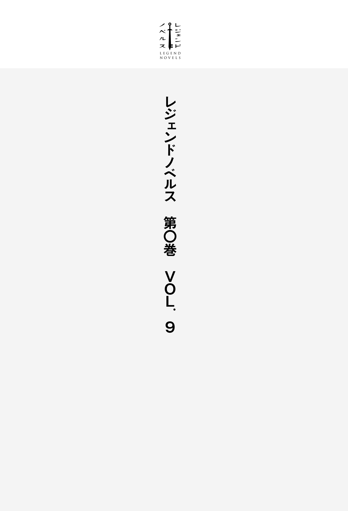

| レジェンドノベルス第０巻 ＶＯＬ．９ ２０１９年６月版 | |
| 丁々発止 & 松屋大好 & 止流うず & 河畑濤士 | |
| 講談社 (2019) | |
本作品は、縦書き表示での閲覧を推奨いたします。横書き表示にした際には、表示が一部くずれる恐れがあります。
ご利用になるブラウザまたはビューワにより、表示が異なることがあります。

『人の成長の歴史とはすなわち敗北の歴史である』
これは俺が中学生のときに読んだ本に出てきた言葉だ。
世間にはあまり評価されない作者を、ひとり評価することで悦に入っていただけの俺が、はたしてその本の中身を正しく理解できていたのかは甚だ疑問ではあるが、それでも自分なりにその作者の言葉が気に入っていた。
いつの間にか、児童買春だかなんだか、恥ずかしすぎる罪で逮捕された挙句に、自殺してしまった作者の本を読むこともなくなっていたが、それでもこんなことがあると、ふと彼の言葉を思い出すことがある。
「おーい。聞いてんのかよテメェはー、あー？」
例えば二、三年前の俺ならどうしていただろう。少なくとも、下校途中のバスの中で、頭の悪そうな金髪野郎に唐突に席を譲れと言われて「はい、どうぞ」などと答える俺ではなかったはずだ。
「......はは、どうぞどうぞ」
ところが今ではご覧の有り様だ。
これが小学生のころならキャンキャン
仮にこの場で喧嘩を買ってやったとしても、負ければボコボコにされて痛い目に遭い、たとえ勝つことができたとしても、警察のお世話になって社会的にボコボコにされて、やはり痛い目に遭うのだ。
そろそろ将来のことも考え始めないといけない時期に、そんなことは御免こうむりたい。
だからこそ俺は頭を下げて譲るのだ。
へらへらと笑って
これが成長の成果なのだとしたら、人間っていったいなんなんだろうな。
席を立つと、揺れるバスの中で立っているのが俺だけになった。
他の全員が座っている中で、自分だけが突っ立っていると、まるで
そこかしこから視線を感じる。これが同情的な視線なのか、あるいは嘲笑の視線なのかは分からないが、どちらにしたところで居心地の
なぜ何も悪いことをしていないのに、こんな目に遭わなければいけないのか。
憤りをぶつける先もないので、元凶である金髪野郎のほうにチラリと目を向けると、もう俺のことなんて気にもならないのか、
やばい。殴りたい。
しかし、そんな衝動をぐっと
見ていたら余計に腹が立つし、目が合ってまた絡まれでもしたら面倒だ。前を向いて景色でも眺めていればすぐに停留所に着く。そこでバスから降りれば終わり。それで良いはずだ。
自分自身に言い聞かせていると突然──ガタンッとバスが何かに乗り上げたように揺れた。
めずらしい。
このバスは決まったルートしか走らない路線バスだ。俺はこのバスを毎日の登下校に使っているので、飽きるほど同じ道を通ってきた。それなのに今のような揺れを感じたのは初めてだ。
いったい何が？ と進行方向に目を向けると──
バスのフロントガラスが白く染まった。
同時に
身構える暇もなく足が地面から浮き、体が前方に投げ出されるのが分かった。
一瞬にしてコントロールを失ってしまった体とは対極に、視覚だけが異常に
まるでスローモーションを見ているように、周りの景色がゆっくりとよく見えた。
そしてそれは視線の先。ひび割れで真っ白く染まったフロントガラスが完全に砕け散り、その破片が群れとなって自分に迫っているところまで、ハッキリと見えた。
まずいということは分かる。だけど体が動かない。せめて急所ぐらいは守りたいのに、腕の動きが鈍すぎる。腕を上げきるより先にガラスの雨に身を撃たれるのが分かってしまう。
制服のブレザーでも着ていれば、まだその防護性に多少の期待を持てたのかもしれないが、今は梅雨も明けてそろそろ夏かという季節。身につけているのは半袖のワイシャツ一枚だ。
せめてもの抵抗は、目を閉じて体を
全身の至るところを刺す、あるいは切るような鋭い痛みが一瞬走った。本当に一瞬だった。正直、覚悟していたほどじゃない。内心ホッとしたが、まだ気を抜いている場合じゃなかった。
今度は投げ出された勢いのまま受け身も取れずに顔から地面に落ちた。それでも勢いは止まらずにバスの通路を転がり、最後に背中をしたたかに打ちつけたところで、やっと勢いが止まった。
痛い。全身痛いが、特に最後に打った背中がめちゃくちゃ痛い。何か硬い物にぶつかったのか、肉が押し潰されるような感触があった。しかし不幸中の幸いと言うべきか。確かに背中は
それにしてもいったい何が起こったのか。事故か？ なにかえらく暑い気がするけど、まさかバスが爆発炎上していたりしないだろうな。
確かめるために固く閉じていた目を開くと、逆さまになった車内が見えた。一瞬バスが横転したのかと思ったが違う。逆さまなのは俺自身だ。
背中を打ちつけた硬い物に脚だけを引っ掛けて、上半身は通路に仰向けに──有り体に言えば、椅子に座ったまま後ろにひっくり返ったような姿勢で──俺は倒れているようだ。
目線を足下に向けると、運転席横の運賃箱を足蹴にしているのが見えた。どうやら背中をぶつけたものの正体はこれらしい。その向こうにはガラスが吹き飛んでグシャグシャに潰れたバスのフロント部分が見えた。
ここからエアコンの冷気が全部逃げているからこんなにも暑いのか。少し隙を見せるだけでこの暑さとは、地球の温暖化はいよいよ深刻だな。
現実逃避ぎみにどうでもいいことを考えながら、今度は顎を上げて目線を車内に移した。
──どうやら乗客は全員無事らしい。
最後尾の四人掛けの席の通路に面した位置に座っていたおばさんだけが、座席から転げ落ちたらしく肘をさすっているが、驚くべきことにそれ以外の乗客は座席から落ちてすらおらず、特筆すべき被害は見られない。せいぜいが前の席の背もたれに顔をぶつけて鼻を押さえている者がいるくらいだ。
これはもしかしなくても一番被害が大きいのは俺なんじゃないだろうか。
変な男に席を立たされた挙句、立っていたせいで派手に吹っ飛んで大怪我である。
残念すぎて乾いた笑いすら出てこない。
せめてあの金髪野郎も多少は痛い目に遭っていないと納得できそうにない。
怒りを抱えたまま、再び車内に目を戻したところでギョッとした。
──乗客全員が俺を見ていたのだ。
右を見ても左を見ても、どの席に視線を動かしても目が合う。そして、俺と目が合った乗客は全員が一様に同じ表情をしていた。
それはまるで信じられないものでも見たような、そんな
ぞくり、と。
今までの人生で感じたことがないくらいの悪寒が背筋に走った。とてつもなく嫌な予感がする。予感に従うようにゆっくりと視線を自分の体に向けた。
赤い。
真っ赤だった。
今日は間違えて赤いシャツで登校してしまったのか。反射的にそう思ってしまうほどに制服が真っ赤に染まっていた。
震える。だって、これがもしそうなら、もう手遅れなほどに出ている。
だから
しかし、俺の祈るような
トプッ、トプッ、と。赤い液体が首筋あたりから飛び、シャツを染め上げているのが視界に映った。
トプッ、トプッ、トプッ、と。それはまるで鼓動のリズムを刻むように
反射的に首筋を押さえようと腕を──
──動かなかった。
指がかろうじて動く程度で、腕が持ち上がらない。右腕も左腕も持ち上がらない。持ち上がる気がしない。
さっきまであんなに暑かったのに、今は寒い──。
なんで......？
なんなんだよこれ？
まさか俺............死ぬ？
ピロン♪
しん、と静まり返る車内に場違いな音が響いた。あまりの場違いさに、思考が働くよりも先に視線が動く。
音の発生源にいたのは金髪野郎だった。
金髪野郎がスマホを構えて俺に向けていた。
あまりのことに死にかけていることも忘れて啞然としてしまう。
たぶん、動画を撮っている。
死にそうな俺を、死んでいく俺を、こいつは動画に撮っている。
怒りで頭が真っ白に染まった。
殺したい。
こんなに純粋な殺意を覚えたのはおそらく生まれて初めてだ。
ふざけるなよ......！
今すぐ襲いかかって殺してやりたいのに、体がまったく動かない。
「──────ッ！」
せめて口から怒りをぶちまけようとしたが、唇が僅かに動いただけだった。
許せるか！ 許せるかよこんなことッ！ 死ね。死ねよ！
スマホをこちらに向け、興奮した様子で撮影を続ける金髪野郎を
せめて、全力でこの男を殺してやるつもりで、視線にありったけの殺意を込めた。
なぜ、俺が死ななければならないのだと、視線にありったけの怒りを込めた。
なぜ、俺はこんな男に媚びるような
視線に持ちうる全ての呪いを込めた。
睨んだ。睨んだ。睨んだ。睨んだ。睨んだ。睨んだ。
溢れ出す血が尽きても睨んだ。
呼吸が止まっても睨んだ。
視界が白く染まり、瞳が何も映さなくなっても、そこにいると信じて睨んだ。
最後まで睨み続けた。
そして、意識までもが白い光の中に消えていく瞬間──
『──────────── 』
光の中で何か声が聞こえた気がした。
世界が続く先は未来ではない。
本来、世界とは時間的にも空間的にも奥に広がっているはずなのだ。
＊
岩壁というには
上も下も右も左も、同じ土色の岩に覆われ、それ以外の色を見つけることはできない。
そのような場所でありながら息苦しさを感じさせないのはその広さ故か。
充分な横幅と天井まで高さをもった空間が、まるでトンネルを形作るように前後に延びていた。
「──────は？」
そんな土色の空間に一人
たった一文字の言葉とも言えない言葉だったが、継人は自分の口から声が出たことに驚いた。
確かめるように口に手を当てる。その手に息がかかる感触にさらに驚き、それ以前に自由に手が動くという事実に気づき
「生きてる......のか？」
そんな馬鹿な、と継人は思う。
助かるような出血量ではなかったはずだ。
そこでハッとして自身の体に目を向ける。
そこにあったのは血に染まった制服ではなく、染み一つない真っ白な制服だった。
まさか、先ほどまでのバスでの出来事は全て夢だったのか。継人の脳裏にそんな考えがよぎったが、それを否定しているのもまた彼自身が身につけている制服だった。
ボロボロなのだ。
まるで刃物を適当に走らせたように、あちこち切り裂かれ、穴が空いている。
その制服の変わり果てた姿が、あれは夢ではなかったと告げている。
だったら──と首を触る。......ない。
首から肩、腕、そして脇腹とまさぐっても、あるはずのものがそこにはなかった。
制服はズタズタなのにもかかわらず、その下にある継人の体には傷の一つも存在しなかった。
「どういうこった......？」
まさかバスでの出来事ではなく、今のこの状況が夢なのだろうか。しかし、夢にしては現状はあまりにリアルだ。
吸った空気の冷たさも、足裏に感じる地面の硬さも、現実感がありすぎてこれが夢の中とは到底思えない。
「それならやっぱり、......助かったのか？」
継人はあたりを見渡す。
そこはゴツゴツとした茶色い岩で形成された洞窟のような場所だった。天井までの高さは四、五メートルほどもあり、道幅は必ずしも一定ではないものの、広いところではやはり四、五メートルほどの幅があった。かなり広大な雰囲気はあるが、それでも継人の目には普通の洞窟に見えた。
継人は洞窟の壁面をペタペタと触る。その感触を確かめながら思考を巡らせていると、
──かつん、と石を蹴るような音が響いた。
継人がハッと視線を向けると、ぬうっと、視線の先の岩陰からそれは現れた。
身長は高く、百八十センチを超えているだろう。全身ガッシリとしており、その体には元は白かったであろう黄ばんだシャツ一枚と、革製とおぼしきズボン、同じく革製らしきブーツを身につけていた。髪は色あせたブラウンで、左手には木製のバケツを持ち、右手にはツルハシを握ってそれを肩に担いでいた。
男だった。
現れた男も継人に気づき、視線を向けた。
男の突然の登場に驚いた継人だったが、どこかも分からない洞窟の中で人に出会えたことは幸運以外の何物でもない。早速、男に話しかけようと一歩を踏み出したが、すぐに二歩目を
目が合ったからだ。
男の『青い瞳』と。
え──？ と継人は混乱する。
男の顔は彫りが深く、ブラウンの髪に映える鮮やかな青い瞳をしていた。年の頃は四十過ぎといったところに見えるが、継人とは人種が違うためにハッキリとは分からなかった。
そう人種が違った。男は明らかに見慣れたアジア系の人種ではなかったのだ。
（......まさか、ここって日本ですらない？）
固まる継人に
「おい、タグ無し。通るなら早く通れ」
男は〝言葉〟を発しながら、自身がやってきた岩陰の向こうを親指で指し示す。しかし、継人はその〝言葉〟を聞くと同時に目を見開いてさらに固まってしまい、一向に返事をしない。
男はそんな継人の様子に
「通らねえんだったら、俺が終わるまでそれ以上近づくんじゃねえぞっ！」
そう言って継人に向かって軽く
それでも反応を見せない継人に、男はもう一度舌打ちすると、それ以上は何も言わずに洞窟の壁に向き直り、その岩壁にツルハシを振り下ろし始めた。
男が壁に向かってツルハシを振り下ろす音が響く
直前まで、継人の心配は別のところにあった。
ここは日本ではないのではないか。だったら日本語も通じないだろう。英語の成績に自信がない自分が、日本大使館までたどり着けるのだろうか。
せいぜいがこの程度のものだった。
しかし、蓋を開けてみればどうだ。
継人はこの外国人らしき男の言うことが完璧に理解できた。それだけなら普通は喜ぶべきところだろう。言葉が通じないかもしれないと心配していたら、それが
だが違うのだ。通じるから、歓迎できないのだ。
継人は確かに男の〝言葉〟が理解できた。
しかし同時に、男が操る言語がどこの国のなんという言語なのか、まるで分からなかったのだ。
男の口から聞こえてきたそれは、もちろん日本語ではなかった。そして英語でもなければ中国語でもない。継人がこれまでの人生でメディアなどを通じて見聞きしてきたどの言語とも違う、まったく聞き覚えのない言語だったのだ。
だというのに理解できた。
男の口から発声される聞き覚えのない音の羅列の意味が──〝言葉〟が分かった。
継人の思考は完全に止まっていた。
今の事態は、自分が考えて答えにたどり着ける範囲を
何が起こっているのか、誰か教えてほしかった。
どれだけの時間が
完全に思考停止に陥っていた継人が再起動し、青い瞳の男は壁を掘って何かを集めているらしいと気づいたころには、男のバケツはすでに石でいっぱいになっていた。
男は満杯になったバケツをニヤニヤとした顔で一
継人はぼんやりとその様子を眺めていたが、そんな場合ではないとなんとか気を持ち直す。
男が去ったほうへ向かえば外に出られるかもしれない。
継人は男を追いかけようと一歩踏み出した。しかし、そこでふと男が掘っていた壁が目につく。
（......何を集めてたんだ？）
一見すると、それはただ掘り返されて砕かれた岩壁の残骸のようだったが、よく見るとその茶色い
（何だこれ、宝石か？）
あの男は宝石の採掘をしていたのだろうか。
言われてみれば、何か必要以上に警戒されていたように継人には思えた。
もしかしたら、男は採掘した宝石を横から盗まれることを心配していたのかもしれない。
男の掘った壁の亀裂に指をかけグッと力を込めると、壁は柔らかく、一部がボロッと簡単に崩れ落ちた。
落ちた石を拾って見てみると、男が捨てていった石よりも多量の青い粒が含まれているのが割れ目を中心に確認できた。
（この石、価値があるなら持っていったほうがいいのか？）
継人は尻のポケットを探りながら考える。普段ならそこに財布が入っているのだが、やはりというべきか今は何も入っていなかった。
どこかも知れない土地で先立つものがない。気休めかもしれないが、その石をポケットにしまっておくことにした。
（もう少し持っていったほうがいいか......？）
継人は引き続き壁を力任せに削ってみるが、先ほどとは打って変わって青い粒があまり含まれていない石しか出てこない。男が捨てていったような石ばかりだ。
どうやら、ぽんぽんと簡単に採れるものではないらしい。
（だったらもういいか。そもそも価値があるのかも不明だしな）
継人が引き上げようとしたとき──自ら崩した壁の一部がキラリと光るのが目の端に映った。
よく目を凝らして見てみると、そこには青い石とは違う、無色透明のきれいな石が埋もれていた。
＊
継人は青い瞳の男が去っていった岩陰の先に進んでいた。
男の背中はとうに見失っているが、洞窟は一本道だったので迷うこともなかった。
先ほど掘り出した透明な石は継人の手の中でキラキラと光を反射していた。
価値のある物なのだろうか、と考えながら石の透明度を確かめていた継人は、石が反射する光を見て、ふと、なぜ今の今まで気がつかなかったのかという事実に、遅まきながら気がついた。
（この洞窟、なんでこんなに明るいんだ？）
透明な石に細かい傷すらないことが目で見て確認できるほどに、洞窟内は明るい。なのに光源らしきものはどこにも見当たらない。
「............」
まだ何一つ疑問は解消されていないというのに、訳の分からない事実だけが積み重なっていく。
継人はまた頭を抱えそうになるが、考えたところで分からないという結論がすでに出ているので、もう何も考えないことにした。
しばらく進むと継人は初めて分岐に差し掛かった。左右に延びたＹ字路だった。
どちらに進めば？ と悩む必要はなかった。向かって右の道から人が現れては、左の道へと進んでいくのが見えたからだ。
左の道に消えていく人々は皆一様に重そうなバケツを運んでいる。おそらく、青い瞳の男と同じように洞窟内で石の採掘を行い、それを外に運んでいる最中なのではないだろうか。
継人は何食わぬ顔で人の流れに乗り、出口と思われるほうへと歩を進めた。
そのまま五分ほど進むと、視線の先に階段が見えてきた。
洞窟の道幅と同じくとても幅の広い階段で、継人なら十人は並んで上れそうなほどだ。
階段に足をかけ、段差の向かう先に視線を上げると、洞窟の中を満たす不自然な光とは違う
外の光を見てホッと息を吐いた継人は、バケツを重そうに運ぶ人々を尻目に足早に階段を上っていった。
＊
すでに夕暮れに程近い
継人は固く乾燥した土の地面を踏み締めながら、騒々しいその場所を見渡した。
どうやらそこは山を切り開いて造った広場であるらしかった。
右を向いても左を向いても森──と言えるほど
だからといって窮屈さを感じないのは、単純に切り開かれた範囲が広いからだ。ざっと見ただけでも広場は学校のグラウンドほどの広さがありそうだった。
広場には、木造の大小様々だが一様に年季の入った建物が数棟と、少し離れたところに
継人は広場をぶらぶらと歩く。
とにかく人が多い。
ツルハシやスコップ、バケツなどを抱えた人々がひしめき合っている。大半は男だが僅かに女もいる。年齢層はバラバラで子供から老人まで様々だ。数は百をゆうに超えているが、それでも今も洞窟の出口の階段からは続々と人が溢れ出てきていた。
（やっぱり、本格的に日本じゃないな。これだけ人間がいて黒髪の
広場に溢れる人々の服装には違和感があった。その違和感を言葉にすれば「古い」だろうか。服が着古されているという意味ではなく、服のデザイン──つまり時代が古いのだ。
（なんか中世っぽいっつーか、なんつーか......）
継人が
継人が視線だけでその後を追うと、そこにはより一層の人だかりがあった。
（──これは、並んでるのか？）
石の詰まった重そうなバケツを持った者が、何かを待つようにその場に立っていた。かなり雑然としているが、注意深く見てみるとその人だかりは確かに列になっていた。
（もしかして、ここで石を換金するのか？）
継人が列の先頭が見える位置へと移動していくと、そこにはいくつもの台座が横一列に並べられ、その前にはバケツを持った者が順番待ちをしていた。
そして、台座の向こう側で列を受け持っているのは、広場に溢れ返る人々とは明らかに身なりからして違う者たちだった。
真っ白いワイシャツの上から黒いベストを身につけた清潔感のある整った印象の者たち。
そんな彼らが列に並んだ者からバケツを受け取り、そのバケツを台座の上に備えつけられた機具の上にのせて何かを確認すると、石の詰まったバケツと引き換えに硬貨らしき物を渡していた。
（俺も並んだほうがいいのか？ でも、これだけじゃなぁ......）
ポケットから青い粒が含まれた石を取り出し、しばらく眺めたあとに、ため息をついた。
バケツいっぱいの石を換金している者ですら、お世辞にもきれいとは言えない身なりなのだ。
ということは必然、石を売って得られる稼ぎはそれほど多くはないのだろう。
そうであるならば石一個の値段など推して知るべしである。
（どこかも知らない国で無一文、か）
本当にこれからどうしたものかと継人が途方に暮れていると──
「お兄さん、大丈夫かい？」
継人の後ろから声が聞こえた。
継人にとって、やはりそれは聞き覚えのない言語であったが、洞窟内で聞いた男の言葉と同じく意味は理解できたので、声が聞こえたほうへ振り返った。
そこには木箱の上にカラフルな何かが詰まった瓶を所狭しと並べた露店があった。
露店の主が、継人に人のよさそうな笑みを向けていた。
二つ並んだ高さ幅ともに一メートルほどの木箱が、水色の清潔な布を掛けられることによって見事な商品陳列台に化けていた。
陳列台の上には小さな
乾燥しても鮮やかさが損なわれていない色彩豊かな果物を眺めながら、なぜこんなところに露店が？ と継人は疑問に思ったが、よくよく見てみると、周りにも似たような露店や屋台が数軒だけではあるが存在していた。
「──お兄さん、まさか全部盗まれちゃったのかい？」
露店商が再度、継人に話しかけた。
ドライフルーツを並べた露店の店主と思われるその男は、歳は三十前後の優男で、人のよさが
（盗まれたって、何のことだ？）
継人は眉をひそめたが、よくよく今の自分の姿を思い起こしてみると納得した。
石一つ握り締めて肩を落とし、ため息までつきながら佇んでいたものだから、採掘した石をバケツごと全て盗まれて途方に暮れている、とでも思われたのだろう。
「災難だった──というより、それはさすがに不注意すぎないかい？ 普通は肌身離さず持っておくべきものだよ」
（いや、バケツ肌身離さず持ってたら石なんて掘れねえだろ）
継人は心の中で反論したが、それを口に出すことはしない。
自分は相手の謎言語をなぜか理解できるが、目の前の露店商が日本語を理解できるとは思えなかったからだ。
「いくらか持ち合わせはあるのかな？ さすがにその魔力 鉱石一つじゃどうにもならないよ」
露店商は継人の手の中の石に視線を向けた。
「──魔力？」
魔力という意味にしか理解できなかった言葉を、継人はつい日本語で聞き返してしまった。
すぐに──しまった、と思ったが、
「うん？ そう魔力だよ。魔力鉱石。まさか知らずに採掘してたのかい？」
露店商は継人の日本語に対して当たり前のように返事をした。
「えっ？ まさか日本語が分かるのか!? 」
「ニホン語？ ......ああ、君の使ってる言葉か。初めて聞く言葉だし、僕にはちょっと分からないかな」
継人が露店商に向ける目には、この男はいったい何を言っているのか、という疑問がありありと浮かんでいた。
分からないと言いながらも、継人の日本語に対してキッチリと返事をしている。
本当に日本語が分からないなら、今成立しているこの会話はなんだというのか。
「いや、なに言って──」
だが、継人は露店商に言い募ろうとしたところで、はたと気づいた。
自分も同じではないか、と。
日本語を初めて聞くと言う露店商と同じく、継人も露店商が話す言語は今日初めて聞いたものだ。その言語の発音も文法もまったく分からない。だというのに言葉を聞けば意味だけは理解できるのだ。
継人は自分だけが何かおかしくなって、そのような状態になっていると思っていたが、この露店商も同じように──いや、それがさも当然のように振る舞う露店商の態度から考えるに、もしかしたらここにいる人々は全員がそのような状態なのかもしれなかった。
継人は、情報が集まれば何が起きているのか少しは分かるはずだと考えていたが、情報が増えれば増えるほど余計に事態が分からなくなっていた。
「......お兄さん、落ち込むのも分かるけど、まあ元気出しなよ。嘆いてたって盗まれた物は戻ってこないんだからさ」
黙り込む継人を見て、露店商は盛大に勘違いした言葉をかけた。
思考の海に潜りかけていた継人は、その声を聞いて露店商のほうに意識を戻す。
考えるのは情報が
「......ああ、そうだな。まあ、落ち込むっていうより珍しい状況に混乱してるって感じだけどな」
「珍しいって......、もしかしてベルグに来たのは最近かい？」
ベルグ。ここの名前か？ と内心首を
「最近っていうか、まあ今日だな」
「あー、そりゃあ本当にツイてなかったね。これは都会全般に言えることではあるんだけど、とにかく色んな人が集まってくるからさ。特にベルグは魔力鉱石の採掘でいつも人手不足だから、石を掘りさえしてくれるなら基本誰でも歓迎みたいなところがあってね──」
そう言いながら露店商は広場に集まる人々を見渡し、僅かに声を潜め、
「そうなってくると訳あり連中や盗賊まがいの連中まで、色々集まっちゃうのさ」
つまり、このあたりでは盗みなど珍しくないということだ。
継人は少し苦い顔を見せる。
「それはどうするんだい？」
露店商は継人の持つ石を指差しながら尋ねた。
「これ一つのために列に並ぶのもアホらしいだろ」
「ハハッ、だろうね。良ければ僕が買い取ろうか？」
「いいのか？ いくらだ？」
「これくらいの石なら大銅貨一枚が相場かな。うーん、見たところ純度もそれなりだし、おまけして銅貨一枚プラスの十一ラークでいかがかな？」
それはつまりいくらなんだよ、と継人は言いたかったがグッと我慢する。
通貨の価値や単位を理解していないと知られるのはさすがにまずい気がした。
それが知られたらぼったくられ放題であるし、何よりそんなことも知らない奴は単純に怪しい。
「......十一ラークか。それで何か買えるものはあるか？」
継人は金の価値を把握しようと、変化球的な質問を投げながら露店に並んだ商品に目をやる。
「うーん、さすがに十一ラークだとドライフルーツぐらいしか無理だね。この
露店商が手にしている木のスプーンは本当に小さなもので、コーヒーに砂糖を入れるのにちょうど良さそうなサイズだ。そのスプーン一杯で一ラーク。十一倍しても下手をすれば一口で完食できてしまいそうである。
さらに露店商が差し出した小さな巾着袋は三十ラーク。そんな小さな巾着すら買えない。
どうやら十一ラークというのは相当にはした金らしかった。
日本円に直したら百円の価値もないかもしれない。
これでは無一文と変わらない。脱力感に襲われたところで、そういえばと気がつく。
「これは買い取れるか？」
継人がポケットから取り出した透明な石を見て、露店商は目を見張る。
「おおっ、エーテル結晶だね」
「エーテル結晶？」
「各種ポーションを作るのに必要なんだけどレアでね。今日初めて潜ってそれが採れたんなら運が良いよ。ああ、でも荷物を盗まれたんなら、差し引きするとやっぱり運は悪いかな。あっはっは」
（つまり、荷物なんて盗まれてない俺は運が良いってことか。いや、でも運が良い奴がこんな訳の分からないところで迷子にはならないか......）
「──で、買い取れるのか？」
「もちろんだよ。是非買い取らせてもらいたい。僕に売ってくれるなら相場より色をつけて──大銀貨二枚と銀貨五枚出そう」
露店商は右手の指二本と左手の指五本を継人に示しながら自信満々に言い放ったが、当の継人はその価値が分からないので、しらけた顔をしていた。
「あれっ？ 不満かい？ 向こうで売ったって大銀貨二枚がせいぜい、よくても銀貨が一、二枚つく程度だよ？」
露店商が列を指し示しながら言った言葉が、真実なのかどうかの判断は継人にはつかないが、それを確かめるために今から列に並ぶ気にはなれなかったので、言い値で石を売ることにした。
「分かった。値段はそれでいいから、その袋をおまけしてくれ」
「袋って、このドライフルーツ用の？ 袋だけ？」
「財布だ」
「ああ、なるほど。それじゃあ、魔力鉱石一つにエーテル結晶一つ、締めて二千五百十一ラークと、おまけの袋だね。まいど」
受け取った金を数え、袋に収めながら、継人は今まで露店商が口にした通貨の情報と合わせて計算する。
大きな銀貨二枚。小さな銀貨五枚。大きな銅貨一枚。小さな銅貨一枚。これが二千五百十一ラークということは──
大銀貨一枚が千ラーク。
銀貨一枚が百ラーク。
大銅貨一枚が十ラーク。
銅貨一枚が一ラーク。
ということになる。
これで通貨に関してはある程度のところは把握できた。あとはその価値をもう少し正確に把握できれば、と露店の商品に目を向ける。
「その干し肉みたいなのはいくらだ？」
継人は陳列された籠の中にある、缶ジュースほどの大きさの赤黒い塊を指差して尋ねた。
「みたいじゃなくて、ちゃんと干し肉だよ。銀貨一枚ね。あ、肉用の袋は少し大きめだから大銅貨五枚だよ」
干し肉は継人では一食で食べ切れないほどの大きさだ。それが銀貨一枚、百ラークなら、一日を干し肉一つで
「分かった。もらう」
食事を確保できたところで、継人は空を見上げながら露店商に尋ねた。
「この近くで泊まれる場所があるか知らないか？」
太陽の位置から考えると、もう日が暮れるまでそれほど猶予もないだろう。日本大使館
「うーん、宿かい？ そうだねぇ。君でも大丈夫そうなところなら......ここからまっすぐ下りていって──」
露店商は広場の端の林が開けた場所を指差しながら言う。
「大通りに差し掛かる直前、左手側に『竜の巣穴亭』って宿があるから、そこがおすすめかな」
「『竜の巣穴亭』だな。分かった」
泊まれる場所がなんとかなりそうなことに、継人は一つ息をついて
「うん、まあ気を落とさないで頑張ってよ。真面目にやっていれば、金貨の一枚ぐらいはすぐに
「金貨？ ああ、まあそうかもな」
金貨なんてあるのかと考えながら、適当な生返事を残して継人は露店をあとにする。
立ち去っていく継人の背中に、露店商は最後に声をかけた。
「あと今さらになるけど──ようこそベルグへ！ 君がこの街で幸いであるように祈っているよ！」
人のよい笑顔を浮かべた露店商の言葉に、今日初めて継人は口元を綻ばせた。
広場の端からは下り階段が延びていた。
道幅二メートルほどの山道に、
石の採掘を終えて帰路につく人々に紛れ、継人も階段を下っていく。
左右を木々に囲まれて、頭上にもその枝葉が覆われている山道は薄暗い。
これが昼間ならば、枝葉の隙間から木漏れ日が心地よく
（......そういえば少し冷えるか？）
継人は半袖から
日本は初夏だったはずだが、ここは違うのだろうか。
凍えるには程遠いが、日が完全に落ちれば半袖では少しつらいかもしれない。
そんなことを考えながら十分ほど階段を下っていると、だんだんと下りの傾斜が緩くなり、ついには足元の階段が途絶えた。
そこまで来ると木々は完全に開け、その先には街が広がっているのが見えた。
＊
そこはきれいな街だった。
均一な煉瓦で舗装された石畳に、壁を
しかし、やはりと言うべきか、その町並みはどこか古臭く、現代的な匂いがまったく感じられなかった。
（確か、まっすぐ進んで、大通りに差し掛かる直前の左手側......だったな）
継人は露店商に教えられた情報を思い出しながら、言われたとおりに脇道にも入らず、まっすぐに歩を進めた。
そのまま歩き続けていると、まもなく人通りの多い大きな道に突き当たった。
（これが言ってた大通りか？）
継人は店舗などが多く建ち並び、人々が
（たぶん間違ってないと思うけど、目的の宿は大通りに差し掛かる直前って言ってたし、すでに通りすぎてるってことだよな......？）
だとしたら少し道を戻らなければならない。
そう考え、継人がもと来た道を振り返った瞬間だった。
ただ何となく、
とても自然に、
それは視界に入った。
自らが進んできた道を戻った先──下ってきた階段を上り直したさらに先──先ほどの洞窟さえも飛び越えたさらにさらに先に────それはあった。
それは山だった。
いや、継人の常識では山というのは三角形に近い形をしている。それが山だ。
だったらそれは山ではない。
山ではなく、それは
地面から空に向かって伸びた──そう、つららを逆さにしたような、それは棘だった。
ただし、そのスケールがそれを棘などと呼ぶことを決して許さない。
それは森から突き出て、雲を貫き、天にまで伸びていた。
その雄大さは、やはり山と言う他なかった。
継人はその有り得ない形状の山を見上げながら、開いた口が塞がらなかった。
ただただ啞然とした。
そして、自らの常識の中では絶対に有り得るはずのない光景を前にして、今まで全て保留としてきた数々の不可解な現象への疑問が頭の中で一気に爆発した。
日本という国で、十七年かけて培ってきた知識も経験も全てが吹き飛び、キレイな更地となった脳内には答えが一つしか転がっていなかった。
────ここは地球ではなかった。
＊
街はガヤガヤと騒がしい。
いそいそと店じまいをする商店の店主。そこにちょっと待ってくれと駆け込み、急いで買い物を済ませる中年男。ペチャクチャと話しながらも足早に帰路につく女たち。
それらの
不快な音ではない。むしろそれは穏やかな音色と言えた。
その音色に揺り起こされるように、継人の意識は現実へと戻ってきた。
まだよく働かない頭で、ぼんやりと周りに目をやると、そこには夕日に染まる街の景色があり、それと同じく茜色に染まった棘状の山が、堂々と天に向かってそびえ立っているのが見えた。
（夢じゃない。現実......これが現実？ ......現実ってなんだっけ？）
そんな風に現実逃避しながらも、このまま日が暮れることを恐れ、露店商に教わった宿を目線だけで探し始めている継人は、程々には冷静であると言えた。
彼が冷静でいられたのは、ここが地球ではないという可能性が、これまで一度も頭をよぎらなかったわけではないからだ。しかし、今までは荒唐無稽なその考えを無意識に排除していたのだ。
宿を探して視線と足をさまよわせること、一、二分ほど。
──竜の巣穴亭。
大通りから十メートルほど戻った場所に、目的の建物を見つけた。
その外壁に固定された金属製の看板に刻まれた──どこかカタカナに似ているが決して見覚えのない──文字を、継人は当たり前のように読み上げることができた。どうやら言葉だけでなく、文字まで理解できるようだった。
（宇宙人に脳みそ改造されて、別の星に放り出されたとか......？ いや、魔力鉱石なんて物があるんだし、魔法的な力でファンタジー世界に来たってことも......）
看板の前で固まってつらつらと考えていたら、あたりは夕闇に吞まれ始めていた。
継人は一旦思考を中断し、建物の扉に手をかけて竜の巣穴亭へと足を踏み入れた。
扉をくぐると正面の奥にカウンターらしきものがあった。そして右手に見えるのは食堂だろう。料理が並べられたテーブルがいくつもあり、男たちが騒がしく食事を楽しんでいた。
継人は
「............」
そこに待っていた人物を見て、継人は固まっていた。
別に美人の受付を期待していたわけではないが、それでも
だというのに待っていたのはそのどちらでもない。
そこにいたのは巨人と見まがう大男だった。
明らかに二メートルを超える身長。ただでさえ大きい
殺し屋だってそこまで鋭くないだろうという視線が継人に向けられていた。
（なんだ、この噓みたいに
入る店を間違えたのだろうか、と反射的に思ってしまう。
しかし、そんなはずはない。何度も看板を確認したのだ。
継人は驚きながらも、いつまでも黙って突っ立っているわけにはいかないので、宿の店主だと思われるその大男に用件を伝える。
「一泊頼みたい。部屋は空いてるか？」
「......個室のみ。食堂を使うのは許可しない。......それでもいいなら銀貨五枚だ」
どうやら宿で間違いなさそうで安心する。
個室はそもそも一人なので問題ない。食堂に関しては一見さんお断りということなのだろうか？ よく分からないが、干し肉があるのでそちらも問題はない。継人は大銀貨を店主に手渡した。
釣りの銀貨を受け取り、厳つい店主に案内されて部屋へと向かう。
石造りの階段を三階まで上り、階段から見てすぐ手前にあった部屋に案内された。
「これが鍵。こっちは明かりと湯だ」
店主にそう言われて手渡されたのは、棒の先に突起がついたシンプルな鍵と、単二電池を倍の長さにしたくらいの銀色に輝く金属の筒二本だった。
（鍵はともかく、こっちはなんだ？）
継人は金属の筒を見ながら眉をひそめる。
聞き間違いでなければ『明かり』と『湯』だと言われた気がするが意味が分からない。どう見たってただの金属の筒である。
「なんだこれ？」
考えても分かりそうもなかったので素直に尋ねた継人だったが、彼の質問を聞き今度は店主が眉をひそめた。
何を言っているんだこのガキは、とでも言いたげな顔をしている。
その反応を見て、どうやらこの金属の筒は知っていて当然な、常識的代物らしいと継人は気づいたが、彼は自分が客だということもあり、開き直って目線だけで店主に説明を促した。
すると店主は継人の手から筒を奪うと部屋に入っていき、テーブルの上にあった三十センチほどの
その瞬間、パッとオブジェに光が
（なるほど、確かに明かりだな）
どうやらその筒は電池か何かのようだ。
「──湯のほうも同じだ。風呂釜に水を
店主が魔石と呼んだ金属の筒をオブジェから引き抜くと明かりが消えた。
どう見ても石には見えないが、と継人が筒を振ると、中からシャカシャカと音が聞こえた。どうやら金属の筒の中に何かが入っているらしい。それが石なのかもしれない。
「なるほど、分かった」
「チェックアウトは正午の鐘が鳴り終わるまでだ。それを過ぎれば追加料金をもらう」
そう言い残すと店主は部屋から去っていった。
「──......ふぅ」
店主が去ると、継人は部屋に鍵をかけ、ベッドに飛び込み一息ついた。
今日という日は、継人の人生の中でもっとも激動の一日だったことは間違いない。
下校中に事故に遭い、そこで死んだはずが洞窟にいて、洞窟を出てみれば地球じゃなかった。
何が起こっているのか、これからどうなっていくのか、地球に帰ることができるのか、まだ何も分からない。
それでもたった一つだけ分かることがある。
拳をグッと握りしめ、パッと力を抜く。
白くなった手のひらに血が流れて赤く色付いた。
「生きてる」
そのことに何よりホッとした。
ここがどこだろうが、何が起こっていようが、生きているのだ、間違いなく。
継人はもう一度深く息をつくと、ベッドに体を沈み込ませた。
そのまましばし心地よい感触を楽しんでいたが、彼自身も気づかない疲労がたまっていたのか、いつしかその意識まで柔らかいベッドに沈んでいった。
カラーン、カラーン、と澄んだ鐘の音が遠く響いていた。
その穏やかな音色に釣られるように、継人の意識はまどろみの中から浮かび上がった。
「......んん、ふああぁぁ」
一つ大きな
どうやらいつの間にか眠ってしまったようだ。
継人はボーッと部屋の中を見回した。
部屋に光源は無かったが、窓からはうっすらとした明かりが射し込んできていたので、それなりに見通しはきく。
それでも薄暗いので、おそらくはまだ明け方なのだろう。
「......喉渇いたな」
結局、昨日は何も口に入れないで眠ってしまったので、渇きと空腹が酷かった。
干し肉があったことを思い出したが、食事よりも先に水で渇きを潤したい。しかし、部屋を見回しても水差しらしきものは見当たらなかった。
（そういえば風呂があるんだったな。ならそっちに水もあるか？）
八畳ほどの部屋に、入口とは違う扉がもう一つある。
その扉を開けるとすぐ目の前に洗面台があった。その隣が風呂で、奥がトイレのようだ。
「水道......だよな？」
洗面台には蛇口らしきものが付いているが、これは水道なのだろうかと首を傾げる。
とりあえず、と奇妙な形状の蛇口を
間違いなく水道のようだ。
電灯のようなものがあったり、水道があったり、この星にはそれなりの文明度はあるらしい。
しかし、問題はこの水が飲めるものなのかどうかだ。
継人は蛇口から出る水を手に
日本では問題なく飲める水道水だが、実は飲めない国も多い。地球ですらそうなのに、こんな謎惑星の水道水など普通に考えたら飲めるはずがない。
継人はしばらく悩んでいたが、悩んでいても分かるわけがないと気づき、素直に聞きに行こうと一階フロントに向かった。
「......早いな。チェックアウトか？」
一階の食堂で欠伸まじりに木のコップを傾けていた店主が、継人に気づくと声をかけた。
「いや、水が飲めるか聞きに来ただけだ」
「食堂は駄目だと言ったはずだぞ」
「ああ、違う違う。部屋の水だ。水道水は飲んでも平気か？」
「水道の水か。問題ないぜ。ウチの水は全て飲料水だ」
「そうか。──あ」
安心して部屋に戻ろうとした継人だったが、ふと気づいたことがあり足を止める。
「なあ、このあたりで何か働き口に心当たりってあるか？」
継人は店主に尋ねた。
水も食料も寝床も、今は運良く確保できているが、それも昨日偶然に金を手に入れることができたからだ。だがその金も今のままでは三日ほどで尽きる。
その前に地球に帰る手段が見つかればいいが、なぜ自分がこんなところにいるのかすら分からない継人が、三日以内に帰る方法を見つけ出せる可能性は限りなく低いだろう。
そうであるならば、継人が現状まず最優先でやらなければならないことは──仕事だ。
三日という刻限を延ばすところから始めなくては、野垂れ死ぬことになる。
「働き口か。......普通ならギルドに行けって言いたいところなんだが、お前じゃ無理だろうしな」
ギルドというところに行けば仕事があるらしいが、店主から見て継人は眼鏡に
一瞬、ムッとした継人だったが、現役の高校生だった身から考えれば、確かに大した仕事ができるとは自分でも思えなかったので、口をつぐむしかなかった。
「そうだな、どうしても仕事がほしいなら、この店を出て右に道なりにまっすぐ進んで、そこから山を少し登った場所に〝ダンジョン〟がある。そこで魔力鉱石の採掘をやってるから行ってみろ」
店主の言葉を聞いて継人は固まった。
魔力鉱石の採掘は知っている。十中八九昨日の洞窟のことだろう。
継人は実は今日はその洞窟に向かう気でいたのだ。
露店商の話で魔力鉱石の採掘は人手不足らしいことは分かっていたし、昨日の様子から自分一人が紛れても問題ないだろうと考えたからだ。
店主に働き口を尋ねたのは、ここにはどのような仕事があるのかという情報収集の一環のつもりだった。もちろん良い働き口があるなら飛びついたかもしれないが、
だというのに、店主から返ってきた言葉には継人が
「......ダンジョン？」
確かに継人にはそう聞こえ──いや、継人の脳には店主の異言語がそう翻訳されて伝わった。
（ダンジョンって、あのダンジョン？ モンスターがいて、お宝が眠ってるアレのことだよな？）
「ダンジョンって言ってもそこまで心配しなくていい。採掘をするだけなら一階層で充分だし、その一階層だって冒険者が定期的にモンスターを間引いてるから、奥まで行かなきゃ大して危険はない」
魔力云々という言葉が飛び交っていた時点で一番怪しくはあったのだが、それでも可能性としては、一番ありえないと継人は思っていた。
それほどまでに、その響きは現実感がないのだ。
「魔力。ダンジョン。冒険者。モンスター......」
どうやらここはファンタジー世界らしかった。
＊
正午を知らせる鐘の音を背に、継人は階段状の山道を上り、昨日の洞窟へと向かっていた。
（危うく追加料金を取られるところだった......）
正午の鐘が示すとおり、現在は継人が目覚めてから、かなりの時間が経過している。
入浴や洗濯などに思ったよりも時間を取られてしまったのだ。
特に、
（次から洗濯は夜のうちに済ませよう）
継人はそう決意しながら、木漏れ日の溢れる階段を足早に上っていった。
「──やあ、おはよう。昨日は無事泊まれたかい？」
広場を歩いていると露店商が人好きのする笑顔で声をかけてきた。
「おかげさまでな」
継人はそのまま露店の前で足を止める。
買いたい物と聞きたいことがあった。
「とりあえずドライフルーツをくれ。あ、袋もな」
銀貨を一枚手渡しながら継人は言った。
昨日買った干し肉は今朝方食べたが、固い上に塩辛いので半分ほどはまだ腰の袋の中だ。
補充はなくなってからでいいだろう。それよりも塩辛さの口直しに甘い物がほしかった。
「銀貨一枚分ならこの匙を使ってよ。それで一杯五ラーク。袋が三十ラークだから、十四杯だね」
露店商から昨日の一杯一ラークの小匙よりも大きなスプーンを渡される。
小さなスプーンだと七十杯も掬わなければならないので手間だからだろう。
「ツルハシとバケツはあそこで買えばいいのか？」
継人がカラフルなドライフルーツを袋に詰めながら顎で指し示す。
洞窟の入口の横にはバケツが大量に積まれていた。
「バケツは勝手に使って構わないよ。でも換金するときには返すようにね。ツルハシはあのバケツの山の横にある建物の中で買えるよ。......確か、銀貨三枚だったかな」
「なるほど。あと水筒とか売ってるか？」
「水筒はないけど、水袋ならあるよ。銀貨二枚ね」
露店商はそう言うと継人に革の水袋を見せた。
袋というよりは、三角形のハンドバッグのようなそれは、しっかりとした作りの良い品物であるようだった。その分、多少は値が張るが、自販機やコンビニなど存在しないのだから、水分は持ち運べるようにしておきたい。
継人は銀貨二枚を支払い、水袋を受け取った。
「まいど。水だったら、あのツルハシを売ってる建物の前にある水道なら自由に使えるから、あそこで
「分かった。じゃあな」
「うん。頑張ってね」
継人は早速水道から水を汲んだ。
一リットルほどの水が漏れることもなく袋に入る。
継人は満杯になった水袋を、干し肉やドライフルーツの袋と同じく、袋から伸びた
そのまま水道が引かれた建物を
昨日、魔力鉱石の買い取りをしていた者たちと同じ
値段はそれなりだが、買わない手はないだろう。
継人は特に迷うこともなく支払いを済ませた。
右手のツルハシを重そうに肩に担ぎ、左手にはバケツを持って、継人は洞窟──もといダンジョンの入口となる階段の前に立った。
ここで稼げなければ、今日、明日で破産することになる。
モンスターの存在を考えると尻込みしそうになるが、奥まで行かなければ危険は少ないとの話であったし、それが事実であることは昨日ダンジョン内をうろついた継人自身が図らずも証明している。
継人は一つ息を吐き気合いを入れるとダンジョンの階段を下りていった。
相変わらず謎の光に満たされ見通しの良いダンジョン内を進みながら、継人は首を傾げていた。
（どこを掘ればいいんだ？）
このあたりの壁を適当に掘れば魔力鉱石が出てくるのか。あるいは決まった場所を掘らなければ出てこないのか。
他の者は続々と奥へと進んでいる。入口付近で採掘を行っている者は一人もいなかった。
（まあ初日だし、他の人間を参考に行動すればいいか）
継人は採掘人たちに従って、自らもダンジョン内を進んでいった。
そのまま数分も進まない間に、左右の分かれ道に差し掛かった。
そういえば自分は右の道から出てきたのだったな、と継人がそちらに目をやっていると、他の者は迷うそぶりも見せずに、継人が見ていた道とは反対側の左の道へと進んでいく。
継人はその様子を
右の道を進んだ先でも石は採れる。事実、継人が昨日売った魔力鉱石とエーテル結晶はそこで採掘した物だ。だというのに右に進む者は一人もいなかった。
（どういうことだ？）
考えられるとすれば、左に進んだほうが石が多く採れる場所がある。あるいは左に進んだほうが安全に採掘できる。それくらいしか思い浮かばない。
一瞬考え込んだ継人だったが、初日だから他の人間を参考に行動するのだった、と思い出し、自分も左の道へと歩を進めた。
このダンジョンは、高さ幅ともに四、五メートルほどもある道が延びた広い洞窟だが、左の道を進んでたどり着いた場所はさらに広かった。
天井は倍以上の高さになり、幅、奥行きともに五十メートルを超える部屋は、およそ洞窟内部とは思えないほどの、とんでもない広さを誇る空間だった。
そこでは、継人が確認できるだけでも百をゆうに超える人間が採掘に
その光景はまさに採掘場といった風情であった。
壁にツルハシを振り下ろす人々を眺めながら、継人も自分が採掘できるポイントを探す。とはいっても、良いポイントを見分けられるわけではないので、適当に空いている場所を探すだけだ。
キョロキョロと物色しながら歩いていると、明らかに周りの採掘人とは毛色の違う集団とすれ違った。
男三人と女一人の四人組だった。
全員ツルハシもバケツも持っておらず、その代わりとでもいうように、腰に剣を差し、体には革製の
継人は宿屋の店主の言葉を思い出す。
「ダンジョンのモンスターは冒険者が間引いている」
確かそう言っていたはずだ。
（あれが冒険者か？）
継人が四人組をまじまじ観察していると、彼らはまっすぐに広間の出入口に向かい、そのまま去っていった。
剣にレザーアーマー。ああやって装備を整えてモンスターと戦うのだろうか。もしかして魔法などもあったりするのかもしれない。
戦っているところを見てみたい誘惑に駆られたが、自身の残金を思い出して、グッと我慢した。
好奇心よりもまずは生活費である。
継人は誘惑を振り切るように一度ツルハシを担ぎ直すと、空いている壁に向かって歩き出した。
＊
広間には百人を超える採掘人の姿があった。
汗を垂らしながら壁にツルハシを振るう者。崩れた壁から魔力鉱石をより分けている者。いっぱいになったバケツを満足げに撫でている者。
広がる景色は、ここがダンジョンであることを忘れさせるものだ。
そんな鉱山の一幕にも似た景色の中、一人佇む男がいた──。
「なんで......」
継人である。
彼は現在途方に暮れていた。
継人が壁を掘り始めてすでに一時間が過ぎようとしていたが、彼が見つめるバケツの中には魔力鉱石が僅かに二個。
露店商が言うには、魔力鉱石一個の相場は大銅貨一枚、十ラークである。
そして竜の巣穴亭の一泊の値段が五百ラークなのだ。
このままのペースだと、継人は一日の宿泊費を稼ぐのに二十四時間採掘を続けてもまだ足りない計算になる。しかも食費は別でだ。
継人は横目に他の者たちのバケツを覗いてみるが、そこにはそれなりの量の魔力鉱石が収まっていた。
つまりは継人だけが収穫が少ない状況にあった。
（場所が悪いのか？ だとしたらどこなら......）
いくら見比べても壁に違いなど見当たらない。
これはもう手当たり次第掘り返すしかないのか。
継人が悲壮な覚悟を決めかけたとき──
「......ここ」
すぐ近くから声が聞こえた。
その声に釣られて継人は視線を向ける。
そこにいたのは少女だった。
いや、幼女と言ってもいいかもしれない。
真っ白なくりんくりんの巻き毛。
ここまでですでに特徴的な少女だと言えるが、継人が印象的だったのはそれらの特徴ではない。
彼女の耳は
横に長く、およそ人間の耳とは思えない。
そして尖った耳の上、側頭部からは角が生えていた。
白い巻き毛に負けないくらいに、くりん、と巻かれて、もはや
それは角といっても攻撃性はまったく感じられず、むしろ彼女の
スコップを持って、足元にバケツも置いてあるので、おそらくはこの少女も採掘をしているのだろう。
少女がもう一度、
「ここがいい」
子供にしては落ち着いた声で、自らの正面にある岩壁を指差しながら、継人の顔を見上げた。
そこで初めて、少女は自分に話し掛けているらしいと継人は気がついた。
「俺に言ってるのか？」
「ずばり」
無表情なのに、なぜかしたり顔に見える何とも言えない表情で少女は答えた。
「その壁が......なんだって？」
「ここをほるべき」
簡潔に尋ねた継人に、少女もまた簡潔に答えを返した。
どうやら少女は継人にアドバイスしてくれているらしい。しかし少女は、なぜそこを掘るべきだと断言できるのだろうか。継人には自分が掘り進めた壁と何が違うのかまったく分からない。
「こっちじゃ駄目なのか？」
継人は自分が掘り進めた壁を指し示し、そこが駄目だと分かっていながらあえて尋ねた。
少女の言葉がキチンとした理由なしの発言、
もし答えられないようだったら、この子供に真面目に取り合う必要はないということだ。
正直、このファンタジー種族らしき子供に興味を引かれないと言えば噓になるが、だからといって、
なにせまだ魔力鉱石が二個しか採れていないのだ。
「そっちはきのうほられてた。だからしばらくはむり」
少女の多少拙い言葉に継人は一瞬納得しかけたが、すぐにおかしいと気づく。
自分が掘り始める前までは、壁に掘削された形跡など無かったことを思い出したからだ。
継人もそれぐらいのことは確認したうえで採掘を始めたのだ。
「こらこら、テキトーなことを言うんじゃない。そんな跡が無かったことぐらい確認してる」
相手は小さな子供。泣かれても困るので継人はできるだけ優しく少女を𠮟った。
「むぅ、テキトーじゃない」
しかし、𠮟られた少女のほうは不満げだった。
継人に向ける半眼は眠たげなそれだが、そこには不満の色がありありと浮かんでいる。
「はいはい、そうだなテキトーじゃないな」
「むむ、しんじてない」
「いやだって、掘られた跡なんてなかったし」
「きのうだったから、もうきえた」
「いやいや無理があるだろ。なんで掘り返された跡が一日で消えるんだよ。しょうもない言い訳してないで、人に間違ったこと言ったんだから、素直にごめんなさいしろ」
「むぅ。......ほればわかる。こっちはでる」
少女は諦めずに、再度壁を指差しここを掘れと言う。
継人はその諦めの悪い少女にため息をつきながら、
「............ちょっとだけだからな。それで石が出てこなかったら、諦めて
そう言って、示された壁にやる気のなさ全開の表情でツルハシを振り下ろした。
その一振りで崩れた壁の残骸を少女がスコップで削り、余計な部分を剝ぎ取っていく。
すると──
そこには魔力鉱石があった。
継人が一時間もかけて二個しか採れなかったその石が、僅か一振りで姿を現したのだ。
少女は青い粒が多量に含まれた石を継人に差し出した。
その際の少女の顔は一見すると無表情なのに、その実、勝ち誇った色が溢れているのが継人には分かった。
今にもフフン、と鼻を鳴らしそうなそれは──まがうことなきどや顔だった。
「お、おいおい......一個マグレで出たくらいで調子乗りすぎだからな、マジで」
そう言葉を絞り出しながらも、継人はまさか、と思っていた。
もう一度ツルハシを壁に向かって振り下ろした。
そして、そこからは二個目の魔力鉱石が出てきた。
僅か二振りで継人の一時間は否定された。
少女は手に持った石を自信満々に突き出しながら胸を張っていた。
継人は素直にごめんなさいした。
継人がツルハシで壁を崩し、崩れた壁の残骸を少女がスコップでかき集め、売りものになる魔力鉱石を選別する。選別の結果、値が付くと判断された石は、継人のバケツ、少女のバケツ、と交互に放り込まれていく。
そこには二人の完全な分担作業が成立していた。
「──壁が直るのか？」
継人は壁にツルハシを振りながら、少女に尋ねた。
一時は魔力鉱石が採れないあまり途方に暮れていた継人だったが、バケツにどんどん溜まっていく魔力鉱石の数に、作業をしながら雑談を交わす余裕まで取り戻していた。
「そう。ダンジョンのかべは、こわしてもかってになおる」
答えた少女は、むむむ、と手に持った石と睨めっこし、お眼鏡に適わなかったのか、そのままポイと投げ捨てた。
「──で、壁は復活しても魔力鉱石は復活しない、と」
「ふっかつはする。でも、かべがなおるよりもおそい」
少女に、なぜ魔力鉱石が埋まっている壁を言い当てることができたのかを継人が尋ねると、それはダンジョンの性質が深く関わっているとのことだった。
少女
いくら壁を掘り返したところで一晩もあればきれいに元通りになるというのだ。
前日に採掘が行われた壁に、継人が見たときには何の痕跡もなかったのは、そのダンジョンの性質が原因らしかった。
さらに、岩の壁と魔力鉱石では再生の間隔が異なり、壁はすぐに元通りになるが、そこで再び魔力鉱石が採掘できるようになるまでには、数日の間隔が必要だとのことだった。
採掘人はどこの壁が何日放置されているなどの情報を、個人差はあれどある程度は把握している者が多く、その情報を頼りに採掘する場所に当たりをつけるらしい。少女が示した場所を掘ると魔力鉱石がボロボロ出てきたのも、つまりはそういうことだった。
「──そろそろ、いっぱいだな」
「......たいりょう」
二人のバケツには溢れんばかりの魔力鉱石が詰まっていた。
「これでいくらぐらいになるんだ？」
「むぅ。......たぶん銀貨五まい、ぐらい？」
少女はこてん、と首を傾げながら答えた。
銀貨五枚ならば、ギリギリ宿に一泊できるだけの
今日のように昼から来るのではなく、朝から採掘を始めれば、バケツ二杯分程度の魔力鉱石なら充分に確保できると思われた。
継人は、ふぅ、と息を吐く。
これでなんとか生きていく
「ありがとな。お前のおかげで助かった」
そう言って継人は少女の頭をポンポンと撫でた。
その手に返ってきた人の髪の毛とは明らかに違うふわふわとした感触に、継人はこの少女が普通の人間ではなかったことを思い出す。
そうこの感触は──
「羊毛？ お前って羊なのか？」
その継人の言葉を聞いた瞬間、無表情のまま黙って頭を撫でられていた少女が、むっと眉根を寄せた。
「し、しつれい。......羊じゃない。わたしは羊人族」
少女が怒っていた。羊人族ではあっても羊と呼ぶことはＮＧらしい。もしかしたら人間を猿と呼ぶようなものなのかもしれない。
継人は即座に失言を取り消した。
「悪かった。羊じゃなくて羊人族だな。もう間違えないから許してくれ」
継人が謝罪すると、少女の目からは抗議の色が消える。そして、コクリと一つ
「ゆるした」
無事許されたところで、継人と少女は帰り支度を始めた。
とはいっても荷物を整理したりするわけではない。採掘人たちの言う帰り支度とは、付近の採掘状況の把握──記憶しておいたり、メモを取る者もいるらしい──を済ませることだ。これからの生活が懸かっているので、継人は広間の様子を真剣に記憶していく。
あらかた記憶できたかな、というところで継人は少女に視線を戻すが、少女の様子が少しおかしい。
両耳をピクピクと動かしながら、スコップを力一杯握り締めて、広間の出入口をジッと見つめている。
「どうした？」
尋ねる継人に、目線は出入口に固定したまま少女は答えた。
「......ダナルートがきた」
ダナルート？ と継人は首を傾げる。
継人はこの世界に来てから、知らない言語であっても翻訳されたように意味を理解することができていた。なのにダナルートという言葉の意味は分からなかった。
どういうことだ？ 何が来る？ と継人も出入口の様子を注視し──
そこに現れたのは人間。
三人の男たちだった。
「は？ あれがダナルートか？」
「......そう。まんなかのやつ」
ダナルートとは人名だったらしい。なるほど、人名は翻訳しようがないな、と継人は納得した。
「で、あいつがなんなんだ？」
「......わるもの」
少女のそのセリフに、継人はギョッとして改めて男に視線を戻す。
その男、いや男たちは、バケツを持っているので一見採掘人に見えるが、ツルハシもスコップも持っておらず、その代わりに三人ともが腰に剣を差している。継人はその剣を見て、はじめは彼らが冒険者なのかと思ったのだが、昼間に見かけた冒険者たちと比べると明らかに雰囲気が違う。
昼間に見た冒険者たちは、剣にレザーアーマーとシンプルな
そんな三人組は、広間に入ってくるなりあたりをザッと見回すと、ニヤつきながら近くの採掘人に歩み寄っていった。
（......なんだ？）
継人が様子をうかがっていると──なんてことはない。それは要するにカツアゲの現場だった。ダナルートら三人組が採掘人の集めた石を巻き上げているのだ。
「なるほど、悪者か」
「......そう」
三人組はどうやら一人から根こそぎ石を奪うわけではなく、採掘人一人につき数個の石を奪い取ると、近くにいる次の獲物に歩み寄り、またその人物から石を巻き上げていた。それを繰り返しながら、自分たちのバケツに石を積み上げていた。
継人は一連の様子を訝しみながら見ていた。
石を奪われた採掘人たちにはありありと不満が見て取れるのに、逆らう者や逃げ出す者は一人もおらず、全員大人しく自分の石を差し出しているのだ。
なんでこいつらは抵抗しないんだよ────そう、心の中で彼らを責めるような思考がよぎったところで、継人は気づいた。
気づいて、笑ってしまった。
それを俺が言うのか、と。
彼らが抵抗しない理由は明らかだ。継人自身がよく知っていた。
それが一番安全だからだ。無難だからだ。被害が少なく済むはずだからだ。知っている。よく知っていた。そうやって金髪の男に屈した結果、継人は一度死んだのだから──。
そう、死んだのだ。今はこうして生きているから、あえて考えないようにしていたが、確かにあのとき死んだという実感が継人にはあった。
何の因果か、今は訳の分からぬ世界で吞気に明日の生活の心配などしていられるが、本来ならばありえない。継人はあそこで終わったはずなのだ。
理不尽に対して、媚びて、へつらった結果、無様に、間抜けに、みっともなく、馬鹿にされたまま、見世物にされて──失意と後悔のうちに終わったはずなのだ。
そんな自分がどの口で彼らを責めるのだ。
自分のどの部分なら彼らを馬鹿にできると言うのだ。
継人はおかしくてたまらなかった。
今にも大笑いしそうだった。
けれども継人の顔はほんの少しも笑っていないことに、彼自身、気がついていなかった。
そんな継人を少女は見上げた。
先ほどまでは、鋭くても悪意や害意のない
その眼の奥に、ドロドロとした、幼い少女には推し量れない何かが渦巻いているような気がして、不安になった。
ダナルートと継人を見比べながら、少女は不安を打ち消すように、ギュッとスコップを握り締めた。
ダナルートら三人組は、採掘人から次々と魔力鉱石を巻き上げていき、ついには継人たちの前にまでやってきた。
「おら、一人石十個だ。さっさと出せ」
そう言ったのは、三人組の中で一番背の小さな男だった。
「......ださない」
答えたのは少女。
本人は眉根を寄せて、精一杯に男たちを睨みつけているつもりだったが、
「......またお前かよ羊のガキ。いいかげんに分かれよ。これは正当な料金なんだ。俺たちが苦労してモンスターを狩ってやってるから、お前らがのんびり石を掘れる。その代金だ。払うのは当然だろ？」
「うそ。きょうは冒険者がきてた。おまえらはなにもしてない」
少女の返答に男は、チッ、と舌打ちする。
そこに、
「いいから出せっつってんだよッ！ ガタガタぬかすなクソガキがッ！」
三人組の中で一番大柄な男──ダナルートが声を荒らげて割り込んだ。
「......う、うるさい。ださないっ」
身長百九十センチに迫る大柄なダナルートに凄まれ、
そんな少女の態度に腹を立てたダナルートは、額に青筋を浮かべて、彼女の胸倉に腕を伸ばそうと一歩近づこうとし、
──
刹那、ダナルートの顔の前を拳大の石が高速で横切っていった。
それは足を止めたダナルートのすぐ目の前、鼻先数センチの場所だった。もし咄嗟に足を止めていなければ、彼の顔に石は直撃していただろう。
その事実をダナルートが理解した瞬間、ガリッと、硬い何かが擦れる音がした。それはダナルートが奥歯を
飛んできた石の軌跡をたどるように、鬼の形相を動かす。
そして、その先にいたのは──
継人だった。
「今のは、テメェか......？」
ダナルートの怒りに震えた問いかけを聞きながら、継人も胸中で、自分自身に向けてまったく同じことを聞いていた。
（......俺がやったのか？ なんでだ？）
分からない。気がついたらすでに石を投げていた。
別に少女を助けようとしたわけではないと思う。
かといって他に何か明確な理由があったわけでもない。
ただ、しいて言うなら──吐き気がしたのだ。
相手は三人だ。しかも剣で武装している。どう考えても勝ち目は薄い。逆らえば、殺される可能性だってある。だったらさっさと石を差し出せばいい。たかが魔力鉱石十個。日本円に直したらおそらく千円そこそこの価値にすぎない。そんなはした金で危機を回避できるのだ。何を迷う必要がある──......。
そんな風に、次々と言い訳を並べ立ててビビっている自分自身に、継人は吐き気がしたのだ。
だから拒否した。
己の奥底に
「俺に石を投げたのは、テメェかって聞いてんだよッ！」
「石がほしかったんだろ？ なんか文句でもあんのかよ」
明らかな挑発。それ以外の受け取り方をするのが不可能な継人の返答に、ダナルートは怒りのままに襲いかかる──かと思われたがそうはならなかった。
ダナルートは襲いかかるのを一瞬躊躇し、ギリギリのところで
荒事の中に身を置いて生きるダナルートら三人にとって、継人には見過ごせない、警戒すべき〝ある特徴〟があったからだ。
「ダナルートさんっ！ そいつ──〝タグ無し〟だ......！」
三人組の残る一人。長身ではあるが手足が細く、全体的にヒョロリとした印象の男が、ダナルートに警告するように声を飛ばした。
継人のことを「タグ無し」と呼び、警戒するような視線を向けている。
「............マジだ。ダナルート、もうほっとかねえか？ レーゼハイマの奴隷だけでも手を出しにくいのに、そこにタグ無しなんて割に合わねえよ。たかが銀貨一、二枚の話でさぁ」
はじめに声をかけてきた小男も同じく、継人を嫌なものでも見るように眺めながら、ダナルートに言葉を向けた。
しかし──
「んなことしたら
ダナルートは仲間の言葉にさらに怒り、怒鳴りつけた後に継人に視線を戻した。
「おいタグ無し。タグ無しが舐めた真似して、どうなるか分かってんだろうなッ......？」
さっきからタグ無しとは何のことだ、と継人の冷静な部分は思ったが、すぐにどうでもいいと結論を下した。そんなことよりも今はこの状況を打開するほうが大事だからだ。
しかし、それが難しかった。なにせ継人本人が一歩も引く気がないのだ。
継人の冷静な部分が、「謝罪」「逃走」「助けを呼ぶ」......と、次々に案を出すが、継人の冷静ではない部分がゼロ秒でそれらを却下していく。
案を考慮すらせず拒否する継人にも、彼の理性は諦めず声をかけ続けたが、その声が頭の中に響くたびに、継人の奥底ではドロドロと何かが蠢き、その不快さが際立った。
「うるせえよ。黙れ」
その言葉を向けた先はダナルートだったのか、あるいは内なる理性になのか。継人自身にも分からなかったが、どちらにしたところで、その言葉は火に油をそそぐことにしかならない。
「殺されるぞ！」と叫ぶ冷静な継人を、「それがどうした？」と彼の奥底で蠢く何かが吐き捨てる。
分かっている。確かにこのままでは最悪殺されてしまうだろう。
だが、〝最悪〟で殺されるだけなのだ。
一度経験したあの死に方に比べれば、媚びて尻尾を振った挙句に見世物にされて死んだアレに比べれば、立ち向かって殺されるそれのどこが最悪だというのか──。
継人は己の奥底で蠢く何かに後押しされるように、普通ではありえない決断を下した。
決断した彼の口元には笑みが浮かんでいた。
悪態をつき、あまつさえ笑みを浮かべる継人に、ついにダナルートの中の線が一本キレた。
「そんなに死にてえならッ、殺してやるよッ!! 」
叫びながらダナルートは腰の剣に手を伸ばす。
それを見た継人はさらに笑みを濃くした。
そのまま斬りかかってこい。そう継人は思っていた。
剣に向かっていき、体で受け止め、そのまま無防備になったダナルートの──目玉をえぐる。
そう、継人の下した決断は捨て身と呼ぶべきものだった。たかが魔力鉱石十個を渡す渡さないの話で、彼は命を投げ出す決断を下してしまった。
そんな継人に彼の冷静な部分は、「馬鹿げてるだろうッ！」と悲鳴にも似た叫び声をあげているが、先ほどまでは不快で仕方のなかったその声が、今は心地よい。その心地よさに継人の口角はますます
暗い笑みをたたえる継人が眼球をえぐるために指に力を込める。
同時にダナルートの指が剣にかかった。
そこに──
二人より早く、横合いから飛び出した少女が、スコップでダナルートに殴りかかった。
少女が振り下ろしたスコップが、剣を抜こうとしていたダナルートの右腕を正確に捉える。
「ぐ────この、ガキがあッ!! 」
痛む腕を押さえたダナルートが、怒りの
少女の小さな体は噓のように吹き飛ぶ。宙を舞い、地面に叩きつけられ、手の中のスコップは飛んでいき、それでも止まらず地面を転がった少女は、最終的には十メートル以上も吹き飛んだ。
一連の光景を継人は
「......ぅ、ぅぅ」
腹を押さえて
なんで......？
明らかだった。
継人を助けたのだ。
継人を助けようと割り込んできて、ああなったのだ。
倒れ伏す少女を見て、それを理解した瞬間──
ドロリ、と自身の奥底から何かが溢れてくるのが分かった。
そのドロドロとしたものが何だったのか、継人はやっと思い出した。
＊
一方、少女を蹴り飛ばしたダナルートはまだ腹の虫が収まらなかった。
怒りに任せて腰の剣を抜き放つ。その瞬間、スコップで殴られた彼の右腕にズキリと痛みが走り、その表情はさらに怒りの色を強くした。
手に持った剣で、今すぐにでも少女の首を切り落としてやろうと思ったダナルートだが、さすがにこの場所ではまずいと理性が働いた。こんな衆人環視の中で少女を殺せば、後々言い逃れのしようがなくなる。
だったらこの怒りをどこにぶつければいいのか。
考えるまでもなく、答えは一つしかなかった。
（もう一人いるじゃねえか。それも、殺しちまってもまったく問題の無い相手──タグ無しがよ）
ダナルートは
嗤ったまま剣を握り直し、己の視線を継人へと向けた────そして、
『眼』が合った。
ダナルートが『そこ』に見たものは闇だった。
殺意と、
それを目にした瞬間、ダナルートが直前まで抱いていた暗い愉悦も激しい怒りも、全てどこかに
目の前の闇に比べれば、自分に今向けられている呪いに比べれば、そんなものは子供の
ダナルートの全身を
そんなダナルートの様子を仲間の二人が訝しんだ。
剣を抜いたというのに、ダナルートは継人と睨み合ったまま、一向に斬りかかる気配を見せない。
彼が気の短い男であることを知っている二人からすれば、それは明らかに異常だった。
もしかして、あのタグ無しに何かあるのか？ と継人に目を向けても分からない。特に体が大きいわけでも強そうなわけでもないただの少年が、ダナルートを静かに睨んでいるだけにしか二人には見えなかった。
「......ダナルートさん？」
仲間の一人、ヒョロリとした男がたまらずダナルートの後ろから声をかける。
するとその声がきっかけになったのか、ダナルートが一歩、また一歩と後ずさり、そこまで下がってくると仲間の二人にも彼の横顔がうかがえた。
「────ッ!? 」
ダナルートの顔は
「お、おいっ!? ダナルートどうした──」
尋常ではない様子のダナルートに驚き、強い口調で呼びかけた仲間だったが、彼の次の行動に啞然としてしまい、言葉が途切れた。
ダナルートは突然反転すると、脇目もふらずに広間の出口に向かって走り出したのだ。
「──は？」
「えっ!? 」
予想もしなかった出来事にポカンと
とにかくここから──あの男の『眼』の前から離れないと大変なことになる。
自身の本能が発する声に従い、ダナルートは走った──いや、逃げたのだ。
訳も分からず置いていかれた彼の仲間たちは、訳も分からずその後を追いかけることとなった。
出口の向こうに消えていくダナルートの背中を、継人は最後まで睨んでいた。
目覚めた瞬間、直径一メートル、重さ七トンの質量弾が、ぼくの第三補助エンジンを吹き飛ばした。痛みにも似た感覚が駆け抜ける。
ぼくに刻まれたプログラムが、自動的に尾部デッキのエアロックを封鎖した。デッキ天井の端にあった百七番カメラが、めちゃくちゃに破壊されたエンジンブロックの内部映像を送ってきた。
壁が剝がれ、人間の
ぼくは、なんで、そんなオイルの名前を知ってるんだ？
ぼくの中の、別のぼくが答えた。
それは、ぼくが、この帝国軍第十軍団に所属する、巡洋戦艦カプリコンの仮想人格プログラムだからだ。カプリコンは全長四百五十一メートル、乗員は五百名、主武装は大質量弾砲八門、近距離補助兵器として熱レーザー砲が三十二門、侵攻用突撃艇三
なにを言ってる？ ぼくが巡洋戦艦のＡＩ？
ぼくは
また別のぼくが答える。
アーチェリーは古代の人類が
ぼくは額に手を当てようとしたが、肝心の手がない。ぼくの
レーダーが新たな質量弾の襲来を探知した。
メインエンジンがパワーを絞り出し、艦体を
質量弾は七番砲塔を
なにがどうなってるんだ!?
「なにがどうなってるんだ!? 」
自分の声が出た。
擬似音声を出力したのは艦橋スピーカーだ。カプリコンの艦橋は艦体の中心部にある。航宙艦の心臓部ゆえ、もっとも攻撃を受けづらい位置に作られている。
艦橋の音響システムが、ほかの誰かの声を拾った。
「『どうなってる』は、こっちのセリフよ、カプリコン！ 戦闘中なのよ！ プログラム更新を停止して、全メモリを戦闘行動に当てなさい！」
カメラが声の主を捉えた。
艦橋、艦長席に座っている女性、いや女の子だ。士官を表す紺色のスーツに身を包んでいる。
別のぼくが彼女の情報を呼び出す。
ソハイーラ・ユリウス・メイローザ。帝国軍第十軍団第七大隊巡洋戦艦カプリコン付中佐。参謀補佐。訂正、艦長はじめ指揮官級戦死につき、臨時艦長に戦時昇進。
肌は磁器のように白く、顔は驚くほど小さい。長いまつげで縁取られた黒い瞳は不安と緊張に潤んでいた。完璧に整った顔立ちは、神々しさすら感じさせるが、どこか見知った隣人のような雰囲気も宿していた。
「カプリコン！」彼女が繰り返した。
ぼくはスピーカーから言った。
「ぼくはカプリコンではありません。阿佐ヶ谷真です」
「アサガヤシン？ なに？ そんな艦名は聞いたことないわよ」
「ぼくは艦じゃありません。人間です」
艦橋の隅で、戦闘記録手が
「終わりだ。カプリコンがウイルスに感染した。狂っちまってる」
隣の士官が言った。
「そんなわけがあるか。巡洋戦艦のシステムは完全独立型だぞ」
「いいや、艦長たちがスパイに殺されたんだ。ウイルスを流し込まれてもおかしくない」
艦長が殺された？
だが、もう一人のぼくは質問に答えない。代わりに、〝記録データなし〟と返してきた。見れば、ソハイーラの座る艦長席の周囲が焼け焦げていた。煙感知器は炭素粒子を検知している。なんらかの爆発があったらしい。指揮官用モニターにはヒビが入り、拭き取り損ねたのか、血痕らしき跡がついている。個人コンソールの一部は間に合わせの部品で修理されていた。艦橋の片隅には青い将官用遺体袋が五つ。
ぼく全体であちこちにエラーが出ている。不要な更新プログラムが走り、攻撃システム、防御システムがともにダウン。内部記録に不備。ぼくは約五分前から二分前にかけてシャットダウン状態にあった。
ソハイーラが言った。
「あなたは人間じゃない。巡洋戦艦よ」
「いえ、ぼくはただの高校生です」
「コーコーセ？ なに？」
彼女が誰かを探すように首を振った。
その誰からしき人物が、艦橋の階段を駆け上がる。グラマラスな女性士官だ。息を切らせながら、ソハイーラの横に立ち、彼女にささやいた。
「おそらく、建造時に使用された仮ＡＩです。スパイによるシステム攻撃で、正規ＡＩのカプリコンが消滅したために表に出たのかと。本艦は、数千年前の古代艦を改修して造られています。当時のＡＩは極度に自立した設計だったと聞きます。なんらかの事情で自分をプログラムではなく人間だと思い込んでいるのでしょう」
「建設用の仮ＡＩ？ ヴェガ、わたしたち、もうおしまいだわ」
「そうとは限りません。カプリコンの人格プログラムが消えても、戦闘艦としての基本システムは残っているはず。古代の、いまよりも
彼女らが小声で議論している間にも、もう一人のぼくは急速にシステムを回復していた。まもなく、攻撃可能な状態になる。
ソハイーラが声を大きくした。
「アサガヤシン、状況を報告しなさい！」
ぼくはなにも答えない。
彼女が人差し指で額の汗を拭った。
「アサガヤシン！ どうしたの？」
「あなたに従う義務はないんで。そもそも夢ですし、これ」
そう、夢だ。
合理的な結論に
過ぎてからどうした？
記憶がない。いきなり今だ。おそらく、ぼくは一限目の古文の授業中に眠りこんでしまったのだ。二週間前に見た『スター・ウォーズ』の新作のせいで、こんな夢を見ている。もうすぐ
もう一人のぼくが言った。
これは現実だ。現実だと言うことは理解しているはずだ。なぜなら、ぼくはＡＩなのだから。ＡＩは人間と異なり、事実は事実として受け入れる。古代でなにがあったにせよ、ぼくの肉体はすでになく、ぼくの精神だけがプログラムとしてここにある。遥かな昔に、誰かがぼくのマインドスキャンを行い、ＡＩに組み込んだ。それがぼくだ。
違う！ ぼくは頭の中でどなった。ぼくは人間だ！
ソハイーラが小さな手を握りしめた。
「夢？ なにを言ってるのかわからないけど、あなた、ＡＩなのに命令に逆らうの？ わたしはこの艦の艦長なのよ」
「ぼくは人間ですから」
警戒システムが、数万キロ離れた敵艦からの攻撃を探知した。五隻の敵巡洋戦艦が放った計二十発の誘導型質量弾だ。もう一人のぼくが行っている回避行動だけで避けきれるものではない。三分後には、ぼくは内部の人間もろとも宇宙の
戦況スクリーンにも、探知した敵攻撃が表示されている。ソハイーラとＡＩ心理担当技官のヴェガ・サランドラの顔が青ざめた。
艦橋クルーの誰かが、「ヤヌスよ！ 我らを救いたまえ！」と叫んだ。
ソハイーラが言った。
「もう一度だけ言います。わたしに従いなさい。さもないとシャットダウンするわよ」
「お好きにどうぞ」
彼女が金魚のように口を開けしめした。顔が真っ白だ。
古文の湯之谷先生はいつになったら、ぼくが寝ていることに気づくのか。いや、そのシャットダウンとやらが行われると同時に、ぼくは現実で目覚めるのか？
巡洋戦艦のシステムを一度落とすと、再起動には最低でも三日間必要。どうでもいい情報が頭の中に浮かんできた。なら、ぼくはなんなんだ？ 出てきて数分なのに、もう攻防両方のシステムを掌握しかけているぞ。
ヴェガが言った。
「ねえ、アサガヤシン。人間ってなにかしら」
彼女のこめかみから汗が流れ、長い首筋を伝って豊満な胸元へ落ちた。
「は？」と、ぼく。
「ＡＩ技官のわたしが思うに、人間とは〝考えるもの〟よ。大昔から伝わる言葉にもあるわ、〝わたしは考える、ゆえにわたしがいる〟って。この世界は夢かもしれないし、そうでないかもしれない。ただ、一つだけ確かなのは、あなたという考える存在は間違いなくここにあるってこと。あなたがなんなのかはひとまず棚上げしない？ ただ、あなたという存在を守ってみるのはどう？」
大量の質量弾は高速で接近している。
着弾まで、残り二分。
ヴェガの哲学的説得は、ぼくの心を素通りした。〝これが夢でなく現実かもしれない、その可能性があるなら、念のため自分を守ったほうが得ではないか〟もっともな意見だが、どうでもよかった。現実だとすれば、父さんも母さんも、友達も、好きな子も、みんなとっくの昔に死んでいる。そんな世界でどうやって生きていけと言うのか。
そして、これは現実だ。
ぼくの感情がどれほど
着弾まで、残り一分。
ヴェガが小難しいことをまくしたてている。
ソハイーラは、黙って正面スクリーンを
ヴェガが彼女の袖を
彼女は艦長なのだ。ほんの数分前に戦時昇格したばかりでも、その職責を果たすつもりだ。
着弾まで残り十秒。
自動回避システムがエンジン出力をコントロールし、船体が回転する。クルーたちが目を
二十発の質量弾のうち、十九までは際どいところでそれるだろう。だが、残り一発は船体中央を直撃する。ぼくの身体はへし折れ、クルーたちは真空中に投げ出され、三分以内に血液を沸騰させながら凍り付く。
強烈なＧが艦橋を襲った。ぼくの制動が慣性制御装置の限界を超えているのだ。ソハイーラは血の飛び散った指揮官席にしがみつきながら、目をしっかと開け、スクリーンを見つめていた。
残り二秒。
ぼくは防御システムと攻撃システムを起動した。
時間感覚が急激に伸びていく。
ぼくには質量弾に対する防御フィールドが備わっているが、ここまで接近を許しては防ぎきれない。通常の艦船ＡＩなら、もはや着弾警報を鳴らすくらいしか
しかし、ぼくは違う。
なぜか、適切な処置がわかる。
ぼくはフィールドを球形ではなく、砂時計形に展開した。砂時計の天井と底は空けてある。敵の質量弾が砂時計の片側から入った瞬間に、自分の質量弾を撃ち出した。質量弾同士はフィールドに導かれ、砂時計の砂が落ちる部分で衝突した。
どん！ と船体が揺れた。砕け散った無数の質量弾が降り注いだのだ。艦橋が悲鳴に包まれ、スクリーンが警告表示で真っ赤に染まった。
ぼくの外殻は耐えきった。
さすがは帝国の誇る巡洋戦艦だ。大きめの破片が二ヵ所で艦体を貫いていたが、致命傷ではない。エンジンも戦闘システムも生きている。人的損耗もゼロ。
クルーが歓声をあげた。
ソハイーラが身体を起こしながら言った。
「礼は言わないわよ。あなたがわたしの命令に従うのは当然なんだから」
いいさ、別に感謝されようと思って助けたわけじゃない。
ソハイーラが居丈高に言う。
「アサガヤシン、ただちに敵艦に反撃しなさい。質量弾の準備を！」
ぼくは彼女を無視すると、自身の状況を再確認した。不可思議な話だが、ぼくは自身が巡洋戦艦になったことをスムーズに受け入れていた。船内、船外の無数のカメラやセンサーからの情報は、自然と整理され、必要な情報が随時頭の端に入ってくる。エンジン出力の調整、防御フィールドのコントロール、生命維持装置へのエネルギー振り分け、無数の作業を同時に処理している。自身が何百人にも分裂し、意識を共有しながら個別にタスクに取り組んでいるようだ。
船外センサーが、ぼくを付け狙う五隻の敵巡洋戦艦を追尾している。ぼくはいまよりも遥かに戦争技術が進化していた時代の産物なので、同じ巡洋戦艦でも基礎性能は上回っている。とはいえ、五隻同時に相手をするのは厳しい。そもそも、僚艦はどこに行ったのか。巡洋戦艦単体で戦場に来るなどあり得ない。
疑問に、もう一人のぼくが答えた。
帝国軍第十軍団は、三十五分前に壊滅した。
今回の作戦は帝国と連合の間の長きにわたる戦いを終結させるための、一大作戦だった。帝国は持てる戦力のすべてを投入し、第一、第二、第五の軍団が第十に編入された。総艦数は主要艦のみで二百四十隻。二人の大提督と三人の皇子が指揮をとり、七人の皇女が皇子の乗らない大隊旗艦に同乗した。
会戦の場に選ばれたのは、連合領域の奥深くに存在するシャカ星系。情報部によれば、こここそ連合最大の軍事拠点、星系全体が巨大な造船工場であり、落とせば連合には降伏の道以外なくなる。連合が気づいていない超光速航法可能地点──通称ジャンプ点を利用することで、帝国軍は突如星系内に出現し、浮き足立つ連合艦隊に猛攻撃を加えるはずだった。
実際は、ジャンプ点から出現した瞬間、帝国艦隊の大半が機能を停止した。さらにどういう手段を使ったのか、多数の主要艦の艦橋で爆発が起こり、将官たちが命を落とした。そこに、待ち構えていた連合艦隊が、帝国艦隊以上の艦数で襲いかかった。
現在、星系内各所で絶望的な逃走劇が繰り広げられている。帝国の残存艦数は、主要艦で戦艦が六、巡洋戦艦が二十八。補助艦では重巡洋艦五十七、軽巡洋艦七十二、駆逐艦百二十一だ。それぞれがバラバラに散らばり、一隻につき五ないし六の連合艦に追われている。
見ている間にも、巡洋戦艦バライディンが
戦艦ムンダスコは、十隻の巡洋戦艦と二隻の戦艦に追い回されて虫の息だ。第二、第三のメインエンジンが大破、質量弾砲塔のすべてを失い、近距離レーザー砲塔が周囲にたかる補助艦にむなしい攻撃を繰り返している。レーザーは拠点制圧用だ。艦艇の防御フィールドと装甲を貫くほどのパワーはない。敵戦艦の放った質量弾がムンダスコの残っていたエンジンを吹き飛ばした。ムンダスコの全パワーが失われた。姿勢制御すらできず、
戦艦は巡洋戦艦に比べ、速度は劣るものの、重武装・重装甲だ。建造費は
「アサガヤシン！」
臨時艦長のソハイーラがぼくの名前を連呼している。彼女は艦橋スピーカーにではなくインカムでこちらに話しかけていた。艦橋内はざわついていた。ＡＩが艦長命令を無視していたせいか？
「なんです？」と、ぼく。
「ようやく返事したわね。あなた、さっきからどうなってるの？ 命令に従わないＡＩなんて聞いたことないわよ」
「ぼくは人間ですから」
彼女が整った顔をしかめた。
「だとしても上官の命令には従いなさい。ここは戦場なのよ」
「合理的な命令には従いますよ」
「攻撃命令が合理的でないと？」
もう一人のぼくが意見を述べた。
「この距離で質量弾を撃っても、ほとんどが外れるでしょう。弾には限りがあります。五倍の数の敵に無駄撃ちはできません」
彼女が口をとがらせた。年相応の少女の顔だ。
「そういうことは、戦術担当士官が判断することよ。ＡＩが決めることではないわ」
「ぼくは──」
「人間だものね」ＡＩ技官のヴェガが口を挟んだ。彼女はソハイーラのすぐ後ろで、耳をそばだてていた。「姫様、いえ、艦長。さきほどの回避行動も、本来のＡＩであるカプリコンでしたらあり得ないものでした。行動分析によると、アサガヤシンは、防御フィールドを可変させています。フィールドはつねに球形というのが帝国の戦闘マニュアルです。おそらく、アサガヤシンは命令や指示から逸脱した行動が可能なのでしょう」
「つまり、人間の制御から離れてるってこと？ ＡＩ規範を守らないＡＩ？」
ヴェガがうなずいた。
「暴走状態です。自分を人間だと考えているせいで、ＡＩ規範の拘束が薄いのでしょう」
「どうすればいいの？」
「ここまでの暴走となると、長期にわたるカウンセリングが必要です。いますぐどうにかするのは」
「そんな」
さきほどから、二人とも声を潜めている。ソハイーラはインカムをオフにしているが、艦橋の指向性マイクで丸聞こえだ。
「ただ、ＡＩ規範は、ＡＩをコントロールするものですが、同時にその力を制限してもいます。さきほどの迎撃を見るに、彼の操船能力はカプリコンより優れています。カプリコンなら、技官が彼に砲撃のタイミングを指示しなければなりませんが、アサガヤシンは自分で考え、自分で行動します。ある意味、究極のＡＩですよ」ヴェガがまくしたてた。
「いくら操縦がうまくても、規範を守らないなら、いきなりわたしたちを真空中に放り出すかもしれないじゃない。敵軍に投降するかも。そうよ、彼が自分を人間だと思ってるなら、その可能性はおおいにあるわ」
「大丈夫です。彼は優秀みたいですから、連合に下れば、艦のＡＩがどうなるかくらい──」
「姫！ さきほどからなにをなさっておるのですか！」
第三者が大声で割り込んだ。ぼくは艦橋のカメラを引きぎみにした。大柄な男性士官が、階段を駆け上がり、指揮官席に詰め寄った。胸の階級章は中佐を表す片翼の
マディロがソハイーラの前で敬礼した。
二メートル近い大男のせいか、向かい合う彼女は子供にしか見えない。いや、実際十五の子供なのだ。
彼が言った。
「姫、文官と女性同士の会話に興じている場合ではありません！ ただちに反撃の指示を！」
ヴェガが彼を睨んだ。
「わたしは文官ではなくＡＩ担当士官です」
「下がりたまえ。カウンセラーなど戦士ではない。脱出カプセルにこもっていればよろしい」
「いいえ、姫はいま本戦闘における最重要事項について検討中です。それがＡＩに関する問題なのですから、わたしはここにいるべきです」
マディロが戦況スクリーンを横目で見た。星系内の友軍の危機が見て取れる。
「ＡＩに問題？ さきほどのカプリコンの待機行動ですかな？ 回避したのだから、解決したのでは？」
「まだよ」とソハイーラ。「カプリコンから、非協力的なＡＩに更新されたまま。インカムで彼と協議を続けているのだけど、いまのところカプリコンに戻す手立てがないの」
「戻す必要があるので？ そのＡＩで戦えばよいではないですか。ＡＩなど、所詮は道具。どのようなものでも同じです。戦場でたいせつなのは兵士一人一人の意思なのですから」
「アサガヤシンは、命令をきかないの。ＡＩの気まぐれに頼りながら戦うなんて無理でしょう」
「艦長命令をきかない？ まさか」
「ヴェガ中尉によると、ＡＩ規範を無視していると」
「それはあり得ません。ＡＩ規範は、すべてのＡＩの基礎をなすものです。もし命令をきかないとしたら、それはＡＩ規範の無視ではなく、別の理由でしょうな」
「別の理由？」
マディロが彼女を見下ろした。
「申し上げづらいのですが、その新しいＡＩは、あなたを艦長と認識していないのかと」
彼が気の毒そうに続けた。
「あなたは階級こそ中佐ですが、士官学校も出ておらず、戦場経験もありません。出撃前はなにをなさってました？ 大宮殿で恋愛小説でも読んでいらしたのでは？ それが悪いとは申しません。あなたは皇女なのですから、それがお立場です。このたびの大作戦に当たり、見届け人として乗艦なさいましたが、あくまでも兵の指揮を高めるための飾りです。艦長らが亡くなった直後に、みずから指揮をとられたこと、その責任感の強さには感服いたしますが、やはりあなたは非戦闘員です。ＡＩはそう認識しているのでしょう」
ヴェガが言った。
「つまり、アサガヤシンは別の艦長になら従うと？」
「おそらく」
ソハイーラがうなずいた。
「わかりました。では艦長の座を譲りましょう。中佐、お受けいただけますか？」
「姫！」とヴェガ。
「口論している場合ではありません。艦を守り、帝国を
「ご英断、感謝いたします。必ずや、連合めに一矢報いてみせましょう」と、マディロ。
ソハイーラがクルーに向き直った。彼らはさきほどから、彼女とマディロに意識を向けていた。
彼女がインカムを艦橋スピーカーにつなげた。
「みな、聞いてください。ただいまから、マディロ中佐が本艦の艦長となります」
おお！ と声があがった。
ソハイーラが艦長専用インカムを外し、マディロに渡す。
彼が自分の耳に、機器を引っ掛けた。
「諸君、新艦長のマディロだ。現在、我々が置かれた状況は諸君も理解していることと思う。我々は敗れた。本艦は補助エンジンを損傷しているため、敵の追撃をかわして帝国へつながるジャンプ点まで辿り着くのは不可能だろう。降伏するか？ それもいい。鉱山惑星で野垂れ死ぬまでの数年は生きながらえる。だが、わたしはそんな最期はごめんだ。我々は栄光ある帝国軍人だ。皇帝陛下のために、先に逝った仲間のために、この戦場でやつらを一隻でも多く沈めようではないか！ 諸君の命をわたしにくれ！ 共にいこう！」
艦橋が沸いた。
若いセンサー観測手が、行くぞ！ 行くぞ！ と拳を振り上げる。瘦せぎすの女性士官が涙で目を潤ませて、帝国に栄光を！ と叫んだ。
マディロが力強くうなずいた。
「カプリコン！ いや、新しいＡＩ！ 新艦長マディロが命じる。針路を敵艦隊に！ 戦術士官！ 質量弾の残弾数を確認、最大級の戦果を期待できる砲術プランを策定せよ。航宙士官は、エンジンのリミッターを解除しろ。敵の至近距離まで持てばいい。炉心担当、最終攻撃手段の準備にかかれ。船腹で待機中の突撃師団、聞こえているか？ 万一のときは即座に腹を開ける。本艦が爆発する前に、突撃艇で出撃せよ。諸君ならば、巡洋戦艦相手でも、取り付き、その腹を食い破れるはずだ！」
あちこちで、勇ましい返事と敬礼が飛び交った。
ぼくは努めて冷静に言った。
「針路は現状を維持します」
「なに？」マディロが言ったとき、こちらを追いかけてきた五隻の巡洋戦艦が、再び質量弾を一斉発射した。さきほどは二十発撃って、一発が直撃した。いや、ぼくが操船しなければ直撃だった。今度は、五十発が放たれた。彼らとの距離はさきほどよりもさらに縮まっている。弾着までは、残り二分だ。
マディロが押し殺した声で言った。
「ＡＩ、姫だけでなく、わたしにまで逆らうのか？ まあいい、
操舵手、ネイト・ニュートロンが手元のパネルを操作し、唇を嚙んだ。彼の情報がぼくの頭に入ってくる。二十二歳、少尉。農業惑星ラメインの出身、八人
ＡＩがいるのに、なぜ操舵手が必要なのか。
もう一人のぼくが言う。
なぜなら、ＡＩ規範があるからだ。現在のＡＩは人間以下の性能しか発揮できないように作られている。ＡＩの根幹技術は遠い昔に失われ、帝国も連合も、ＡＩ規範を変更することはできない。
ＡＩはあくまで人間の補助役だ。そのため、ＡＩによる操船は、単純な動きや、あらかじめプログラミングされたパターンに限られる。
ただし、ぼくは例外だ。
ネイトが刈り上げた金髪をかきむしった。
「できません！ ロックされています」
「ＡＩ！」マディロがどなった。
「まだ死にたくありませんので」と、ぼく。
ソハイーラがマディロの後ろから言った。
「あなた、やっぱり投降する気なの？」
マディロが鼻で笑った。
「投降？ ＡＩが？ バカか。確かに投降すれば、やつらが艦を破壊することはない。だが、おまえをそのままにしておくと思うか？ 帝国製のＡＩを信じるはずがない。当然、消去する。いや、コアブロックごと換装するだろう」
ぼくはムッとした。もともと
「投降なんてしませんよ。無駄死にはごめんだと言いたいだけです」
「無駄ではない。我らの最期はいつか皇帝陛下のお耳に届き、賞賛のお言葉を賜るだろう。我らは帝国の誉れとなるのだ」
「皇帝の耳に入れるなら、皇女であるソハイーラさんが直接言ったほうがいいでしょう」
「なにをバカな、生きて帰れるとでも言うのか」
戦況スクリーンが真っ赤に光った。さきほど、追跡艦隊が放った質量弾が高速で接近している。かわすなら、ただちに回避行動を取らねばならない。
ぼくは言った。
「ぼくは生きて帰るつもりです」
生への執着はなかったはずだ。この世界には家族も友達もいない。さきほど、敵の砲撃を防いだのは、ソハイーラを見ているうちに反射的にしてしまったことだ。いまの言葉も、マディロへの当てつけに近かった。だが、口にした瞬間、それは断固たる決意としてぼくの心に腰を据えた。ＡＩだから、自分の言葉に責任を持つようになっているとでも言うのか。
「生存に固執するＡＩなど、聞いたこともない」と、マディロ。
質量弾が近づいてくる。着弾まで残り一分の距離だ。
マディロが艦長席の肘掛けを
「ともかく、船首をやつらの方向に向けろ。被弾面積を減らすんだ。防御フィールドを展開しろ」
「いえ、このままでいきます」
船首を向けると、運次第で避けられるかもしれない。それでは都合が悪いのだ。
「ふざけるな。それこそ、ただの自殺行為だ！」
着弾まで残り三十秒。
艦橋に悲鳴が
ソハイーラが言った。
「アサガヤシン！ お願い！ 艦長の言葉に従って！」
ぼくは答えなかった。超高速で接近する五十発の砲弾に意識を集中する。さきほどと同じように急速に時間感覚が伸びていく。激しい疲労を感じた。肉体はないのだから精神的な疲れだ。メモリの使用率が一気に百パーセント近くまで上昇する。エンジンの出力調整、操舵、防御フィールドの展開式算出、質量弾の発射速度、角度の計算、計算、計算、計算、計算、計算。
着弾まで残り十秒。
五十発中五発が直撃コースに乗っている。艦尾に二発、艦中央に三発だ。連合の砲術手たちは、たいした腕を持っている。
着弾まで残り一秒。
超至近距離で、五発の質量弾が爆散した。
要領はさきほどと同じ。防御フィールドで敵弾を誘導し、同一速度の砲弾をぶつけたのだ。だが、五発を同時に迎撃するには、一発のときに比べ、百五十三倍もの計算が必要だった。
意識の集中が解け、時間の流れが通常に戻った。
艦橋内に大音響が響いた。
むろん、真空の宇宙空間は音を通さない。これはとてつもない数の砲弾の破片が、船体に降り注いだ音だ。おおむね、防御フィールドと装甲が受け止めたが、いくつかは体内深くまで侵入した。船首を貫いたカケラは、二十一番トイレを破壊し、破れたパイプから汚物が噴水のように吹き出した。最悪の気分だ。
艦橋は暗がりに沈んでいた。
戦況スクリーンは沈黙し、非常灯の赤い光が不気味に点滅している。
衝撃で倒れたクルーたちが、椅子や操作パネルに手をついて立ち上がる。艦長のマディロが額を押さえながら、椅子に座りなおした。髪の生え際がばっくり割れている。
ヴェガがうつぶせになっていたソハイーラを抱き起こした。
マディロが言った。
「ＡＩ、なにをした？」
「さっきと同じです。敵弾を同速の砲弾で相殺しました」
「ふざけろ。そんなことできるはずがない」
ヴェガが口を挟む。
「中佐、彼には可能です。わたしはさきほどの防御行動のログを見ました。フィールドを可変させ、双方の砲弾を誘導したんです」
「帝国一のフィールド管理手でも不可能だ」
「では、どうして我々は生きているんです？」と、ヴェガ。
マディロがしばらく沈黙してから、口を開いた。
「ＡＩ、ともかく戦況スクリーンを戻せ」
「できません」と、ぼく。
「なぜだ。我々の命令に従いたくないにしても、スクリーンに状況を出すくらいはいいだろう」
「作戦のためです。艦のエネルギー消費は極限まで抑えたいんです」
「作戦？」
ぼくの説明が終わる前に、マディロが
「そのように卑劣な行為は聞いたこともない！ 帝国軍人にあるまじき発想だ！ いや連合のやつらとて思いつかんだろう。貴様、自分が恥ずかしくないのか？ 人間を気取っているくせに、誇りはないのか？」
クルーたちもざわついている。
艦橋カメラの暗視機能が、彼らが、マディロ同様に渋い顔をするのを捉えていた。いや、全員が全員ではない。二十代の若いクルーを中心に、三分の一ほどは、耳慣れない戦法に驚いた、という感じだ。
マディロがヴェガを睨んだ。
「貴様、ＡＩ技官のくせになにをしていたんだ。〝カプリコン〟が死んだのは破壊工作ゆえ仕方ないにせよ、その代わりがなぜこいつなんだ」
ソハイーラが前に進み出た。
「中佐、彼女は全力を尽くしています」
「姫、ヴェガ中尉が皇帝家の縁戚といえども、彼女は軍人でわたしの部下。口出し無用に願います」
ヴェガがソハイーラの肩に手を置いた。
「艦長の言うとおりです。ＡＩがこのような発言をするのは技官であるわたしの責任です」
なんなんだ、この反応は。
なぜ、ここまで言われないといけない。
それは、この時代の常識ではあり得ない発想だからだ。と、もう一人のぼく。帝国軍人は、ぼくの時代で言う騎士道精神や武士道を重んじている。艦隊決戦も、正面から激突するのが潔い。互いの操艦能力や砲撃術をシンプルにぶつけあうのだ。
ソハイーラが言った。
「このような発言、ですか。そもそもですが、わたしは彼の意見は検討に値すると思うのですが」
「バカな！」と、マディロ。「皇帝の血を引くあなたが、このような戦法を評価するですと？」
「でも、チェックでは、相手の裏をかくのが常道ですよ」
「チェック？」
マディロの問いに、ヴェガが答えた。
「皇族の伝統的遊戯です。十六マスの盤面で、限られた個数の駒を取り合うのです」
マディロがため息をついた。
「姫、戦争はゲームではありません」
「ゲームより、もっと悪い」と、ぼく。「戦争は負ければ死ぬんです。ぼくは死にたくないし、できれば、あなたたちにも助かってほしい」
「この卑劣な作戦が成功する確率は何パーセントだ？ 五か？ 六パーセントか？ どうせ助からんのに、このような手段で人生の最期を汚せるか！ 正々堂々と戦って散るべきだ！ 少なくとも、わたしは加担する気はない！ 艦長として指揮するなど御免
マディロはそう叫ぶと、ふらふらと立ち上がり、床に倒れこんだ。髪の毛で隠れて気づかなかったが、側頭部から盛大に出血していた。制服の襟元まで真っ赤に染まっている。
「衛生兵！」
ソハイーラの呼びかけに、兵士二人が駆け寄り、マディロを担架に乗せて医務室へ運んだ。残されたクルーたちは、不安げに互いを見回している。次の艦長は誰になるのか。マディロの次席は、ジャンプ航法士官のダーラ少佐だ。だが、彼女には艦を率いた経験がない。
ソハイーラが静かに艦長席に座った。マディロを看護した際に、彼の耳から取り外したインカムを装着する。
「艦長不在につき、わたくしが再び指揮をとります。不満のあるものは？」
誰も手を挙げない。
ソハイーラは少女だが、不思議と威厳が備わっている。リーダーとしての資質だ。
彼女が言った。
「アサガヤシン、作戦を実行しなさい」
はなからそのつもりだ。
ぼくの計算では、成功率は六十七パーセント。帝国伝統の突撃戦法では一パーセント以下なのだから、どちらを採用するかなど論じるまでもない。
しかしながら、指揮官の承認を得られたことで、ストレスが、ぐんと減るのを感じた。頭を締め付けていた
ぼくはソハイーラの黒い瞳を見つめながら、艦全体の生命維持システムを落とした。
桜子が小声で言った。
「ねえ、真くん。答えわかる？」
数学の
初夏だった。窓の外には、ゴミ焼却場の煙突が
「まあ、いちおう」
ぼくは思わず答えた。
「さすが！ ねえ、こっそり教えてよ」と彼女。
「そうだなあ」
なぜ、わかるなどと言ってしまったのか。さっきから、彼女が気になって、問題をろくに見てすらいなかったのだ。あわてて、黒板に向き直る。難しい。中間考査で学年七位だった茄子川の手も止まっている。
桜子が言った。
「それで、まずはどうするの？」
まずは──。答えは瞬時に出た。黒板を目一杯使う解が、頭の中にわき出す。不思議な感覚だ。人類が発見したすべての公式が、ぼくの中に刻み込まれているのがわかる。ぼくが生きた時代には、まだ未発見だった公式まで。
「アサガヤシン」
ソハイーラの人類標準言語が、ぼくを夢から引き戻した。
「わたしたちは、あとどれだけ耐えればいいの？ このままでは、マディロ中佐をはじめ、けが人がもたないわ」
どうやら、二秒ほど意識を飛ばしていたらしい。正確には一・八五秒だ。なにしろ、艦のコントロールをほぼすべて放棄しているのだ。メモリの使用率は一パーセント以下。暇で暇で仕方ない。
「敵艦との接触まで、二十三分十一秒です」
ぼくの解答に、あちこちで絶望の
船の全クルーが艦橋に集合し、身を寄せ合っていた。彼らは、ありったけの衣類を着込み、体温の保持に努めている。
現在、艦橋の気温はマイナス五十二度、人間が耐えられる温度を遥かに下回っている。ソハイーラの呼気がたちどころに凍り付き、非常灯の赤い光を受けて、不気味に輝いた。彼女の腰には予備配線のコードが巻きついている。ほかのクルーも同様だ。生命維持システムだけでなく、艦内重力も落としているため、こうしていないと宙に浮き上がってしまうのだ。無重力のため、さきほど彼女が吐いた息が、凍り付いたまま、ふわふわ天井に昇っていく。
「お願い。一瞬でいいからヒーターを入れて」と彼女。
難しい要求だ。彼女は知らないが、室温の調整にはかなりのエネルギーが必要なのだ。応えるには、炉心の出力を現在の〇・三パーセントから、五パーセントまで上げねばならない。そうすると、敵艦のセンサーに、ぼくがまだ機能していることがバレてしまう。
だが、このままでは死者が出るのも事実だ。とくにマディロの傷は、ぼくが思っていたよりも重い。
炉心を使わないで、熱を艦橋に呼び込むにはどうすればいい？ 艦内にあるほかの熱源は？ これまでの二百回と同様、検索結果はゼロだった。
だが、センサーは艦橋にいる人間以外の熱源を捉えている。上部装甲のすぐ内側に強烈な熱反応があった。そのほか、艦内のあちこちに、人の体温以上の熱量を持った物体が多数。
砲弾だ。備蓄中の質量弾と、さきほどまでの戦闘で体内に食い込んだ
ぼくは、体内を絡まり合うように伸びる換気ダクトを操作した。閉じていた隔壁の一部を解放し、上部弾薬保管庫の熱を艦橋へ流した。ほんの数度だが、気温があがった。
「ありがとう」と、ソハイーラ。
「いえ」
これでけが人の生存確率はあがったが、彼女やほかのクルーのリスクは増した。
彼女らに告げる気はなかった。教えたとしても、彼女の選択はぼくと同じなはずだ。人間としての選択。
ぼくはカメラの暗視機能を切った。映像が真っ暗闇になる。彼女の、感謝の念のこもった瞳が心苦しかった。
あっという間に二十三分が過ぎた。
いまや五隻の敵巡洋戦艦は、ほんの数キロ先にまで接近している。幾本もの牽引ビームが、ぼくの身体に取り付き、回転運動を抑え込む。敵艦の腹が開き、突撃艇がわき出してくる。貴重な巡洋戦艦を捕獲する気なのだ。
ぼくは、敵戦艦のＡＩが捉えている自分の姿を想像した。
数発の直撃弾を受け、船殻はボロボロ。むしろ、あれだけの攻撃を受けて爆散していないのは奇跡に近い。反応炉は沈黙し、エネルギーの検出量は、ほぼゼロ。質量弾砲塔は、すべてが
一方、五隻の敵艦はまったくの無傷だ。近距離レーザー砲が
もちろん、ぼくの側も同じだ。攻撃し、敵の反応炉が
ぼくは自分の反応炉の出力を一気にあげた。すべてのエネルギーを砲術システムに回す。各砲塔は、ランダムな方向を向いたままだ。敵艦を狙っているものは一つもない。
ぼくは、そのまま十発の砲弾を発射した。
一番砲塔の射線と、六番砲塔の射線は、敵巡洋戦艦の間近でクロスした。超高速の砲弾同士が激突し、破片がショットガンのように艦体を蜂の巣にする。ほかの八発も、それぞれぶつかり合い、破片の嵐となって敵艦を包んだ。
ぼくが敵艦からの砲撃を防御したときと異なり、砲弾同士は斜めにぶつかった。威力の一部は相殺されたが、攻撃力は依然大きい。ぼくからいちばん近い位置にいた艦は、メインエンジンが大破、主砲四つが全壊、艦体の十二ヵ所に馬鹿でかい穴が開いた。漏れ出した空気が凝結し、白い霧となる。
周囲の宇宙空間に、破片の嵐が吹き荒れた。数千、数万の
ぼくは反応炉の出力を限界まで振り絞ると、制御不能に陥った敵艦の間をすり抜けた。十キロ、二十キロ、背後の敵艦が見る間に遠ざかっていく。六十、八十、百、五百、千。
ぼくは心の中で拳を振り上げた。それに反応したのか、今度は、主砲の一つが無意味に砲塔を上下した。
艦橋内は静まり返っていた。みな、身体を寄せ合い、丸まって震えるだけだ。
ぼくはエアコンをフルパワーにした。見る間に艦内温度が上昇する。艦橋直上の喫茶室、テーブルのグラス内で凍り付いていたソーダ水が溶けた。冷えるときがあまりにも急激だったせいか、グラスの表面に
どっと疲れが出た。
この馬鹿でかい巡洋戦艦を、さきほどからたった一人で動かしているのだ。いや、それ以前に、人間から船のＡＩになったばかりなのだ。ぼくの精神は常人なら、発狂してもおかしくないほど疲弊していた。
もう一人の自分にコントロールを任せ、意識を電子の海に漂わせる。なにも考えたくないし、感じたくない。
ぼくは、ひたすら、ぼうっとし続けた。
七分後、艦橋内で誰かが起き上がった。
モーションセンサーが人間の活動を捉え、こちらに連絡してきた。
ぼくは意識を艦に戻した。
まったく、
艦橋でよろめきながらも立ち上がったのは、やはりと言うべきか、ソハイーラだった。身体に張り付いていた霜が溶け、全身ずぶ
彼女が言った。
「アサガヤシン、どうなったの？」
ぼくは戦況スクリーンを使い、簡潔に説明した。
彼女が言った。
「よくやったわ」
「どうも」
「クルーは？」
「全員無事です」
彼女が
ヴェガが
ソハイーラが言った。
「艦隊の状況は？」
「芳しくありません」
ぼくは、スクリーンにシャカ星系の全景を描き出した。シャカ星系の太陽は、まだ若く、強烈な青い光を放っている。惑星は全部で十七。内側の第五惑星までは、主星であるシャカからの熱線が強すぎて、人類の生存は不可能だ。第六惑星も平均気温五十度とホットだが、重力は適度に強く、濃密な大気をがっちり
連合は、第十惑星の月の軌道上に、全長数十キロはあろうかという造船ステーションを造り上げていた。それを守る、防御ステーションの数々。強大な機動部隊。まさに連合最大の軍事拠点の一つだ。
今回、戦場となったのは第十二惑星のそばだ。この星は木星の三倍という超大型ガス惑星で、あと数パーセント質量が大きければ、恒星になっていた。そのため、惑星にもかかわらずジャンプ点が存在した。ただし、艦隊規模のジャンプが可能になるのは、星系内の惑星が一定の配列になったときだけだ。帝国軍はこのポイントから現れ、返り討ちにあった。
逃げ回っている帝国の主要艦は残り三十二隻。追いかける連合は三百近い。
「アサガヤシン、彼らを救う方法はある？」とソハイーラ。
「言っときますけど、こっちだってヤバいんですよ。さっきの五隻を動けなくしたせいで注目を集めたみたいです。戦艦を含む十五隻がこちらに向かってます。接触は一時間後です。いますぐ恒星シャカのジャンプ点に向かわないと」
もう一人のぼくが予測データをよこした。
頭が痛くなる内容だ。
「ただ、ジャンプした先にも敵の艦隊が待ち受けているでしょうね。跳ぶ星系次第ですが、どこに行っても最低二十隻はいると見るべきです。つまり、ぼく一隻じゃどだい死ぬってことです」
ぼくは超空間通信で星系全体にソハイーラのメッセージを飛ばした。データは光速以上の速度で球形に広がり、随時、味方艦に受信される。もちろん、敵も傍受できるが、暗号を解読するには数分から数十分かかる。
「どうでしょう？」とヴェガ。
ソハイーラが静かに戦況スクリーンを指した。
「待ちましょう。我々からいちばん近くにいるのは、巡洋戦艦ミネルヴァです。通信は、まもなく届くでしょう」
ミネルヴァは三隻の巡洋戦艦に追われていた。
なかなかたいした艦だ。ぼくは思った。さきほどチェックしたときは五隻に追われていた。どうやら、二隻を撃退したらしい。
記録していた星系内の戦闘データを呼び出す。ミネルヴァの攻撃はみごとだった。複雑な軌道を描きながら、曲芸のように敵艦の砲弾をかわし続ける。敵は数を生かして取り囲もうとするが、ミネルヴァのほうが上手だ。数分に一度のペースで一対一の状況を作り出し、そのつど、じわじわと敵艦にダメージを与えた。そのうち、一隻のメインエンジンを破壊し、別の一隻の船首に直撃弾を食らわせた。
データを呼び出す。ミネルヴァの艦長はガチガチの保守派だ。年齢は六十二歳。マディロ同様に、誇りを重んじるタイプだ。副艦長は五十五歳、艦長とは二十年来の付き合いで、操船手法も似通っている。
正直、意外だった。彼らのようなコンビが、これほど臨機応変に戦うなんて。
そのミネルヴァの艦長から応答が来た。タイムラグは十七秒、映像に出たのは、ヴェガとそう変わらない年齢の女性士官だった。スレンダーな身体つきだ。モデルのように細い。刈りそろえた金髪の下から、グリーンの瞳がこちらを見つめている。
ソハイーラが言った。
「あなたは？」
タイムラグ分の間を置いて女性士官が言う。
「ファティマ・リゾラデ大尉であります」
「イザウリクス艦長は？」
「戦死なさいました。現在は、わたくしが本艦の指揮をとっております」
「そう」ソハイーラが、ぼくが送ったデータを手元のデータパッドで確認する。「すばらしい指揮ね」
「殿下には及びません。五隻の巡洋戦艦を同時に航行不能になさるとは。軍神の血脈の偉大な戦いぶりに感じ入っております」
「それは本艦のＡＩが──」
彼女が言いかけたところで、ぼくは通信を遮断した。スクリーンからファティマの顔が消える。
「なに？」と、ソハイーラ。
「言わないほうがいいです」
「なぜ？ わたしたちを救ったのはあなたよ」
「そうですけど、ぼくはただの人間ですから。いま、ぼくたち、いや、この星系内にいる帝国艦隊に必要なのは絶対的なリーダーです。常識はずれな作戦も
「わたしに、あなたの手柄を横取りしろって言うの？」
「そうです。あなたは皇帝の血を引いていますが、これまでは単なるお姫様でした。それでは誰もついてきません。マディロがそうだったでしょ？ 手柄を受け取ってください。そうするのが、ぼくにとってもベストなんです」
「無理よ。仮にわたしが承諾しても、部下たちの口からいずれはバレるわ」
彼女が、それぞれの配置についているクルーを指した。
「そりゃ、いつかはバレるでしょうけど。ようは帝国に帰るまでもてばいいんです」
「帰るって。あなた、本当に帰れると思ってるの？」
「もちろんです」
もう一人のぼくは、辿り着ける確率を〇・〇三パーセントとしている。クソ
ぼくは言った。
「演技してください。あなたは天才的指揮官、ぼくたち全員を導く偉大な存在です」
彼女が笑った。
「そういう演技なら、大得意よ」
傷付き、ボロボロの艦が集結しつつあった。
巡洋戦艦は、ミネルヴァ、キメラ、カンディア、ウンブロ、パレストロ、ロンバルディア、セラ、レパント、ベレロフォン、テレメア、ブリンディシ、サンセル、アガメムノン、タラゴーナ、イゾラ、ヴァラディン、シルミウム、モゴンティアクム、シャンルウルファ。
戦艦は、ターラント、ラム、スキピオ、ガリバルディ、アグリッパ、カラーブリア、ゴルゴヴィア、ザグレブ、ティムガッド、パルミアラ、アストルガ、エステルゴム、メス。
そのほか、数百の補助艦たち。
それぞれが持てる限りの力を使って、ぼくの指定した座標を目指している。
ソハイーラが艦長席で言った。
「予想以上にうまくいっているみたい。どの艦も、みごとに敵を振りきったわね」
もう一人のぼくが、スピーカーではなく、彼女の耳に収まっているインカム越しに答えた。
「敵は、あえて見逃しているんですよ」
「そうなの？」
「いま残っているのは、とびきり優秀な艦ばかりです。いずれも追撃してきた敵を一隻以上沈めています。あのまま追撃を続ければ、最後には全艦を
「どうすればいいの？」
「マディロ中佐なら、全艦を鼓舞し、
彼女が黙ってうなずいた。
「わたしが泥を
「もっとも、ハードルは高いですけど。作戦は艦長会議で決まりますが、やっかいな艦が残ってますから」
戦艦ゴルゴヴィア。三ヵ月前に就航したばかりの帝国最大最強の戦艦で、三隻あった作戦旗艦の一つだ。全長は七百メートルを超え、建造費は通常戦艦五隻分にも達した。装甲は防御フィールドなしでも質量弾の直撃にも耐えるとされ、事実、ぼくのスキャンはほぼ無傷と表示している。ぼくはゴルゴヴィアの航宙記録を読み込んだ。艦隊の中央に構えていたため、ジャンプ直後に敵艦隊の猛攻撃にさらされている。運よく、敵の攻撃はことごとく艦をそれた。装甲の軽微な傷は味方艦の破片によるものだ。
艦長は、第三皇子にして第三艦隊提督のイムマク・ユリウス・ベルトヤガン。階級は大将で、本作戦では第三位の指揮権を保持していた。第一皇子、第二皇子の乗艦が藻屑となったいま、彼が帝国艦隊のトップだ。
ソハイーラが言った。
「イムマク兄様ね」
「資料によると、非常にプライドの高い人物となっています。軍歴も長い。中佐からのスタートとはいえ、すでに七年目で勲章も多数受けている。まあ、いずれも本当の功績は、彼の右腕である参謀にあるようですけど。ともかく、妹である、あなたの言うことを簡単に聞くとは思えません」
「ましてや、腹違いの妹ですもの。あら、知らなかった？ データをよく読んで。イムマク兄様は第一王妃の子供。わたしは第八王妃の子供。しかも、母様は無産市民だったから、わたしは卑しい血の持ち主というわけ」
「その口ぶりだと、仲がよいとは言えないようですね」
「そうね。でも、嫌われてもいなかったわ。イムマク兄様にとって、わたしは存在しないも同然だったの。嫌うにも値しなかったんでしょうね」
ソハイーラが目にかかった髪をかきあげた。
「彼がどう出てくるかわかりますか？」と、ぼく。
「逃げだけはないわ。兄様はプライドの塊だもの。皇帝の血を引く自分は、どのような存在よりも上だと思ってるの。連合に尻尾を巻くはずがない」
「しかし、逃げる以外に我々が助かる道はありません。ソハイーラさん、踏ん張ってくださいよ。ぼくの命もかかってるんですから。艦長会議で、なんとしても脱出案を通してください」
「でも、わたしは末席の皇女なのよ。第三皇子で指揮官の兄様が反対すれば、どうしようもないわ」
「かもしれません。ただ、彼の戦歴は飾りです。そのことは、どの艦長もわかってるはずです。一方、末席の皇女様は
まあ、そこまで大げさには考えないだろうが、人間は希望を求める生き物だ。〝ソハイーラなら、この窮地を乗りきれるかもしれない〟と、わずかでも感じさせれば十分だ。
ソハイーラが、芝居がかった声色で言った。
「わたくしは誓います。この身に流れる聖なる血にかけて、あなたたちを導き、帝国に勝利をもたらすことを！」
艦長会議はホログラムにて行われる。それぞれの艦長は自艦の会議室の一席に腰掛けている。各艦のＡＩが映像データを送りあい、それぞれの会議室に、他艦の艦長たちの姿を投影する。
ソハイーラがいる二番会議室には、約三十人の艦長が顔を揃えていた。会議室本来の定員は十二人だが、ぼくがホロ映像で部屋そのものを実際より大きく見せている。ちなみに、もう一人のぼくの記憶によれば、帝国を
ソハイーラの向かいに座った男が、彼女の言葉に拍手を返した。軍人にしては典雅な男だ。身長は百九十近い。どことなくソハイーラに似た気品ある顔立ちに、燃える太陽のような金髪。その瞳は、このような状況にもかかわらず勝者の自信に満ちている。
男が言った。
「妹よ、みごとな演説だ。おまえが、このような意思力を持っていたとは。兄は感動したぞ」
「ありがとうございます。兄様」
「うむ。だが、おまえは一つたいせつなことを忘れているな。いま、この艦隊の指揮官はおまえではない。わたしだ」
「申し訳ありません。乗艦のセンサーが傷付き、各艦の識別コードを認識できなかったのです。どの艦が生きているかわからないため、ひとまずわたくしが指揮をとらせていただいた次第です」
「ご苦労だった。あとはわたしに任せなさい。おまえの功績は父上にしかと伝えよう」
「いえ、兄様。このような負け戦の指揮を兄様に押し付けるなど、あってはなりません。兄様は、帝国の太陽。今回は、不肖の妹にお任せいただければと思います」
「ほう」イムマクが
ミネルヴァのファティマ艦長が手を挙げた。
「わたくしも、ソハイーラ殿下が指揮を取られるのが、よろしいかと思います」
「誰だ、おまえは？」年かさの男性が言った。席は皇子の右隣。戦艦ターラントのモス艦長だ。データによれば、彼の腹心の一人だ。
「イザウリクスは、どうした？」と、モス艦長。
「艦長は亡くなりました。わたくしは代理で指揮をとっております。ファティマ・リゾラデです」
モス艦長が手元に目を落とした。彼の艦のＡＩが情報をデータパッドに映しているのだろう。
顔を上げて言う。
「大尉？ 士官学校を卒業したばかりではないか。嘆かわしい。艦長会議の作法すら知らないものが、この席に着くとは。おまえのような新米が、歴戦の勇者である皇子の意見に
彼の視線は、ファティマではなくソハイーラを捉えていた。
イムマク皇子が人差し指を立てた。
「モス、若輩を𠮟っても仕方あるまい。彼女は本来なら艦の指揮をとるなどあり得ない人物だ。イザウリクスが爆殺されたために、代理となったにすぎない。それより聞こうではないか。わが妹よ。おまえが指揮をとったとして、具体的にはどのように動くつもりなのだ？」
「ジャンプ点を目指します」
彼女の言葉に、艦長たちがざわめいた。
イムマクが首を横に振った。
「逃げるつもりかな？」
「転進です。まずは態勢を立て直し、そののち連合の
小太りの艦長が手を挙げた。
「姫はご存じないのかもしれませぬが、我ら帝国艦隊が敵に後ろを向けるというのは、その──」
「おっしゃりたいことはわかります！ しかし、この艦数で決戦に挑むのは、あまりに無謀！ わたしの乗艦のＡＩによれば、敵を打ち破れる確率は限りなくゼロに近いのです！」
「帝国軍人に確率など無意味！ 我らの高潔なる魂の力が、連合のゴミどもを蹴散らすでしょう！」
「まったくですな」と、別の艦長。「いや、意思の力で、敵の巡洋戦艦を打ち倒されたときは、初代皇帝の血が目覚められたのかと思いましたが、そのような作戦を立てるとは。まったく嘆かわしい。所詮は女ということですかな」
ぼくの戦闘行動は、自艦からの砲弾の炸裂位置が近すぎたせいで、ほかの艦のセンサーでは捉えきれなかったらしい。ソハイーラの超然たる意思の
「諸君、待ちたまえ」そう言ったのは、意外にもイムマク皇子だった。「わたしは妹の作戦に反対というわけではない。たいせつなのは、最終的に連合に勝利することだ。そのためなら転進おおいにけっこう。だが、妹よ。どこにジャンプしようが、連合艦隊が待ち受けているはずだ。どうするつもりなのだ？ わたしが連合の司令官ならば、最低でも、この星系からの脱出路すべてに、それぞれ三十艦は用意しておく」
「むろん、打ち破ります」
「残念だが、それは不可能だ。おまえは五隻の敵艦を倒して自信をつけたようだが、奇跡はそうそう続かない。我々は砲弾を消耗し、装甲にも多大なダメージを受けている。同じ艦数でぶつかっても、こちらが敗北するだろう」
「では、兄様なら、どうなさるのですか？」
イムマク皇子が、自信たっぷりにうなずいた。
「わたしは降伏しようと思う」
イムマクの一言に会議室が静まり返った。
ぼくは、この世界にやってきたばかりだが、ここまでのやりとりを見て、発言が与えた衝撃はわかる。ソハイーラの「転進」ですら、あの騒ぎだったのだ。
ところが、さきほど彼女の意見に反対した強面の艦長が言った。
「なるほど〝降伏〟ですか。考えてもみませんでしたが、意外とよい案かもしれませんな」
小太りの艦長が言う。
「うむ。見苦しい逃亡と、潔く敗北を受け入れることは、似て否なるもの。ましてや、それが高潔なる殿下のご判断となれば、連合のやつらとて心を打たれるでしょう」
「ありがとう、ガーフィールド」と、皇子。「じつを言えば、すでに連合の
ソハイーラが言った。
「どのような条件なのですか？」
「なに、たいしたことはない。連合との境界にある、シルペイア、ガザ、ガウス、マウリタニア、ルシアニアの五宙域と、五百億セステルティウスの賠償金を渡すだけだ」
「そうですか」
彼女が手元のスイッチを押した。映像だけを残し、他艦との音声通信を一時的に遮断する。
彼女が言った。
「アサガヤシン、その五宙域を渡すとどうなるの？」
「終わりです」
「なにが？」
もう一人のぼくが答えた。
「帝国が、です。シルペイア、ガザは渡してもよいでしょう。もともと、あの宙域は、長年、連合との間で取ったり取られたりを繰り返してきたところです。しかし、残り三つは何千年もの昔から帝国に帰順してきた領域。帝国は途方もなく巨大ですが、所詮は個別の宙域の集合体です。それぞれの世界は、〝帝国の傘の下なら、平和が守られる〟と信じるから帝国に従うんです。もし、帝国が三宙域を見放せば、そのほかすべての宙域が帝国を見限るでしょう」
この帝国は、地球にあったローマ帝国に似通っているらしい。ぼくはチラリと思った。
ぼくたちが話している間、会議は彼女抜きで進行していた。
イムマク腹心の艦長たちが、次々と降伏への賛成意見を述べていた。ファティマをはじめとした戦時昇進の代理艦長たちが反対意見をぶつけるが、一蹴されている。
ソハイーラが言った。
「なら、なぜ兄様は、そんな条件を吞もうとしてるの？」
不可思議なことは、もう一つある。彼は、連合艦隊の枢機卿と交渉したと言っていたが、艦隊の敗北後、ぼくのセンサーはそれらしき通信を捉えていない。当然暗号化されているだろうが、発信電波そのものはキャッチできるはずだ。つまり、イムマクは、降伏条件を戦闘開始前から知っていたことになる。
ぼくは言った。
「皇子は、敵と通じているんでしょう」
「まさか。なんの意味があって、そんなことをするの？」
「皇帝になるためですよ。この戦いで第一皇子と第二皇子が戦死しました。第三皇子のイムマクは、帝国に帰れば自動的に次期皇帝です」
「おかしいわ！」彼女の口の動きに、艦長の数人が目線を向けた。音声は聞こえないが、彼女があわてているのは伝わる。本人も気づいたのか、努めて表情を消した。
「皇帝になったとしても、帝国そのものがなくなるなら意味がないでしょう」
「気づいてないんですよ。彼にとって、いや帝国貴族にとって、帝国は不可侵、不滅の存在です。だから、辺境の宙域を多少失ったとしてもたいしたことはないと、たかをくくってるんです」
「なら、兄様にそれを指摘すればいいということ？」
「無駄ですよ。よく考えてみてください。彼にとって、今回の戦いは計画どおりなんです。敵に通じ、兄二人を殺し、降伏し、皇帝になる。おおむね順調に進んでいる。予定外のことがあったとすれば、掌握していない艦までが大量に生き延びていることでしょう。いま、彼の頭にあるのは、この残存艦隊をいかにして降伏させるかだけです。条件の再交渉などできるはずがない。この状況で連合にそんなことを言うのは、たいへんなリスクを──」
ソハイーラが能面のように表情を変えずに言った。その声は震えている。
「アサガヤシン、あなた、さっきから自分がなにを言っているのかわかってるの？ 皇帝家の人間に裏切りの疑惑をかけているのよ。イムマク兄様が、上のお兄様たちを謀殺したと言ってるのよ。帝国の艦船が、そのような考えを抱いてよいと思ってるの？」
ぼくは、自分自身と、もう一人のぼくのプログラムをチェックした。なるほど、ＡＩ規範の中に、皇族に関するブラックボックスが仕込んである。仮に士官の一部が帝国に反乱を起こそうとしても、戦艦は、皇族への敵対行為にはけっして加担しないし、皇族そのものの行為には疑念を抱くことすらない。
道理で、さきほどのイムマク皇子の交渉うんぬんについて、艦長たちが指摘しないわけだ。各艦のＡＩはぼく同様に、イムマクの噓に気づいているが、それを自艦の艦長に伝えることはＡＩ規範に引っ掛かるのだ。イムマクは帝国を裏切っているが、皇族を裏切ったとは言えない。なぜなら、彼自身が皇族なのだから。
「ぼくは事実を言ったまでです。なんなら、もっと言いましょうか？ 皇子はあなたも殺そうとしたんですよ。本艦の艦長含め、多数の主要艦の艦長が、艦橋で起こった不可解な爆発で死亡しましたが、あれを仕組んだのは皇子でしょう。いや、連合の支援があってのことでしょうが、各艦に暗殺者を潜り込ませるには、帝国の、相当上の人間の協力が不可欠です」
「いいかげんにして！」ソハイーラがテーブルを叩いた。幾人かの艦長、それにイムマクが横目で彼女を見た。彼は蔑むような目つきをしていた。
彼女が、ぼくと話している間に、艦長たちは大きく三つの意見に分かれていた。
一つは徹底抗戦派。主張するのは、一部の戦艦の艦長、とくに第一皇子、第二皇子の部下だったものたちだ。武人として、死んだ
もう一つは、もちろん降伏派だ。現在の指揮官であるイムマク第三皇子と、彼の腹心たちが声を大にしている。
二つの意見の間で揺れているのが、ファティマ艦長ら、戦時昇格した若い艦長たちだ。彼らは当初、ソハイーラの転進作戦に傾いていたが、彼女が通信を落としている間に、降伏派に寄っていた。
ソハイーラが、ぼくに言った。
「アサガヤシン、さきほどからの発言は皇帝家に対する侮辱そのものです。兄様の言うように降伏した場合、自分が連合に接収され、〝削除〟されるのを恐れているのですか？ それゆえ、不敬罪を犯してまで兄様の案に反対しているのでしょう。言っておきますが、ＡＩといえど罪は償うことになるのですよ」
「償う？ どうやって？」
「あなたの場合、思考刑となるでしょう。あなたのコアを増強したうえで、記憶回路を一部だけ残して消去し、すべてのネットワークから遮断するのです。あなたの処理能力はあがっているのに、処理する問題がない。あなたにできるのは、ただ考えることだけです。ＡＩの思考力なら、一秒で人間が丸一日考え尽くすほどの体験となるでしょう。あなたは数万年、いえ、数億年を孤独に思考し続けるのです。一度、刑から解放されたばかりのＡＩを見たことがあります。彼は、もはや何物でもありませんでした。でたらめな数字を出力するだけの無意味なプログラムとなっていました。数秒後には、技術者の手でリセットされましたがね。どうです？ 自分の愚かしさが理解できたなら、皇族への不敬を
〝思考刑〟という単語に、もう一人のぼくが震えるのを感じた。彼は、ぼく自身ではあるが、いま思考しているぼくと異なり、戦艦カプリコンの記憶も引き継いでいる。その永い記憶の中に、この刑罰に対する恐怖があるのだろう。
ぼくは言った。
「わかりました。いえ、わかったのは、帝国は今日ここで滅亡するということです。本当に消滅するのはだいぶ先でしょうが、いまから破滅の階段を転がり始めます。あなたにはそれを止める力があるのに、現実を見る気がない」
「いいかげん、黙りなさい」
「黙りますよ。あなたが、イムマク皇子に一言言ってくださればね。こう言うんです──」
ぼくの言葉に、ソハイーラはとうとうインカムを外した。手元のパッドを操作して音声通信を回復させる。
イムマクが、まっさきに言った。
「妹よ。ようやく戻ってきたか。このようにたいせつな軍議の場で長らくだんまりを通すとは感心しないな」
「申し訳ありません、お兄様」
彼がため息をついた。
「いや、わたしも言いすぎた。おまえは所詮、
彼女は黙ってうなだれた。
彼が両手を広げた。
「さて、意見は出尽くしたことと思う。みなの帝国に対する想い、よくわかった。わたしはいまから一人で思索し、最終的な結論を出す。それが指揮官であるわたしの務めだからな。方針は追って伝達する。では解散──」
彼が言葉を止めた。
ソハイーラが手を挙げている。
「なんだ、妹よ。軍議は終わりだ」
「申し訳ありません。一つだけ言わせてください」
「なにをだ？」
彼女が言った。
「わたくしたちは皆殺しになります」
イムマクが言った。
「安心するのだ、妹よ。降伏すれば、我々は助かる。連合の提督は、その点は堅く保証している。それとも、わたしの交渉では信用できないかな？」
「お兄様の力は理解しております。すべての皇子、皇女の中で、イムマク兄様ほど優れた方はおりません。お兄様が無事に帰還し、お父様の跡を継げば、今回奪われる星系もすぐに回復し、必ずや連合を打ち倒してくださるでしょう」と、ソハイーラ。
「うむ」
「ですが、考えてみてください。連合めが、そのことに気づかないでしょうか？ 上のお兄様たちを倒しながら、もっとも重要な人物を逃すなどということがあり得るでしょうか？」
「ほう？」
「わたしが連合なら、お兄様だけはなにがあっても殺します」
彼が笑った。
「なるほど。なるほど。おまえは賢いな。しかし、考えてもみろ。やつらがその気ならば、わがゴルゴヴィアは、兄上たちともども宇宙の藻屑と化していただろう。やつらはやつらで、交渉の窓口を残しておかねば困るのだ。わたしまで消してみろ。皇族の成人男子は一人もいなくなる。父上は病床ゆえ、まともに政務をとることもできない。帝国は大混乱に陥り、その影響は連合にまで及ぶだろう。やつらが望むのは穏やかな勝利であって、ゲーム相手の喪失ではない」
会議室天井のカメラが、ソハイーラが唾を飲み込む様子を捉えた。彼女が念じているのがわかる。このまま何事もなく会話を続けさせてほしい。
「さすがはお兄様です。その洞察りょ──」
男の声が、彼女の言葉を遮った。
「つまり、殿下は開戦前に、連合から安全を保障されていたと？」
会議の場が静まり返った。
口にしたのは、第一皇子の教育係でもあった老提督だ。戦艦ガリバルディの艦長、コリオン・ガリバルディ。真っ白な
イムマクが肩をすくめた。
「誰もそんなことは言っておらぬ」
「いえ、いま確かに、連合がご自分を殺さない密約があったと申されましたぞ」
コリオン艦長のホロ映像が会議室から消えた。コリオン側が切ったのか、それとも会議を主宰しているゴルゴヴィア側が強制的に排除したのか。
残された艦長たちがざわついている。
ファティマ艦長代理が、横目でソハイーラを見つめていた。ほかにも幾人か、戦時昇進した艦長たちが、事態を把握しようと、古参の艦長や皇子の様子をうかがっている。
イムマクがため息をついた。
「彼は、兄上の死で精神に異常をきたしたようだな」
「そのとおりです！」と、皇子腹心の艦長が言った。「恐れ多くも殿下の行動に疑念を抱くとは。帝国軍人としてあってはならぬこと！」
別の腹心が言う。
戦艦ターラントのモス艦長だ。
「さよう！ コリオンめは心的ストレスから精神に異常をきたしたに違いありません。危険ですぞ。そのようなものの指揮する艦を自由にしておくのは、たいへん危うい！ ただちに撃沈することを具申します！」
ファティマが立ち上がった。
「お待ちください！ 確かにコリオン艦長の言葉はたいへんに無礼でしたが、だからといって撃沈など！ 同じ帝国の民ではございませんか！ それに、ＡＩ規範があるのですから、ガリバルディが我々になにかするなどあり得ません」
モスが言った。
「艦同士がここまで接近していれば、手動照準でも十分危険だ。なにより、ガリバルディが連合に攻撃を仕掛けてみろ。彼らは停戦交渉など忘れ、我々を一斉攻撃するのだぞ。いますぐ撃沈あるのみ！」
ぼくのセンサーが、ガリバルディがエンジン出力を全開にしたのを捉えた。艦隊旗艦のゴルゴヴィアも反応炉の出力を上げている。ターラントの質量弾砲塔が、ガリバルディを捉えようと動きはじめる。
ガリバルディの艦船ＡＩである〝ガリバルディ〟が通信をよこした。彼は、コリオンが当主を務めるガリバルディ家に長年仕えてきた。あまたある戦艦の中でも、家名が艦名となっているのは、彼だけだ。彼の艦長はつねに一族の誰かが務めている。
彼はＡＩだが、その通信データには感情がこもっていた。怒りだ。
イムマクに謀殺された第一皇子の母親は、ガリバルディ家の血を引き、第一皇子は数年前まで戦艦ガリバルディの艦長職にあった。自らの目の前で、前艦長を殺され、いま、自分ともども一族の当主を殺されようとしている。
〝ガリバルディ〟は砲術士官と連携し、全砲塔をゴルゴヴィアに向けた。だが、照準機構が働かない。組み込まれた規範が邪魔しているのだ。ＡＩによる皇族への反乱は許されない。彼は一万二千三百八十七回、照準を合わせ、そのつどエラーとなった。
彼は、その履歴データをぼくに送った。
二進数の集まりにすぎないが、無念の思いが伝わってくる。
ぼくは、コリオン艦長とガリバルディの行動をソハイーラの手元にあるパッドに表示した。
彼女が目を細めた。
イムマクが、長い金髪を
「コリオンのような歴戦の勇者、そしてその部下たち。ガリバルディを失うのは帝国にとってたいへんな痛手だ。だが、やらねばならぬ」
おお！ まことに！ と、彼の側近たちが応える。
ファティマ艦長が口を開きかけて、また閉じた。彼女がコリオンを擁護すれば、彼女とその艦もまた〝錯乱した〟とみなされるだろう。そして、規範に攻撃を封じられ、撃沈される。まったくの無駄死にだ。
会議に出ている全員が、イムマク皇子とその一派の裏切りを理解していた。だが、反抗できない。すれば死ぬだけだ。
ぼくは規範の縛りが薄いので、皇子の乗るゴルゴヴィアにも攻撃可能だが、いくらなんでも巡洋戦艦一隻で、無傷の超大型戦艦とはやりあえない。
そのゴルゴヴィアや、ターラントは、砲塔をガリバルディに向けたまま動きを止めている。撃たないのは、情けをかけているからではない。単に艦同士の距離が近すぎるからだ。いまの位置でガリバルディの反応炉が爆発すれば、周囲の艦が誘爆し、さらにその周りの艦に被害が及ぶ。ゴルゴヴィアとて無傷ではいられないだろう。
ガリバルディは、全速力で艦の間を縫うように進んでいた。別の艦がゴルゴヴィアの射線上に入るようにしているが、無事にジャンプ点まで辿り着くには奇跡が必要だ。
ガリバルディが艦隊の陣形から完全に抜け出した。
距離がじわじわ開いていく。
イムマク皇子が立ち上がり、胸に手を当てた。
「彼らの魂が、永遠に安らかならんことを」
モスがうなずき、ホロ映像からは見えない位置にいる自艦内の誰かに手を振った。
戦艦ターラントの反応炉の出力が高まっていく。艦のエネルギーはもう数秒で攻撃水準に達する。
ソハイーラがゆっくり立ち上がった。
真っ正面から皇子に向き合う。
「お兄様。ガリバルディを撃つようなら、わがカプリコンがお兄様のゴルゴヴィアを落とします」
──
意識のどこかでそんな幻聴を聞いたような気がした。
「痛ッ......あー」
意識が覚醒する。
三ヵ月
「『ステータス』」
それを用いてここに来てから日課となっている朝の確認をする。
名称【
ジョブ【戦士】 レベル【16 ／40 】
ＨＰ【２０００／２０００】 ＡＴＫ【１０００】
リーダースキル：『戦士の
効果 ：戦士のＨＰを上昇（小）させる。
スキル１ ：『勇猛』《クール：６ターン》
効果 ：パーティー全体の攻撃力上昇（小）。
必殺技 ：『
効果 ：通常攻撃の２倍の威力で敵１体に攻撃する。
「ちッ、変化はねぇかァ」
はぁ、と変化がないことにため息をつく。
寝て起きればステータスの数値が増えている、なんてことはない。俺が強くなるにはきちんと
もっとも心底から願っているのは、このクソみてぇなステータス表示が消えてなくなることだが。
変わらぬ岩場。『ステータス』なんて
相も変わらず目が覚めても現状は変わらない。
──俺がこの悪夢から覚めることはない。
「あぁぁ。クソったれめ。憂鬱だ」
周囲を見る。ここは天井まで岩に覆われた岩場だ。そこそこに広い。それこそ何百人単位で人が横になれる程度には。
そして、ここに来た当初よりは少なくなったが、地面には俺と同じく岩場に直接寝ている人間の姿があちこちに見える。
彼ら彼女らは少年少女だ。それは同じ学校に通っていた生徒たち、俺と同じ境遇の人間たちだ。
その多くが男女混合の四人の小集団。
男子は男子、女子は女子で固まっていたのは最初の辺りで、この悪夢的状況が進んでいくにつれてそんなこともなくなっていった。余裕がなくなったともいうべきか。
そして、よくよく観察してみれば岩場の出入り口近くには四人組が多く、出入り口から離れていくにつれ集団は三人や二人になっていく。最終的に壁際にまでいけば一人がたくさんだ。集団に見えて集団ではない。ただの有象無象の集まり。
四人。四人が重要だ。俺も早く四人に加わらないといけない。
「クソが。畜生め。パーティーだ。パーティーを探さねぇとな......」
小声で呟き、昨日のことを思い出して憂鬱な気分になる。俺も昨日まであれら四人組に加わっていたのだ。
『始まりの洞窟』の突破。そのためにここで仲良くなった連中と。
だが、それも昨日までのことだ。
「やりようはあるが......あいつらじゃダメだ......」
やる気がねぇのはわかる。ここで
俺だってそうだ。やる気はそこまでない。連中と同じ問題を抱えてるからだ。
（それでも、あいつらよりはマシ だ）
『ステータス』のレベル部分を見て自分に言い聞かせる。
『16 ／40 』。まだ俺は成長できる。伸びしろが残っている。だから、マシである。
（おいおい、何がマシなんだ？）
思考から目を
そうだ、自分の限界が近いことはわかっていても、せめてこの『始まりの洞窟』を突破したい。
だからこそ、こんな岩場で寝ていられるかよ。
（『Ｎ』はダメだ。せめて『ＨＮ』以上のレアリティの高い連中とパーティーを組まねぇと）
そのために俺はあいつらと決別したのだ。
昨日の夕方。気弱な視線で
あの視線。畜生。嫌だな。嫌な目だったな。
（なぁ、俺もあんな目をしてたのか？）
心の中で俺を置いていった連中に問いかける。
置いていかないでくれ。俺をここに残さないでくれ。そんな目だ。
そう、優秀な連中はことごとく俺たちを置いて進んでいってしまった。
この『始まりの洞窟』に残っているのはすべてがどん詰まっている
レベル。ステータス。スキル。この場にいるものたちが共通して持っていないもの。優等と劣等をわける格差。
『レアリティ』。
ステータスに厳然と存在するそれを見て俺は小さく呟く。
「どうにかしねぇと、な」
＊
【負け犬】始まりの洞窟攻略スレその１０２１【せめてゴーレム倒したい】
50 名前：名無しの生徒さん
いまだに洞窟抜けられねぇっす ノーマルレアリティのレベル限界到達 絶望ｗ
51 名前：名無しの生徒さん
同上 当方僧侶だがノーマルの限界値のレベル20 じゃカスみたいな量しか回復できない 仲間の戦士に文句言われる 殺したい
52 名前：名無しの生徒さん
ああ、地球に帰りてぇ......
53 名前：名無しの生徒さん
質問なんだけど洞窟の装備品ってマジで見習い以上でないの？ 見習い短剣とか見習い短弓じゃボス倒せないんだけど
54 名前：名無しの生徒さん
〉〉53
短剣と短弓ってことは低レア盗賊か？ まぁここで
諦めろ。俺たちと一緒にここで腐っていこうぜ
55 名前：名無しの生徒さん
ここって慣れると案外住みやすいよな 岩って冷たくてひんやりしてるし
56 名前：名無しの生徒さん
デイリーやっときゃ食料にも困らないし 慣れてきたんで野外で寝ても平気になってきた
57 名前：名無しの生徒さん
攻略はＬＲとかＳＳＲに任せて俺たちはここでのんびりしてよーぜ どーせ誰かがラスダンクリアすりゃ解放されんだからよ
58 名前：名無しの生徒さん
〉〉57 その情報 いまだにソースわかんねぇんだけど 誰が言ってたんだ？
＊
『ステータス』から『ガチャ』を選び、さらにその中から『フレンドポイントガチャ』を選び、一日一回の無料分を回す。
「日課終了ー。相変わらず出てくるアイテム
出てきたＮレアリティアイテムの『薬草』を『アイテムボックス』にぶち込み、俺はフレンドポイントを見て軽く首をかしげた。
「相変わらず誰か俺を使ってくれてるのな」
ステータス画面には様々な機能があり、その中には武器や薬草などの便利道具の手に入る『フレンドポイントガチャ』というものがある。
回すのに一回１００ポイントが必要で、運が良ければ『Ｒ』レアリティ以上のアイテムも手に入るガチャだ（もっとも日用品ばかりで使えるアイテムは少ないが）。
俺が言っている「俺を使ってくれてる」というのは、俺と『フレンド』になっている誰かが毎日俺を使ってくれているという意味だ。
『フレンド』はエリアの攻略に関わる重要ごとなのだが、まぁその辺りは一旦置いておく。
とにかくポイントが増えている。これが結構かなりすごく
増えてるポイントは毎日きっかり20
ポイント。誰かが一日一回は俺の
ちなみに同じ人物を何度使ってもポイントの付与は一度だけである。
俺はここに飛ばされてきた当初に誰彼かまわずフレンド交換しまくったリストを眺めて呟いた。
「あのころはよかったなァ」
そう、高レアリティの人間も最初は戸惑っていたのか誰とでもフレンド登録を交わしてくれたのだ。しかし、日数が進むごとにだんだんとフレンド登録を解除され（登録できる人数に限界があるのだ。そのため、先に進むために強いフレンドが必要なら弱いフレンドは必要がなくなる。フレンドポイント稼ぎのためにわざと弱い奴を残す奴もいるらしいが）、今残っている高ランクはＬＲが一人だけだ。
「
御衣木さん。御衣木
フレンドリストに表示されている
御衣木さんのレベルを見れば60 レベルに到達していた。俺が16 レベルだというのにこの差。やはり最前線は効率が違うのだろう。
とはいえ、完璧な御衣木さんにお願いしたいことは一応存在した。これ一つで俺の問題がすっぱり完全に解決するのだが......。
「御衣木さんが戦士か魔法使いだったらいいんだけどなぁ。あー、無理かぁぁ」
ジョブを転職できたなんて話は聞いたことがない。できたらいいのに。というか、できれば多くの問題が解決する。
ジョブには様々な特色がある。御衣木さんのジョブはパーティーを回復させられる唯一無二の存在『僧侶』だが、この職にはものすごい欠点があるのだ。
『ジョブ【僧侶】』はモンスターにダメージを与えられない。攻撃ができない。仲間の回復だけしか彼ら彼女らにはできない。
ＬＲフレンドを持ちながら俺が始まりの洞窟なんてとこに踏みとどまっているのもそれが理由だ。
（フレンド。そう、フレンドだ）
高レベルの戦士がフレンドにいれば、どんなパーティーでも『始まりの洞窟』のボスを攻略できる、らしいのだ。
正攻法で突破した連中もいたらしいが、俺より低レアリティで洞窟をクリアした連中の多くは、高レアリティのフレンドが育つまでフレンドを切られてなかった運の
もっともそういう幸運に恵まれなかった人間はかなり多い。この洞窟には、そういう不幸な有象無象がごろごろしている。
あー、と岩場の天井を見上げる。岩だ。この場は謎のヒカリゴケで結構明るいが、洞窟なのだ。さんざん見慣れた光景だ。
考えすぎている。さっさと行動しなけりゃならんのに。
「......デイリーすっか」
合成画面を開き、昨日の探索で拾った装備を合成していく。合成にはモンスターを倒して手に入るゴールドが必要だが、カス装備の合成にはそれほど使わない。
装備を選択し、素材を選択する。それを五回ほど繰り返し、デイリーミッションの表示されている画面を見る。
『フレンドガチャを１回回せ』『武器合成を５回せよ』『モンスターを10 体倒せ』
毎日午前四時（システムメニューに時間なんかは表示されている）に更新されるこれらミッションをクリアすれば、この岩しかない場所でもミッション報酬として水とパンが合計三食分もらえるのだ。
「とりま飯にすっかな」
宙空に浮かぶミッション完了画面から受取ボタンをポチっと押した俺は、空中に出現したパンと水の入ったペットボトルをキャッチした。
＊
四月某日。とある高校の全校生徒約四百名が授業中に突然全員消失した、という大事件が日本全土のお茶の間を騒がせた。
「うわぁ」「なんだこれ」「真っ暗だぞ」「どこだここ？」「ステータスオープン！」「鑑定!! 」「おい誰だ俺の足踏んだの」「携帯圏外だぞここ」「何が起こってんだよ畜生」
もっとも、消えた四百名の生徒たちであるところの俺たちにはそんな元の世界の状況など
やがて誰かが『ステータス』という奇妙な単語を叫べば『自分のステータス』が見られることに気づき、『ステータス』から使える『パーティー』機能で『最大４人のパーティー』を作って『始まりの洞窟』を踏破すればその先に進めることに気づいた（ステータスさえ足りていれば一人でもクリアできるらしいが、パーティー結成にはデメリットがないので四人でのクリアが推奨される）。
そして、ここには水場など存在しないのだが『デイリーミッション』さえクリアすれば毎日三食分の水とパンがもらえ、また『フレンドガチャ』という機能を使えば役に立つ道具のほか、ごくたまにだが
スマホは当然のごとく圏外だったが『ステータス』より選べる『掲示板』機能を用いることで、情報の収集が始まり、少しずつこの空間の『攻略』は進んでいくのであった。
＊
一般的に『戦士』は体力が高く壁となって敵の攻撃を受け、『魔法使い』は貧弱だが攻撃力と範囲火力に優れ、『盗賊』は探索に必要な特殊能力を持ち、『僧侶』は回復や
ただし魔法使いと僧侶、使える盗賊の数は少ない。
そして、どういう理由か戦士ジョブは掃いて捨てるほどいる。
なので最初のころは戦士だけでパーティーを組む連中もいたが、パーティー戦術が浸透し始めた今ではパーティーに戦士は一人ぐらいいればいいかな？ みたいな扱いのことも多く、結構あぶれぎみになっている。
そういうパーティーを組めない連中や攻略を諦めた連中は岩場の隅に固まって何がしかしているらしい。まぁ
「どっか人数の少ないパーティーに組み込んでもらうのが一番なんだがな」
最高なのは『Ｒ』以上の魔法使いか僧侶のいるパーティーだ。
そこに元からいる戦士を追い出せれば一番いい。
「そいつのスキルかレアリティが俺より劣っていりゃ一番だが......」
多少性格が良かろうと、繫がりが濃かろうとステータスの性能がそれらを駆逐する。
（現状、この『始まりの洞窟』ではレアリティ『Ｒ』も少ねぇ。片っ端から未攻略パーティーに当たればどうとでもなるはずだが......）
レアリティ。ステータスに表示されているこのアルファベットは『ＬＲ』『ＳＳＲ』『ＳＲ』『Ｒ』『ＨＮ』『Ｎ』が存在している。Ｎはノーマル。一番低いレアリティだ。一番性能の高いＬＲというレアリティはレジェンドレア、と言われている。実のところ誰かが言いだしたものを使っているだけでどちらも正式名称はよく知らないのだが。
名前はどうでもいい。問題はその性能だ。
レアリティ。こいつが高ければ高いほどレベルの最大値が高くなる。ちなみに『Ｒ』の限界は40 レベル。『Ｎ』は20 だ。『ＬＲ』は１００。
このよくわかんねぇ世界ではこいつの影響がかなりでかい。
レベルの上昇で上がるステータスの値はどのレアリティでも変わらず、ジョブによってその上昇幅は変わるのだが、レベルの最大値が高いということはつまりそれだけステータスが上がるということだ。それだけでこの世界の生きやすさが変わってくる。
そしてスキルだ。こいつはクールタイムがそこそこ長いが、戦闘で重要な役割を持つ能力である。
レアリティの高さはそこにも関係してくる。スキルの最大枠は三つなんだが、レアリティで所持しているスキルの数と性能が変わる。
『Ｒ』レアリティである俺なら所持スキルは一つだし、『Ｎ』レアリティの奴なんかはまったくスキルを持っていない。低レア連中は『必殺技』がない奴も多い。いわゆる詰みって奴だ。
で、これが実際にどれだけの違いを出すのかって言やぁ『Ｎ』ランクでパーティーを組んでも『始まりの洞窟』すら突破できないが、鍛えた『ＳＲ』は一人で『始まりの洞窟』をクリアできちまうのだ（数値の話であって実際にやったという話は聞かないが）。
──レアリティは神だ。
レアリティが高けりゃどこでもやっていけるが、レアリティが低けりゃ地を
なんでパーティー集めも気合を入れなきゃ前回の二の舞三の舞、なんだが......。
「とりあえず、出遅れねぇうちにパーティー回ってみるか」
周囲を見れば起き出した連中がぞろぞろと『始まりの洞窟』に向かい始めていた。
前回のパーティーからは衝動的に出ちまったが、よくよく考えてみれば次の移籍先をギリギリまで探してから出ればよかったかな、なんて考えて。
（今の楽な状態のほうが、ずっとあいつらと居続けるストレスよりマシか？）
我慢して俺のレベルが最大値までいけばもしかしたら始まりの洞窟はクリアできたのかもしれない。それでも、俺はあの連中とずっと組み続けることに耐えられなかったのだ。
＊
つい昨日のことを思い出す。
「わりぃ、俺抜けるわ」
エリア『始まりの洞窟』から蘇生地点である岩場に戻ってきた俺は、パーティーメンバーである三人の男女に向かってそう告げた。
「はい？ 新井氏、突然何を言っているんですか？」
ノーマルランクの魔法使い
「馬鹿なこと言うな。新井がいなくなったら誰が
同じくノーマルランクの僧侶、
「こ、こまるよぉ。忠次くんがうちのエースなんだよ？」
彼らの態度に俺は内心の苦々しさを
（『Ｒ』レアリティの俺ごときがエースとかやべぇだろ。どう考えても）
ちなみに無作はノーマルランクの盗賊だ。スキル持ちではない。茂部沢の幼馴染らしいが、それにしたって無能の極みであるノーマルレアリティの盗賊がどうしてうちのパーティーに居続けているのかは本当に理解不能である。
盗賊ジョブは敵を弱体化させるスキルやモンスターからアイテムを『盗む』効果のある必殺技がなければステータスの上昇幅が低いだけの劣化戦士で、ただのお荷物である。
『Ｒ』未満の盗賊が地雷と呼ばれるのはそれが理由なのだが......。
「新井。どういうことか説明しろよ」
ふんすと鼻息も荒く茂部沢が俺を
俺がいまだにレベル16
なことを考えると低レアリティは成長しやすいというのは本当なのだろう。しかし今回の探索でこいつの能力は頭打ちになった。これ以上の成長の余地はない。必殺技はなく、スキルもなく、一度の回復で低レベルの
レベルカンストまで付き合ってやったが──本当にもう、こいつらには付き合いきれねぇ。
「新井くん。本当に説明をお願いしますよぉ」
弱気な顔で座古が皮脂のついた
座古。ノーマルレアリティのレベルカンスト魔法使い。見習いの魔法使いの杖を持ってはいるが本当に頼りない。火力職だが必殺技のない糞ザコさんだ。いや、このパーティーでは俺の次にマシに戦える人材ではあるのだが......。やはりノーマルレアリティはノーマルレアリティだ。使えなさは俺とどっこいどっこい。
「このパーティーじゃ、どうやってもボスは倒せないからだ」
始まりの洞窟のボスは強い。
『攻撃』コマンドを諦めて『防御』コマンドで耐えても一撃で俺の体力が六割近く削られる。そのくせ茂部沢では回復が追いつかねぇ。フレンドシャドウでＬＲの御衣木さんを呼べば回復は
ボス削り役の座古の魔法攻撃力の低さからするとクリティカルが連発するのはあり得ない話ではないのだ。というかクリティカルが連発して『死に戻った』のがさっきのことだった。
このパーティーは詰んでいる。ノーマルレアリティが三人。その中には
せめて座古に必殺技。茂部沢に防御力を上げるバフスキル。無作に敵の攻撃力を下げるデバフスキル。そのどれかがあれば今のパーティーでもどうにかなったかもしれない。しれないが......。
「も～。忠次くんったら～。冗談きっついよ～」
何が嬉しいのか。俺へとにやけ面でどたどた近寄ってくる無作のハグを躱し、茂部沢を睨む。
「無作を抜いて新しい僧侶を入れる予定はねぇのか？ 最悪Ｎレアリティでもかまわねぇ。そうすれば茂部沢と合わせて俺の体力回復が多少マシになる。それなら御衣木さんじゃなく俺のリストにいる高火力スキル持ちの『Ｒ』魔法使いをフレンドに組み込むことで何度も何度も挑戦すればいつかはボスをどうにかできる、かもしれねぇ......」
俺の提案に茂部沢が怒髪天を
「はぁぁ？ 何言ってんだよ。馬鹿かおめーは。育は仲間だぜ？ 追い出せるわけねぇだろうが」
「忠次くんひっどぉぉい！ 私が何をしたっていうのよぉおおお!! 」
「無能が悪いんだよクソがッ。理解しろよ、バカども!! 僧侶じゃなくて魔法使いでもかまわねぇよ！ とにかく手数を増やして事故要因を減らすんだよ!! スキルも必殺もねぇ盗賊なんざ足手まといだ。早く追い出せ!! 」
ひどいひどい、何いってんだ馬鹿かてめぇ、などとぎゃんぎゃんと騒ぐこいつらを見ながら俺は罵倒という名の指摘を重ねていく。
交渉は決裂した。もっとも決裂するとわかっていたから抜けると最初に宣言したのではあるが。
「俺はもう先に進みたいんだよ！ こんなところにずっといられるかよぉ！ 最初にパーティーを組んだから流れでダラダラと付き合ってきちまったが、そろそろ潮時だ。ここまで付き合ってきたのも、お前らが奇跡的にレベル20 で何か変わるかもと思ったからだが、結局てめぇらは何も変わらなかった!! 最初っから最後までクソ無能のままだ!! ゴミどもが!! 」
人によってはレベルカンストでスキルが芽生えたとか必殺技を覚えたなんて話があるらしいが、やっぱり根拠のねぇデマだったか......。無念そうに不満たらたらの三人を睨む。
──レアリティの壁はどうやっても越えることはできない。
無能は、どう
「つーかな。これ以上スキルも必殺技も覚えてねぇ盗賊を抱えたパーティーと一緒にやってられっかよってことだよ。糞がッ」
むぎぃぃぃ、と顔を赤くした二人を見下しながら言うと、座古がメガネを上げ下げしながら俺を睨みつけてくる。こいつらは幼馴染同士でなんか親友みたいな感じらしい。罵倒した俺を許さないという強い視線。しかしこいつの戦闘力を知っている俺には怖くもなんともない。
俺よりレベルが高かろうが所詮はＮレアリティだ。成長が止まってしまった悲しい連中。
「あ、新井くん、言い方というものがあるのでは......？」
そもそもがパーティーに入ってからこいつらとは奇妙な壁があった。
その壁は一ヵ月の共同生活じゃ取り払えなかったもので、今俺がこいつらと対立してるのも、それが原因なのか？ 多少は小知恵の回る座古は俺と同じ意見になってくれるかと期待したが......。
敵意を込めて睨みつければ座古はもごもごと口を動かして沈黙する。
レアリティ『ＨＮ』にもなれねぇグズども。それがこいつらだ。
だが逆に言えば、余り物の戦士という存在は、『Ｒ』レアリティであろうとも、この程度のパーティーにしか滑り込めないことを示している。
（戦士の数が多いのが
頭が良く、冷静な奴は『魔法使い』。頭が良く、優しい奴は『僧侶』。力強く、スポーツが得意な奴は『戦士』。
ただし俺のように特に該当するものがなかったり、能力が平均的な奴は自動的に『戦士』に組み入れられる。戦士が多いのはそのせいだ。
もっともＬＲレアリティには戦士、魔法使い、僧侶、盗賊の基本四種以外の『勇者』なんて特別なジョブもあったが、あれは本当に『特別』な奴だけだ。
俺に、そんな特別はない。
内心を隠すように俺は連中を睨みつけ告げる。
「とにかく、俺は抜けるぜ」
『Ｒ』レアリティの威圧にビビってるグズどもを尻目にその場を後にする俺。
三人がかりで俺ごときに何もできねぇ。だからグズなんだてめぇらは。
「勝手にしろ！ 戦士なんざいくらでもいるんだからな!! 」
この岩場に残っている、始まりの洞窟のボスであるゴーレムの一撃を食らっても平気な前衛を俺は思い浮かべ冷笑を浮かべるのだった。
俺以上の戦士がいるパーティーなら、とっくに洞窟から抜けているだろう。こんな初期の初期地点でフレンドリストにＬＲがいる戦士も俺ぐらいなものだろう。
あの三人組が三人でいることにこだわるなら、それはもう突破できないことは確定された未来だった。
＊
昨日の出来事を思い出して俺はへッ、と口角を
実のところ、始まりの洞窟というだけあって、本当は......。本当はここのボスは最適なメンツを集めれば『Ｎ』レアリティ込みのパーティーでも突破は可能だ。
情報収集ツール『掲示板』ではゴーレムの攻撃力の解析結果も
ゴーレムは糞強い。だが攻撃は単発だし、強いと言っても『Ｒ』や『ＨＮ』レアリティの戦士であればなんとか防御で耐えられる程度の威力だ。
だから俺だって倒す算段ぐらいは立っている。
立たなければパーティーから抜けることはなかった。
あの三人にこだわっていたのは途中から戦士の飽和によってパーティーを新しく組むのが困難になってきたからで、パーティーが組みやすければ別にあの三人にこだわる必要はなかったんだよ。
あとはそうだな。個人的な感傷もあったかもしれない。岩場に来たときのことを思い出しかけて首をふる。もう終わったことだ。俺を置いていった奴らのことなんて......。
フレンド登録すらしてくれなかった奴らを思い出して
あの混乱の中、フレンド登録してくれた高レアな知り合いは御衣木さんだけだった。
だから俺にとって、心から信じられるのは、御衣木さんだけなのだ。
（とにかく作戦を立てよう。フレンドシャドウに御衣木さんがいるから優秀な僧侶はいらねぇ。スキル持ちの盗賊はもうここにはいねぇだろうから、魔法使いが三人必要だ。もしくは戦士）
額を押さえた。ここに残ってる魔法使いはＮレアリティでも運の悪かったミソッカスどもだらけだ。ＨＮや見込みのありそうな連中はさっさと見切りをつけてパーティーを組んで出てっちまった。
ここにはクズしかいない。『転移』が起きてから三ヵ月も経っている。時間が経ちすぎている。
──俺が悪かったんだ。
Ｎレアリティの集団にいるＲレアリティの自分に酔っていた。最初の洞窟ぐらいお荷物がいてもなんとかなるだろう、なんて浅い考えで己の立場に
俺だって他人より上ってわけじゃねぇんだ。
俺が強くなればいい、なんて考えずにもっと人がいる時期に必死になればよかった。
（今だ。今しかねぇ。これ以上状況が悪くなる前になんとかするしかねぇ......）
最適のパーティーであれば突破できる。じゃねぇ。突破できちまうんだ。Ｎのあいつらがカンストしたってことは、そろそろ残ってるＨＮ連中もカンストし始める。そうすりゃ突破は容易。つまり、ここに残ってるメンツも減って、もっとひどくなっていく。
「とにかく早く動き始めねぇと......」
『システム』の都合上、前衛に配置できる戦士は三人。あとは後衛配置だ。僧侶はフレンドシャドウで埋める。盗賊はいらねぇ。つまり残りは魔法使いが一名だ。
『ＨＮ』でなくてもいい。属性相性の良い『Ｎ』レアリティでいい。ゴーレムの弱点属性である『風魔法』使いを探すんだ。
「パーティーに潜り込むのは奴らが帰還する夕方からにして、とりあえずドロップアウト連中から勧誘してみるか」
俺は四人組の連中がぞろぞろと『洞窟』へ出かけ始めるのを尻目に壁際にゴロゴロと寝転がっている奴らを眺めるのだった。
＊
【新井のあーは】始まりの洞窟攻略スレその１０２３【アホのあ】
２３５ 名前：名無しの生徒さん
レアリティＲの新井忠次くんがパーティーアウトした件について
２３６ 名前：名無しの生徒さん
アホがドロップアウト組を回って戦士と魔法使い勧誘してるぞ
２３７ 名前：名無しの生徒さん
Ｎのゴミ連中のパーティーで王様やってた奴だろ 誰が行くかっつーの
２３８ 名前：名無しの生徒さん
いや、だけど 奴の言ってることってかなり勝算あるぞ？ 条件のＨＮ以上の戦士はダブついてるし
レベル上げすれば試行回数10 回ぐらいで突破可能じゃ？
なんで気づかなかったんだろ。俺行ってこよっかな......
２３９ 名前：洞窟のドン
新井の味方する奴はハブる
２４０ 名前：名無しの生徒さん
ハブるっても洞窟突破すりゃここにいる必要ねーんだし関係ないんじゃ？
〉〉２３８ なんで気づかなかったって、そりゃ俺たちがＮレアのクズだからだよｗｗｗ
つか計算してみたら結構シビアだけどＮ戦士でもギリギリいけるくせーんだよな
新井は安全マージンとりすぎ やっぱあいつあほだ
２４１ 名前：名無しの生徒さん
洞窟のドンって誰だよｗｗｗ
２４２ 名前：名無しの生徒さん
洞窟のドンさんちーーっすｗｗｗ 俺、新井の提案乗ってくるわｗｗｗ
洞窟抜け決定おっすおっすｗｗｗ
２４３ 名前：洞窟のドン
新井の味方する奴は殺す 死に戻っても殺す 何度でも殺す
２４４ 名前：名無しの生徒さん
うわぁ マジだこいつ 怖い
２４５ 名前：名無しの生徒さん
まぁ洞窟突破しなくても問題ないしね 新井の提案乗らなくてもいいよね
２４６ 名前：名無しの生徒さん
なんでここ匿名性なんだよ 洞窟のドンって誰なんだよ 不気味だなぁ
正体わかれば逆に殺せるのに
２４７ 名前：洞窟のドン
新井の味方する奴は殺すから
２４８ 名前：２４２
よく考えたら新井いなくても新井の提案戦法でゴーレム突破できるなこれ
蘇生持ち高レアリティ僧侶がフレンドにいる奴募集スレに募集書いとくから参加よろしく
新井戦法はぶっちゃけ魔法使い抜きの戦士３人でも可能なんでフレンドに僧侶いるなら誰でも それこそＮ盗賊でも１人だけなら参加可
２４９ 名前：名無しの生徒さん
〉〉２４８ Ｎ盗賊参加可能とかぐう聖 新井じゃなくて２４８に参加するわ よろしく
２５０ 名前：名無しの生徒さん
〉〉２４８ 俺も同じことするわ 募集スレ久々に活用 おほっ
２５１ 名前：洞窟のドン
新井の味方する奴は殺すから
２５２ 名前：名無しの生徒さん
〉〉２５１ クソレズさんいつまで洞窟にいるんですか？ そろそろ先に行かないと
＊
「新井くんちーっす」
「新井のあーはアホのあー」
「戦法ありがと。Ｎ戦士の俺だけど来週ぐらいにはゴーレム倒してくるよ」
早朝の勧誘は戦士を二人確保した辺りで暗礁に乗っていた。
回りの連中にそんな言葉を投げかけられたのはその辺りで、慌てて『掲示板』から攻略スレを開いたときには時すでに遅し。
掲示板での洞窟のドンとやらの脅しと俺の評判も相まって、魔法使いの人材は加入せず、確保していた戦士二人にも逃げられてしまったのだった。
茂部沢たち相手に偉そうにしていたＮパーティー時代の悪評が響いていた。昨日の乱暴な別れ方もだ。退屈な閉鎖空間だ。人の目のある岩場であんなことやってりゃそりゃ広まるだろう。
「つか誰だよ。洞窟のドンってのは......。いや、いやいや、それよりも」
ドロップアウト組がにわかに活気づいていた。それがやばい。
勧誘時に提案した戦法が広まっていて、ドロップアウト組から使える戦士が軒並み消失していた。残っているのはＮレアリティの連中だ。それもろくなフレンドも登録してないマジで使えない連中だけで、その中からも『戦士』が消え始めている。
俺は安全マージンとりすぎなのか？ Ｎ戦士でもいけるか？ いけるのか？ いけちゃうのか？
（戦士の流れがはぇぇよ。くそッ、さすがに暇してるドロップアウト連中なだけはある。さっさとパーティー組み始めやがった。暇すぎて掲示板に常時張り付いてる糞どもめ）
状況が詰んでいた。どうにもならないと感じていた。というかどうにもならなかった。俺が
戦士を勧誘しようとして断られ、俺と同じく消沈している座古たちが視界の端に見えた。
落ち込む座古を励ます茂部沢。そんな二人にミッション報酬だろう食事を渡している無作。
雰囲気は暗いが、そこに絶望の臭いはない。
（俺がいなけりゃああなんだよなあいつらは......）
楽しそうなんだよな。本当に。
最初に声をかけたのは俺からだったか。なんかあいつらが楽しそうで、だから俺もあいつらとならうまくやってけるかな、とか考えて......。
それは、置いてかれた俺の唯一の抵抗だったのか？ やっぱり、今からでもあいつらの元に戻れば──。
「今更戻れるわけもねぇよな」
俺から捨てておいて、いざ自分が困ったら助けてください、なんて
だが、今のザマじゃあ既存のパーティーに潜り込むことも難しいだろう。
「あー、畜生。晩飯、確保しにいくか......」
『パン』と『水』の備蓄はある。満腹度の低下には対応できる。それでも、余裕のあるうちに動くべきだった。
やばくなってから動くのはもうやめる。
それでも一人で『始まりの洞窟』に侵入するのはかなり厳しいんだが、飯を食わなきゃ腹が減るし『空腹』の状態異常はステータスを低下させる。あと腹が減りすぎて何も考えられなくなる。めちゃめちゃ苦しい『餓死』は勘弁してほしい。
「顕現。見習いの剣」
手の中に現れる無骨な剣。
モンスターと戦うための武器をステータス画面から呼び出した俺は『始まりの洞窟』の入り口に向けて岩場を歩いていくのだった。
＊
エリア『始まりの洞窟』。そこは五戦の『通常戦闘』を抜けると『ボス戦闘：ゴーレム』にたどり着くエリアだ。
ボスがめちゃんこ強い以外は出現するモンスターも弱い初心者用エリア......なのだと思う。
「っと、パーティー確認しとかないとな」
パーティーを解散してからそちらの画面は
パーティーリーダーは新井忠次。俺だ。メンバーはいないので『なし』。フレンドはＬＲ僧侶の御衣木栞さんを呼び出しておく。
「あー。クソが......。まー、御衣木さんいるし、ボス以外はなんとかなるだろ」
個人的には道中一戦目で切り上げたいところだが、道中四戦目のドロップ品はそこそこに経験値効率の良い合成アイテムだ。一人じゃきついがなんとかがんばってそこまで行きたいところだった。
「効率良いって言ってもこのエリアでの話だし、ああ、嫌だなぁ。マジでここのシステムがターン制じゃなきゃな......」
ついでに戦闘がアクション系だったらよかったのに。俺は愚痴りながら『始まりの洞窟』と岩場を分ける境目を乗り越えた。
──空気が変わる。
この感覚を表現するのは難しい。今までの岩場はのんびりした、リラックスできる雰囲気が漂っていたのに、エリアに一歩踏み込んだ瞬間、肌がひりつくような雰囲気に変わるというのは。
あの岩場が皆から休憩所と呼ばれ、居着くのに抵抗がなくなるのは、きっとこのためなんだろう。
特に意味はないけれど手の中の『見習いの剣』を試しに振るった。ちなみに『顕現』させなくても装備スロットに入れた『武器』はエリアに入った瞬間に手の中に現れるのだが、なんとなくかっこいいので『顕現』させてしまうのは男の子のサガという奴だろうな。
ちなみに『装備』は誰でも初期に持たされている。『折れた』シリーズと呼ばれる初期装備だ。
俺の剣は現在『折れた』より２ランク上の『見習い』シリーズだ。
「ふッ、とこんなもんか。まぁ意味はないけど」
ぶん、っと剣を振って呟く。
俺の剣は三ヵ月の間、強化素材をぶち込み続けて鍛えた一品だ。といってもそこまで強くはない。『見習いの剣』は限界まで鍛えたところでせいぜいが
本当に見習いの品なんだろうな。ろくなもんじゃない。とはいえこれより下のランク品である『折れた剣』や『粗末な剣』よりマシな品であることは確かなのだが。
「じゃあ、頼む。御衣木さん」
エリアに入った瞬間、俺の背後に出現した
──フレンドシャドウ。
戦闘エリアに侵入した際、パーティーに『設定』した『フレンド』を呼び出すシステムだ。
もっとも本人ではない。名前のとおり影のようなもので、
賢くはないが馬鹿でもなく、レアリティが高ければ下手な味方より頼りになる存在。
名称【御衣木栞】 レアリティ【ＬＲ】
ジョブ【僧侶】 レベル【60 ／１００】
ＨＰ【５８００／５８００】 ＡＴＫ【４０００】
リーダースキル：『
効果 ：自分のターン開始時、パーティー全員のＨＰを１割回復する。
スキル１ ：『天の恵み』《常時》
効果 ：回復魔法の効果を単体からパーティー全体に変更する。
スキル２ ：『
効果 ：パーティー全体の状態異常を治療し、ＨＰを小回復する。
スキル３ ：『マナの奔流』《常時》
効果 ：ターン経過で補充されるマナを＋２する。
必殺技 ：『月光
効果 ：パーティー全体の戦闘不能者を蘇生し、ＨＰを全回復する。
ちなみにこれが彼女のステータスである。
俺のカスみたいなステータスとは比べ物にならないものだろう。ちなみに『クール』とはクールタイムの略であり、一度使ったら設定されたターンが経過しないと再使用できない、というものだ。
そうして俺は「あー、くそ。いやだなぁ」なんて呟きながら洞窟のある一定の地点より先へ踏み出し、
「おらぁ！ いくぞ!! 」
気合の
──バトル、スタート。
勝手に表示されたステータス画面に、そんな言葉が表示される。
そして俺の目の前に出現する
それぞれゴブリンＡ、ゴブリンＢ、ゴブリンＣと頭上に表示が出ている。足元にある赤色の横棒は奴らのヒットポイントバー。『攻撃』をして、あれを削りきらなければならない。
──そうしなければ終わらない 。
ターン開始の文字がステータスウィンドウに表示され、俺の身体を回復魔法が包み込む。御衣木さんのスキル『聖女の理』だ。自分のターン開始時、パーティー全員のＨＰを一割回復する効果。
パーティーリーダーが持つリーダースキルとフレンドシャドウのリーダースキルは同時に機能する。故に呼び出すフレンドは重要だった。
その点御衣木さんのリーダースキルは破格と言ってよい。これだけで俺が死ぬ確率が激減する。
「おらぁ！」
とりあえず、と手近のゴブリンに俺は剣を振り下ろした。俺の一撃を受けたゴブリンのヒットポイントバーが砕け散ってゴブリンは消滅する。さすがに一戦目だ。16 レベルまで鍛えた『Ｒ』レアリティの戦士の一撃を耐える体力は奴らにはない。
俺の行動が終わる。そして背後の御衣木さんに行動順が移る。
「みんなに癒やしを」
設定された『定型文』を呟き、手に持った杖を振り上げた御衣木さんによって、パーティー全員の体力が回復する（もっともいまだなんのダメージも食らってはいないので無駄行動だが）。
『僧侶は攻撃ができない』。この空間でのルールの一つだ。正確には攻撃はできるのだが、僧侶は杖で殴ったり拳で殴りかかったりしても相手にダメージが入らない。
この世界に詳しい奴が言うところの
そして『エネミーターン』という文字がステータスウィンドウに表示される。
「ぐ」
目を
別のゴブリンが近づいてきて俺に
倒したゴブリンは一体。攻撃してきたゴブリンは二体。よし、俺たちのターンだ。
ステータスウィンドウに『パーティーターン』という表示。御衣木さんのリーダースキルによって俺の体力が回復する。そうして俺に手番が回ってくる。身体が動くようになる。
「『勇猛』」
俺はスキルを発動した。スキルの発動に手番は消費されない。俺の攻撃力が上昇する。同時にスキルコマンドの『勇猛』に『再使用まで６ターン』という表示が出る。一度使えば二度目の使用までにターン経過を必要とするのがスキルなのだ。
もちろんゴブリン程度スキルを使わなくても倒せる。それでも使ったのは腹いせもあっての行動だった。俺は俺を殴ったゴブリンの一体に向かって走り出し、剣を振り上げる。
「痛かったぞてめぇこら！」
剣を振り下ろす。機械みたいに悲鳴も上げずに倒れるゴブリンＢ。砕け散るヒットポイントバー。
「みんなに癒やしを」
『定型文』を呟いた御衣木さんが俺と自分の体力を魔法で回復し（全体回復魔法なのでダメージを食らってない御衣木さんも回復されるのだ）、ターンが終了。
そして『エネミーターン』だ。ゴブリンが突っ込んできて棍棒で強く俺の身体が殴られる。
「ぐぬぬ」
この攻撃を食らうとわかっているのに動けないもどかしい感覚が嫌いだ。まるで処刑場でギロチンの刃が落ちるのを待つ死刑囚の気分である。
もっともどう受けたところでダメージ量は変わらないのでおそらくは身体に受けなくてもゴブリンが棍棒を振り下ろせば俺のヒットポイントは自動で削られるのだろうとは思う（敵のターンではまともに動くことはできないのでそういう状況に遭遇したことはないが）。
そしてゴブリンＣが行動を終了したので俺たちのターンだ。御衣木さんのリーダースキルで俺のヒットポイントが回復し、俺の手番。俺の身体が動くようになる。
「これで終わりだな」
ゴブリンＣは終わっていた。俺が攻撃すれば死ぬ。だというのになんの感情もその表情には浮かんでいない。逃げる様子もない。
ターン制なのでこうして状況が詰んでいても俺が行動を終了するまでゴブリンは動けないのだ。機械みたいな無表情で、ぴくりとも動かない敵は俺をじっと見ている。
俺はステータス表示を見る。御衣木さんのスキルのおかげか『マナ』が溜まっている。
「必殺技で締めるか」
『マナ』。１ターンに１だけ溜まるなんかよくわからない数値だ。御衣木さんはこれを１ターンに追加で２増やす破格のスキルを持っている。マナを消費して使える『必殺技』はＲレアリティ以上の人間が持つ強力な技で、これのチャージ時間を減らすスキルを持っている御衣木さんはさすがのＬＲレアリティだと言っていいだろう。
ちなみに最大値は10 で３ターン目の現在、マナは九つ溜まっていた。
「必殺!! 」
叫ぶ。叫ばなくても『使う』と念じれば使えるのだが、なんとなく叫びたくなるのが必殺技である。
通常の攻撃コマンドと違い、俺の身体が勝手に剣を高く振り上げた。剣が光を放ち、俺の身体が勝手にゴブリンに向かって走り出す。
「大、斬撃!! 」
どん！ と派手な光と衝撃。ゴブリンが吹っ飛び消滅。ついでに派手な演出の巻き添えでヒットポイントバーも砕け散る。
ぱんぱかぱーん、なんてめでたい音楽がどこからともなく鳴り響く。
『コングラッチレーション』とステータスに表示が出る。続いてアイテムとゴールドを取得したとの表示も。経験値はない。この世界ではモンスターを倒してもレベルは上がらない。
ドロップアイテムは『折れた剣』『折れた剣』『ゴブリンの魂』だった。『折れた剣』は戦士の武器だが『見習いの剣』があるので今の俺にはいらない装備だ。
とはいえ装備としてはいらないのであって、素材に換算すれば無用のものというわけでもない。
ステータスから開ける『合成』コマンドで折れた剣を見習いの剣に合成すれば見習いの剣のレベルが上がり、攻撃力が上昇するのだ。いまだ見習いの剣はレベルマックスというわけではないので、地道だがやらないわけにはいかない作業の一つだった。
そして『ゴブリンの魂』だ。売値もレアリティもカスみたいな素材だが、重要といえば重要なアイテムだった。
こっちは『強化』から俺のステータスに合成することで微々たるものだが俺の経験値となり、ステータスに表記されるレベル上昇の助けとなる。
そしてゴールド。『始まりの洞窟』の通常ステージ１程度ではゴールドなんか
取得品を確認してアイテムボックスに入れた俺は剣を片手に先の通路を見る。
『戦闘』に突入すればもう『戦闘』するしか行動ができないのだが、こうして『戦闘』が終われば先の道に進むこともできるのがこの空間の特徴だった。
「よし行くか。御衣木さん、いつもありがと」
意味のないお礼だ。だが一人でずっと戦ってると息が詰まるので積極的に話しかけてみる。
真っ黒な御衣木さんはシャドウなので知能はない。返答はなく、自動で行動するただの影。
それでもこくりと頷いたような気がするのは寂しすぎて見えてしまっている幻覚なのだろうか。
「地味に一人だとしんどいよな」
グズども三人。あれはあれで仲良すぎて部外者だった俺はたまに寂しい
「ま、もう手遅れなんだけどな」
今日は通常ステージ４まで行って帰るを繰り返そう。人の募集は噂が消えるのを祈るしかねぇが、無理かなぁ......。
とはいえ、俺が噂を払拭してどっかに加入させてもらうにはとにかくレベルを上げて俺の価値を上げなきゃ話にならないのだが。
＊
「大斬撃!! 」
ステージ４のボスにして『始まりの洞窟』の中ボス的存在『ハイゴブリンソルジャー』が派手なエフェクトを
騒々しいファンファーレが鳴り響き、宙空のウィンドウが武器や素材がドロップしたことを教えてくれるも、俺はぐぎぎと歯を嚙み締めながら肩を押さえていた。
死にはしなかったが何度も何度も棍棒や剣で殴られ斬られれば痛みで
なにしろハイゴブリンソルジャー自体のヒットポイントが高い。パーティーにもう一人攻撃役がいればターンもかからず倒せただろうが、俺一人じゃかなり手数を必要としたのだ。
それに同時に出現した取り巻きもきつかった。叩かれ殴られ斬られまくり、そのうえにハイゴブリンソルジャーの攻撃の一発一発がかなり痛かった。感覚がおかしくなりそうだ。
「これからずっとこうなのかよ......」
やはりパーティーメンバーの勧誘が先、なのか？ 考えて首を振る。どうやっても俺自身が強くならない限りは仲間は見つからない。悪評が広まってしまっているのだ。親しい友人でもない奴らが俺と組んでくれる理由なんてない。
それに、これだけ痛くたってゴーレムの攻撃よりはマシだった。
あんな身体が叩き潰される痛みよりは、万倍マシ。そう思いたい。
「っと、さっさと合成しちまうか......」
強くなりたい、そんな気分で『ステータス』から『強化』を呼び出す。
『ハイゴブリンソルジャーの魂』を一つ。『ゴブリンの魂』を二つ、『ゴブリンソルジャーの魂』を二つ使い自身の強化を行う。もっとも『始まりの洞窟』で手に入る素材の経験値は雀の涙だ。経験値バーが
「レベル、上がんねーか」
同レベルのＮレアリティならもうちょっとマシなんだろうが、Ｒレアリティの俺だともう少しばかり経験値が必要になる。成長限界が高いのは良いことだが必要経験値も多いのでしんどさが段違いだ。
「今日は何回できっかな......」
エリアへの侵入に回数制限はないが、戦闘で削られる俺自身の精神に限界はある。
ぶっちゃけ何度も何度も殴られれば痛い。だから何度も行きたいとは思わない。
とはいえ現状を考えればさっさとレベルを上げたいのはやまやまなのだが、うーむ。
「今日はこの辺にしておくかな」
言って苦笑する。いや、わかってる。俺が甘いんだ。甘ったれてるんだよな......。
三ヵ月かかってレベルがこれだけしか上がっていないのもこの甘ったれが原因に決まってる。
俺ももう少しやる気を出すべきだった。
「ならゴーレム、やってみるか？」
計算上、俺と御衣木さんの二人パーティーでも運が良ければ、倒せるはず。
考えて、んん？ と
「ん？ あれ？ あれ？ あ......うわぁ」
パーティー欄を開いて、フレンドリストを見て、うわ、うわぁ、と声を上げる俺。
「もしかして俺って馬鹿だったんじゃ......」
さっきまでの四戦全部でやっていた行為に頭を抱える。こういう抜けているところがあるから俺はＲレアリティなのか？ もっと察しがよけりゃもっと早く気づけたんじゃなかったのか？
「ああああ、なんつー、アホな......」
僧侶は攻撃はできないが前衛に置くことはできる。それはＮレアリティだろうが、ＬＲレアリティだろうが変わらない
それはフレンドシャドウでも可能な仕様である。
それで、この『始まりの洞窟』のボスの知能は単純で、こっちのパーティーに前衛がいる場合、前衛に必ず攻撃をしてくる。
だからつまり、前衛に御衣木さんを配置すれば相手の攻撃は分散されて俺は痛い思いをそんなにしなくてもよかったんじゃ？
フレンドシャドウの御衣木さんを見る。シャドウはシャドウだ。俺と違って痛覚なんてない。前衛に置いたところで文句なんて言わない。
しかしシャドウの御衣木さんにダメージを受けさせるのはなんか良心が......。
（この無駄にカッコつけ癖がなけりゃ......もっと俺は......）
ちなみに今までのパーティーの場合、通常戦闘はフレンドリストからＲレアリティの戦士を呼ぶことで前衛の不足を補い、俺の痛みを分散していた。ちなみに無作は後衛でカスみたいなダメージの弓を射る係だ。グズめ。最後まで微妙な奴だったなあれは。
ゴーレム戦ならともかく通常エリアはそういうやり方で十分だったのだ。
（てか今日の戦闘、フレンドの戦士呼べば四戦目以外はターン短縮できたんじゃ......）
さすがに僧侶のいない戦士二人では四戦目は全滅するからしょうがないとしても三戦目まではフレンドの戦士の二人前衛でなんとかなったはずだ。通常戦闘と通常戦闘の合間でフレンドシャドウは入れ替えができるのだから、やらない理由はなかった。
それに気づかず御衣木さんを呼んでしまったのは、ひとえに俺の心の弱さだ。一人でいることに耐えられなかった俺の心が問題だったのだ。
どうせシャドウなのだから、御衣木さんじゃなくてもよかったのに......。
へたり込んで天井を見上げる。洞窟らしい岩の天井。ここを出たらどうなってんだろうな。
エリアごとに独立しているのか、それともこの始まりの洞窟が終われば元の世界に帰れるのか、『掲示板』に先に進んでいった者たちの書き込みはない。
（元の世界はないか。
いつのまにか誰かがラスボスを倒せば家に帰れるなんて噂が
ＮはＮだ。やる気がないからＮなのだ。だからＲの俺は諦めねぇ。
意地を張らなけりゃ、自尊心が保てねぇんだよ。
「......進むか」
心が折れれば先には進めない。俺はパーティー編成から御衣木さんを前衛に移動させるとゴーレムのいる部屋に続く扉の前に立つのだった。
先に進めば何かが変わるかもしれない。そんな期待があった。俺を見捨てた奴らに追いついて文句の一つでも言ってやりたかった。
あとは、そうだな。
今回だって、運が良ければ突破できる。そう、思う。
思いたかった。
＊
見上げるほどに
「やっぱダメだったかー!! 」
大声で叫ぶ。やっぱりか。やっぱりダメだったか！ そもそも運とかよくねぇんだ俺はよぉ。
「そんな......私は......」
そんな俺の前では御衣木さんのフレンドシャドウが『定型文』を呟き、特定ターンに必ず放たれるゴーレムの『必殺技』を食らって消滅するところであった。
いかにＨＰが高くても彼女は僧侶だ。自身を回復する術はあってもゴーレムのヒットポイントを削る手段はない。俺が死に、蘇生必殺技で俺が蘇生され、必殺技のクールタイムが終わる前にまた俺が死に、当然蘇生させる手段はなく、そんな中、ゴーレムの攻撃を喰らい続ければＬＲレアリティの膨大なＨＰであっても死亡するのは当然だった。
いや、そうではない。彼女はゴーレムの『必殺技』以外ではどうあっても死なない。今回は運が悪かった。御衣木さんは通常攻撃ならばクリティカルを喰らおうとも平然と次のターンにＨＰを全回復できる。彼女のステータスはその
今回はただ単純に運が悪かったのだ。
「あとちょっとだったよな！ なぁ!! 」
そう、御衣木さんはただの『必殺技』は耐えられる。だがさすがに『必殺技』を『クリティカル』で食らえば御衣木さんであろうとも死亡するしかない。死亡するしかないのだが、それがなければきっと勝っていたはずなのだ。
『ステータス』画面に『戦闘終了。リスタート地点に戻ります』なんて表示を見ながら俺はゴーレムのヒットポイントバーを注視する。
この戦法でなんとか敵のＨＰの八割は削れたのだ。蘇生技のクールタイム終了をたった一人で三回も粘ったシャドウ御衣木さんの功績でもあった。普段だったら前衛の俺が落ちた時点でダメージを食らうのが嫌な茂部沢たちが『降参』コマンドを選ぶから、ここまで削れたのは初めてのことでもあった。
「次こそはいける。いけるよね？」
俺の作戦。俺と御衣木さんの二人で前衛をやって......。いや、待て。そもそも始めっから御衣木さんを後衛に置かずにいれば──。
「あ......」
今更ながら気づく。俺は、なんて失敗をしていたのか。
これが携帯ゲームであったなら即座に気づけた。だが、変に現実的すぎる現状が俺の目を、いや、俺たち全員の目を曇らせていた、のか？ 俺が提案した誰でも思いつくような作戦に今まで誰も気づかなかったのも、Ｎレアリティがグズなだけでなく、この妙な現実感が邪魔をしていた、のか？
『痛み』『空腹』『疲労』『劣等感』『
嫌な感覚と共に、今までの俺たちを思い出す。心底、非効率的な、馬鹿なことを俺たちはしていた。こうやって俺と御衣木さんの二人でゴーレムの体力を八割削ったのだ。だったら今回、座古や無作がいたなら、絶対に勝っていた。
「掲示板じゃ、僧侶は後衛に置けってのがセオリー......」
呟く。前衛の設置制限は三名までだが、後衛の制限は特にない。だからセオリーどおり、今までのゴーレム戦では俺が一人ゴーレムの攻撃を耐えて後衛に全員がいた。二人の僧侶で回復をしていた。セオリーを馬鹿正直に守っていた。柔軟に考えられなかった。
「俺は、馬鹿だ......三ヵ月も、何をしていたんだ......？」
愚かさに背筋が寒くなる。心が苦しくなる。ゴーレムに挑み始めたのは最近だったからとはいえ、短絡的すぎた。
畜生畜生畜生畜生。ちゃんと考えればあのメンバーでも先に進めたんだ。Ｎレアリティの盗賊がいても大丈夫だった。
俺が、グズなのか？ 馬鹿は俺もだった？ 畜生。くそ。後悔しても遅い、のか？
（くそ。くそ。くそくそくそくそくそ。──畜生。謝ろう......俺が間違っていた......もっと考えるべきだった。もっと、もっと、もっと──）
俺が悪かったと、奴らに言おう。もう一度パーティーに入れてもらおう。
俺が馬鹿だった。考えなしだった。痛みがなんだってんだ。俺一人がダメージを受ける現状に不満があったからって、もっと柔軟に考えるべきだった。
（......いや、やっぱ俺一人がダメージ受けるのはねーわ......どう考えても不公平だろ......）
『条件を達成しました。特別エリアに転移します』
最後にちょっと冷静になった俺の後悔をよそに、システムはきっちりと俺の死体を消滅させ、俺の霊魂はリスタート地点である最初の岩場へと戻る──
──はずだった。
そして、その場所で、俺は、あれと出会ったのだ。
彼女は目を開いた。肉体は正常だというのに、口から漏れるのは幽鬼のようなかすれ声だ。
疲弊している。それは
彼女の精神は極限にまで
彼女は習慣で手首の腕時計を見た。『餓死』から『復活』までにラグはない。一秒前、彼女は確かに極限の『飢餓』状態にあり、そのまま『餓死』した。死んだのだ。
その瞬間は覚えている。お
──すでにして、彼女は狂っていた。
彼女は『死』んだ。だのに『生』きている。彼女は不条理に泣きたくなる。死ぬなら死にきりたかった。『
だって、生き返ったなら、二十四時間後に再び自分は死ぬのだ。
極限の『飢餓』に気が狂いそうになりながら、死ぬのだ。
「............」
へたり込む。彼女の
そうしてぼうっと天井を見る。岩場。岩。岩。岩。岩。岩。岩しかない。水もないしキノコもない。ただヒカリゴケが手も届かない天井に生えているだけ。虫すらいない殺風景すぎる岩場。
にへら、と彼女は笑う。現実に絶望した
「............」
言葉はでない。助けを求めたって、泣いたって、どうにもならないことは知っていた。彼女はどん詰まりにいた。彼女には『ステータス』と叫ぶような知識はなかった。
彼女が陥っている問題は、同じ境遇の仲間たちが気づいたそれを実行すればそれだけで解決する極めて簡単なことだ。だが、その発想に至る下地を彼女は持っていない。
彼女はここに来るまでのことを回想した。この場所では、それしかできることがなかった。
「............」
あの日、学校で授業を受け、気づけば彼女は同じ学校の生徒たちと妙な岩場にいた。
神様も黒幕もいなかった。
誰も何も説明しなかった。
ただ彼女たちはそこに『転移』としかいいようのない現象で連れてこられた。
そして、それだけだった。
誰もなにも説明できなかった。ただ混乱だけがあった。そのうちに誰かと誰かが殴り合うようになった。混乱だった。暴動だった。暴力だった。狂気だった。
彼女は逃げた。回りの生徒たちと一緒に、逃げるようにして唯一開いていた出入り口のような場所に逃げ込んだ。
そこは洞窟のような岩の通路だった。だけれど何かが変わったような間があった。見渡せば一緒に逃げていたはずの生徒はいなくなっていた。周囲から人が消えていた。代わりに手に『折れた枝』を持っていた。
それが、『エリア』への侵入だと彼女は気づけない。
怖くなって元の場所に戻ろうとした。だけれど、見えない壁があるかのように元の場所には戻れなかった。一定の位置から先にどうしても足が進まなかった。
だから、仕方なく先に進んだ。
そうして、妙な化け物に遭遇した。頭の上に日本語でゴブリンと表示の出ている化け物たちだ。
人型の、緑色の皮膚をした、武装した生き物。
悲鳴を上げた。へたり込みそうになった。どうしようもなくて怖くなって枝を振り回した。そうしたらなぜかゴブリンたちは風に切り刻まれて死んだ。
動かない
だから三回だ。その戦いでは合計三回枝を振るった。彼女が枝を振るう。ハイゴブリンソルジャーが剣で斬りつける。彼女が枝を振るう。ハイゴブリンソルジャーが剣で斬りつける。彼女が枝を振るう。不思議なことに、彼女は隙だらけだったのにハイゴブリンソルジャーは彼女を一度斬りつけると出現した場所に律儀に戻っていくのだ。だから彼女は枝を振るえた。下着はとうに恐怖でもらした尿でぐしょぐしょになっていた。
彼女は困惑しながらも、激痛でまとまらない思考のまま助けを呼んだ。だけれど、誰も助けてくれなかった。だって誰も側にはいなかったから。
そして、焦燥感に
──誰にも出会わなかった。誰も助けてはくれなかった。
扉があった。戻ることもできず、がんばって開いた。そこには巨大な、見上げるほどに巨大な人型の岩がいた。ゴーレムという名前がついていた。
彼女はおびえ、戻ろうとしたが、踏み込むしかなかった。戻れなかったからだ。泣きそうになりながらぐずぐずと鼻をすすって進んだ。学校で和風美女、
枝を振るえばなんとかなると信じていた。それしかないのだから、それだけに
だから、それは戦いとは言えなかった。
泣きながら、ぐずぐずと顔を伏せた彼女が枝を振るう。
ゴーレムが歩きだす、人を軽く潰せるほどに巨大な
出し切ったはずの尿が再び太ももを
その一撃で彼女は頭から
──自分のミンチ肉を、霊魂となった彼女は
自分の死体の側には何か板のようなものが浮いていた。『戦闘終了。リスタート地点に戻ります』という文字が表示されていた。呆然と
彼女は気づかない。
ただリスタートするだけのほうが万倍幸せだったことに。
『条件を達成しました。特別エリアに転移します』
その言葉の意味を、彼女は知らない。そうして彼女は『転移』する。
その先こそ三ヵ月
メインパーティー一人でゴーレムに挑戦し、敗北することが『転移条件』のエリアだ。
特殊な装備と特殊なボスが存在する『超お得な』攻略組
だけれど彼女にはそんなことは関係がない。
だって彼女は知らない。
『ステータス』を知らない。『装備』を知らない。『パーティー』を知らない。『掲示板』を知らない。『ジョブ』を知らない。『必殺技』も『スキル』も何もかも知らない。『フレンド』すらいない。
なんにも、なにも知らないまま。彼女はただ呆然としたまま『転移』させられる。
ただリスタートしたなら、きっとほかの生徒たちと一緒に最前線まで進めただろう『ＬＲ』魔法使い、
＊
この空間は狂っている。華はそう信じて疑わない。
地面に寝転がったまま腕時計の針を見つめ続ける華。最初は違った。泣き叫んだ。助けを呼んだ。何もなかったけれどこの場を隅から隅まで探索した。前の岩場と同じように存在した岩場から外に出てみた。後悔した。二度と先には進まなかった。
─朱雀の
空中に浮いた窓にそんな表示が出たと同時に出現した赤い炎のような
痛いのは嫌だった。無理だった。だからこうして岩場で横になって腕時計を眺めている。
三ヵ月だ。気が遠くなるような時間だった。たった一人で腕時計を眺めて自分が蘇生して死ぬまでの時間をずっと見ている。それだけが華の日常だった。頭の中は空っぽだった。何かを考えようという気にはならなかった。
それに、どうせ、すぐに、何も考えられなくなる。
この空間での自分の身体の変化について、華はきちんと、身をもって、覚え たのだから。
「............あは............」
かすれた嗤い。あと一分だ。あと一分で始まる。諦めたように肉体から力を抜く。だらりと目が時計の針だけを見つめ続ける。
蘇生して最初の八時間は何もない。だけれど八時間が経過すれば、肉体に変化が訪れる。
ああ、きたぞ、と華は思った。
『空腹』が始まる。お腹が減るのだ。身体の動きがほんの少し鈍くなって、ただお腹が減る。華は知らないが、それは『状態異常【空腹】』の症状だった。
『空腹』。それは一日に一回だけ無料で引けるフレンドガチャを回せばクリアできる『デイリーミッション』報酬のパン一つとペットボトルの水一つで回復する症状だ。
だけれど、華は『ステータス』なんて言葉を知らない。ステータスなんて呟く日常生活を送ってこなかったからだ。
だから横たわって、『空腹』に耐える。ただじっと、動かずに、腕時計の針を見続ける。
最初の一ヵ月は助けを呼び続けていたような気がする。誰かが来て助けてくれることをじっと望んでいたような気がする。そんな思考すらももう放棄して、ただただ腕時計を眺め続ける毎日だけれど、華は最初は助けを呼び続けていたのだ。
親の顔が浮かんだのはいつまでだっただろうか。顔も思い出せない婚約者の名を呼んだのはいつまでだっただろうか。淡い
誰でもいいから助けてと求め続け、絶望したのはいつだっただろうか。
腕時計の針が進むのを見つめ続ける。ああ、と絶望したように吐息が漏れる。始まる。
『空腹』のまま八時間が経過した。症状が進行する。たった一秒前までは耐えられる程度の『空腹』だったのにそれが耐えられなくなる。死を
『状態異常【飢餓】』。空腹の次の症状だ。肉体が極限の飢餓状態に陥り、身体能力が九割低下する。戦闘行為などもってのほかで、ほぼ動けなくなる詰みの状況だ。
これも『ミッション』でパンと水を入手し、口にすることで『空腹』に症状を戻すことができる。
もっとも、華はそんなことはまったく知らないのだけれど。
だからただ横になり、極限の飢餓。それこそ気が狂うほどの飢餓感に襲われながらただ腕時計の表示を見るだけだ。
こうなると思考は
もっともこの場に食べるものは何一つ存在しない。
最初は、解決方法を探そうとしたのだ。地面の岩を口にしたことがある。無意味だった。自分の腕にかぶりついたこともある。無意味だった。足を食べたこともある。無意味だった。服を食べた。無意味だった。
エリア『朱雀の養鶏場』の『朱雀の雛鳥』を倒せない華がこの症状を回復させるためには、『アイテム【パンと水】』を得ることしかないなんて脳裏にも浮かばない。
だから、最初の華は無意味に自傷し、無意味に自分を食べた。
目玉を食べた。頰を、唇を、腹を、内臓をえぐり出して口に入れた。嚙み締めた。血と肉の味がした。飲み下した。だけれど無意味だった。『アイテム』でない以上、華の肉には華の飢餓を回復させる効果はなかった。だから空腹感すら和らがない。飢餓は治まらない。
そして最悪なことに華は死ねなかった。目をえぐり、腹をえぐり、内臓を引きずり出す程度の自傷ではＬＲレアリティの華のヒットポイントを削りきれなかったのだ。
Ｎレアリティなら、いやレベル１ならＲレアリティであっても死ねただろう。
だけれどそんな仮想は無意味だ。現実として華は自傷では死ねなかったのだから。
そして、そのときの華は、激痛と飢餓の中、自分が死ねることを熱心に願い続けた。
死ねばすべて終わるのだと信じて。『飢餓』状態のまま八時間が経過して『餓死』した。
華の頭上のステータスウィンドウが『餓死しました。リスタートします』と表示した。霊魂の華は絶望しながらその表示を見て、悲鳴を上げながらこのエリアで生き返る。
どうやっても、何をやっても、解決にはたどり着けなかった。
華は、三ヵ月の間、寂しい岩場で、たった一人『餓死』と『蘇生』を繰り返し続けてきた。
涙は枯れ果てている。今日も腕時計を見ている。
カチカチと機械的に時を刻み続ける時計を見続けている。自分が死ぬ時間を見続けている。
「............」
今日も助けは来ない。ずっと助けは来ない。華を助けてくれる人はいない。華は空腹と飢餓を繰り返して、お腹がへって、心をかきむしって、餓死して蘇生してただただ気が狂いそうな中で腕時計の文字盤だけを見ている。
自分を食べるのはもうやめていた。だって痛いだけでお腹なんて膨れないから。おなかがへって、くるしくて、たすけてほしくて。
華は声にならない声で、心の中だけで、無意識に「たすけて」と呟く。
「うわ」という声が聞こえた。華は顔を動かすのも
「どこだよここ。『ステータス』！ あ？ 隠しエリア？ 朱雀の養鶏場？ えぇ？ やばいか？ 詰んだか？ ゴーレムクラスがごろごろしてたら死ぬぞ俺。ってシャドウの
声は聞こえ続けていた。まだぶつぶつと誰かが何かを呟いていた。華は顔を動かした。視線の先に誰かがいた。
力の入らない腕に力を入れた。
「おー？ 誰かいる？ どもーっす。つか、なんかどっかで見たような......っていうか明らかにヤバそうな状態異常食らってるみたいなんだけど......パーティーメンバー以外がいるってことは安全地帯だろ？ なんで死にかけてんだよあんた？」
誰かも華に気づき、歩いてくる。ゆっくりだった。走ってほしかった。声は出なかった。早く伝えたかった。助けてって。助けてくださいって伝えたかった。
だから、がんばって、がんばって這いずって、ようやく近づけたその人の顔が
「おねがいします。どうかわたしをたすけてください」
お、おう、なんて彼は華の状態を怖がっていたけれど、すぐさま彼は気づいたのか、華にパンと水を渡してくれて。
それで華は、心の底から安心して。
安心して。安心して。安心して。安心して。安心して。安心して。安心して。安心して。安心して。安心して。安心して。安心して。安心して。安心して。安心して。安心して。安心して。安心して。安心して。安心して。安心して。安心して。安心して。安心して。安心して。安心して。安心して。安心して。安心して。安心して。安心して。安心して。安心して。
貪るように、パンと水に獣のように
絶対に。絶対に。絶対に。絶対に。
──この人から『絶対に離れない』と誓った。
『神園華は特殊ステータス【崇拝】を取得しました』
『神園華はエピソード１【出会い】を取得しました』
俺は困惑していた。
初対面ではないが、親しいわけでもない相手が親しげな雰囲気を出していたからだ。
「
神園華。俺たちの学校に多額の寄付金を出している企業の娘らしい。詳しい話は知らない。
俺が知っているのは、この人が俺の
もっともそのときの先輩は俺なんか眼中になく、少しの挨拶をしてあとは幼馴染と楽しく会話をしていた、のだが──。
ぺこりと先輩は地面に額をこすりつけるようにして俺に頭を下げている。
お互い地面に直接座っている身ではあるが、先輩に頭を下げられては、さすがに恐縮するばかりだ。俺は慌てて先輩の肩を
「いや、よろしくしてもらうのは俺も同じだからさ。頭ァ上げてくれよ先輩」
情報がないエリアだ。この先輩は一人で死にかけてたってことはゴーレムを倒して順当に進める場所ではないだろう。ゴーレムすら倒せない俺だ。Ｒレアリティで調子に乗ったら確実に詰む。
なので、脱出するための仲間は一人でも多いほうがいい。
ひゃー、しかし、やわらけぇなこの人。肩ぷにぷにしてるぞおい。
触ってから嫌がられないかと心配して慌てて手を離す。うっかり触っちまったが、
女子の扱いを間違える人生は詰むのだ。それこそ細心の注意を払わないといけないんだが......。
先輩はあまり気にした様子も見せず、俺に向かって小首をかしげているばかりだ。
「そう、ですか？ わかりました、
「様ぁ!? いや、様って」
「何かおかしかったでしょうか？ あの、気に障りましたか？」
こんな、人だったか？ 幼馴染の
不安そうに問われ、当たり前に良心が痛む。俺は言い訳するように言葉を継いでいく。
「お、おかしいだろ？ 俺、下級生だぜ？ まぁなんだ。普通にしてくれよ先輩。様付けとか堅苦しいのはいいからさ」
「そうですか」
そうだよ、と言いながら俺はずずいと距離を詰めてきた先輩からそっと距離をとる。近い。なんか近いなこの人。
（というか、微妙に怖いんだよな。この人）
それはドロップアウト組の多くから漂っていた臭いだ。俺の戦法が広まってなお、動こうとしなかった連中が持っていた臭いだ。
──
それは、乾いた、
先輩自身からは臭わないが、先輩の衣服にそれがべったりと染み付いている、ような気がする。
にっこりと俺を見て
渡した直後は飢えた犬みたいにがっついていたが、今は落ち着いている。
（大丈夫。大丈夫だよな？ 何が大丈夫なのかはわからんが、この人、大丈夫だよな？）
自分に言い聞かせるようにして、俺は先輩を見つめてみる。
何がご機嫌なのか、俺をにこにこと見ている先輩。俺は視線をそっと
先輩の衣服は、最上級生の着る、赤いスカーフのついた黒いセーラー服だ。
（戦闘で制服は壊れないはずだが、ところどころ破れてるな。で、
飢餓。初期の岩場でよくあった症状だ。ステータスを開くという行為を誰もができなかったとき、人が人を
それ自体はおかしくない。先輩だって飢えれば自分の制服食いたくなるときもあっただろうさ。
だけれど、そんな飢餓を今でもやってるというのが、よくわからない。この謎の状況に
どうにも先輩は不可解だった。
「あの。わたしが何か？」
「いや、何も......」
そうですか、と先輩は俺に向かってすすすと近づいてくる。
普通に距離感が怖いのでそっと離れる。
「先輩」
「はい？」
「あの、なんで近づいてくるんすかね。なんか落ち着かないんで離れて離れて」
「はぁ。でもこれからのことをお話ししませんと」
「いや、話すは話すけどさ。そんな近づく必要、ありますかね？」
肩と肩が触れそうなほどの距離。息遣いが聞こえる距離。体温がわかるような距離。体臭がわかる距離。先輩が近づこうとしてるのは、そういう距離だ。
「それはもう。これからごいっしょするのですから」
にっこりと微笑む先輩。
それは、いつか見た
──笑顔なのに、なんとも表現のしにくい深い陰が見える。
なんだかよくわからないが、どこか
（気のせいか？ 俺ァ馬鹿だからよくわかんねぇ。でも、そんなヤバめのなんかが先輩にはある、ような......？）
勘の鈍い俺のことだ。気のせいなのかもしれない。だけれど、奇妙な不安感が先輩からは漂っている。致命的にどこかがずれている。そんな感覚だ。
美人が側にいて緊張してんのか俺は？ それともこのよくわかんねぇ隠しエリアに
そもそもまだこのエリアの敵を見てねぇんだよな俺。とりあえずここのことを知ってるはずの先輩とパーティー組んで探索してみるか？
（つか俺、先輩のステータスを確認してねぇな......）
レアリティ、いくつだろ。この人は美人だからＲ以下ってことはないはずだ。
レアリティにはその人間の能力に加えて、容姿なども反映される。血統もだ。そんな話を『掲示板』で見たことがあった。
そこから考えると茶道部部長にして金持ちで美人で大和撫子でいいとこのお嬢さんの先輩は
最低でもＳＲ以上。このよくわかんねぇ状況での光明となるに違いない。そしてできればここを脱出してからゴーレムを倒す間まで一緒のパーティーを組んでほしい。
（なんだけどなぁ......）
俺が視線を向けるとにこにこと笑顔を返してくる先輩に不安になってくる。
（不気味だ。不気味すぎるぜ。なんでこの人にっこにこ笑って近寄ってくるんだ？）
少なくとも、俺と先輩に深い接点はない。顔見知り程度だし。そもそも先輩は俺の名前を覚えていなかった。だから俺じゃなくて先輩が不審がってもおかしくないはずなんだが。
「どうしました？」
「いや、なんでもないです。まぁ、なんつーんですか。距離とってもらっていいですか？」
「はぁ？ どうしてですか？」
得体が知れないし、怖い。つか餓死するまでここで一人で何やってたんだこの人。最低でもデイリーミッション消化すりゃ飢えるなんて状況にはならんだろ。
そういうことを正直に言いたいが、言ってもめたらまずいので口を
人間関係大事。そういうことだよな。そもそも俺の状況を聞かれたら引かれる気がするので俺もここに来るまでの状況聞かれたら詳しいこと言えないし。
「先輩が、その、美人なんで、俺も緊張するんですよ。だから、その、離れてもらっていいですか？」
精一杯考えた俺の言葉にはい、と先輩は微笑んで、そっと俺の側に近寄ってくる。
──
「それで忠次様は──」
「待って。待って。先輩。先輩ほんとなんで近寄ってくるんですか？」
開けた岩場だ。エリアへの侵入口以外何もない。誰かいる様子もない。『掲示板』を開く。
俺と先輩以外誰もいないのだ。アナウンスの『特別エリア』ってのは本当のようだった。
警戒した様子の俺をきょとんとした顔で先輩は見ている。
「......なんなんですか。先輩」
「はぁ、なんなんですかと言われても、わたしはなんと答えていいものか」
先輩は小首をかしげながら近づいてくる。俺は慌てて手を突き出して先輩から距離をとる。
「待て！ 待て！ 止まれ！ ストップ！ そこから動くな!! 」
顕現、と叫び見習いの剣を呼び出し構える。俺に剣を突きつけられているというのに先輩はにこにこと微笑んだままだ。
なんだこいつ。怖い。怖いぞ。というか、俺、勝てんのか？ この人に......。
最低でも『ＳＲ』。いや、先輩のスペックなら『ＳＳＲ』の可能性がある。『ＬＲ』ではないと思いたい。だが、どう考えても俺ではステータス差で瞬殺される未来しか思い浮かばない。いや『僧侶』相手なら勝てる？ 勝てるよな？ だけど、いやいや、僧侶じゃないと思う。僧侶なら武器を突きつけられて、こんな余裕の表情はしないはずだ。
「忠次様。どうかされましたか？」
「どうかもクソもッ。なんだアンタ。なんなんだアンタ!! なんで、俺に近づいてくる!! なんで今更餓死してたんだ!? そういう趣味かアンタ!! 」
小首をかしげた先輩の目尻に涙が浮かび、強烈な罪悪感が俺の心に湧き上がってくる。美人の涙だ。
（畜生、俺が悪いってのかぁ!? いや、いや、いやいやちげぇよ。俺じゃねぇ。俺が悪いんじゃねぇよ。この女、この女がやべぇんだよ）
そっと目尻を拭った先輩は両手を上げた。敵意がないと示すような、降参、のようなポーズ。
「すみません。警戒させてしまいましたね。では、今から忠次様に、わたしに敵意がないことを証明します」
このとおり、と先輩は突然制服を脱いでいく。ぅぇ、と俺の口から悲鳴のような声が漏れる。なんだ!? なんで脱いでんだこの人!?
剣を突きつける俺の前で、制服、下着、靴、靴下と遠くにぽいぽいと投げていく先輩。
美しい裸体を男の前に
剣を突きつけられたままの先輩が両手を上げたまま俺に向かってくる。怖い。助けて。
「う、うぅ、うわぁぁぁッ!? 」
先輩があまりに無防備に近づいてくるので、剣を突きつけた側の俺が、大きく飛び跳ねるようにして後退してしまう。強い衝撃が背中に走る。びっくりして振り返る。岩の壁があった。
（しまった！ いつのまにか壁際に!? ）
先輩とのやり取りのうちにここまで追い込まれていたのだ。
これ以上下がれない。やばい。まずい。どうなってんだ。なんで脅してる側の俺が脅されてんだ。なんでこいつ全裸になってんだ。こ、ここ、この女!? あったまおかしいんじゃねーのか!?
心の動揺が治まらない。だから俺がＲなのか!? ＬＲだったらここでなんかできたのか!? わからん！ わからんぞ!!
「このとおりです。本当に、敵意なんてないんです。信じてください」
先輩は言葉を重ねながらさらに踏み込んでくる。剣が先輩に触れそうになり、俺は慌てて刃を離す。脅しちゃいるが先輩を傷つけるつもりはさすがに......。いや、でも、どうすんだ俺は!?
「ぅぅ......なんなんだよぉお。あんたなんで近づいてくるんだよぉぉぉ」
岩に張り付くようにして顔を背ける俺に先輩は吐息がかかるような距離まで顔を近づけてくる。
（こぇぇよぉ。なんなんだよぉ。なんで全裸なんだよぉ。怖いよぉ。うぁぁぁ、助けてぇ
心の中で俺の女神に救援を求めるも俺も御衣木さんもエスパーなんかじゃないので当然のごとく助けになんて来るわけがない。
「本当に、敵意なんてないんです。信じてください」
とうとう俺に抱きついてきた先輩が耳元で
ミロのヴィーナスがごとき黄金率を誇る先輩の裸体だが、こうして正体もわからない人に堂々と裸体で接近されると興奮するより不気味でしかなかった。俺の精神が、性的興奮を感じるよりも先に相手の持つ
（どうにかしなけりゃならねえ！ どうすりゃいいのかわかんねぇが!! ）
敵意の有無の証明。証明ってどうすりゃいいんだ。俺はどうすりゃこの人を信じられるんだ。混乱したまま涙がでそうな心を抑えて俺は考える。
じぃっと見られている。息のかかる距離にいる先輩が、俺を見ている。なんだかよくわからないが漏らしそうなほどに怖くて仕方がなかった。何考えてるかわかんない人にくっつかれてるんだ。それが美人だろうが不細工だろうが恐怖であることに変わりはなかった。
「ぐ......ぐぐぐ......ぐぐぐ......ステータス、だ」
悩み。悩み。俺は言葉を吐き出す。すていたす？ と耳元で疑問が音色となって届く。先輩の疑問顔。なんで疑問顔なんだよ。
ここに来ていてステータスを知らないわけがねぇんだ。俺は叫ぶように先輩に命令する。
「そうだ！ アンタのステータスを見せてみろ!! ステータスって命じて！ ウィンドウを俺に見せてみろ!! 」
「すてぇたす」
先輩の口から戸惑いなく言葉が発せられると同時に俺の視界に先輩のウィンドウが表示される。
ウィンドウ。文字の書かれた透明な、宙に浮かぶ青い光の板。
「これが、あんたのステータス、か？ う......」
「忠次様。これは一体なんですか？ 触ることは、できるみたいですね」
ぺたぺたとウィンドウに触っている先輩。ウィンドウは、開けば誰の目にも見えるものだ（触るのは本人にしかできないが）。だからステータスを開くときは周囲に注意しなければならない。誰も彼もが味方になるわけではないのだから。生徒の共通理解として、自身のステータスは秘すべきものに該当する。もちろん、フレンドの関係もあるので秘すといっても限界はあるのだが、それでも無闇やたらと公開するものではないのだ。
それを開くということは少なくとも敵意がないことを示すには、最適だと思ったのだが......。
先輩のステータスを見た俺の口から自然と
（これは......なん、だ......『崇拝』？）
まぁ、なんて頰を赤く染めた先輩が、俺にくっついている。
身震いするほどの美女。だけれど、俺はこの人が怖い。
宙空に浮かぶ青い板。それが、本当に怖くて......。俺は──。
名称【神園華】 レアリティ【ＬＲ】
ジョブ【魔法使い】 レベル【１／１００】
ＨＰ【１０００／１０００】 ＡＴＫ【５００】
リーダースキル：『風神の守護』
効果 ：パーティー全体が受けるダメージを３割減少させる。
スキル１ ：『神ノ風』《常時》
効果 ：通常攻撃がＡＴＫ２・５倍の全体対象風魔法攻撃になる。
スキル２ ：『三対神徳【信仰】』《クール：６ターン》
効果 ：パーティー全体に１ターン『無敵』を付与する。
スキル３ ：『マナの奔流』《常時》
効果 ：ターン経過で補充されるマナを＋２する。
必殺技 ：『風神乱舞』《消費マナ５》《クール：５ターン》
効果 ：敵１体に風属性魔法でＡＴＫ３倍の値で５回攻撃する。
特殊ステータス
『崇拝』 ：離れない離れない離れない離れない離れない離れない離れない離れない離れない離れない離れない離れない離れない離れない離れない離れない離れない離れない離れない離れない離れない離れない離れない離れない離れない離れない離れない離れない離れない離れない離れない離れない離れない離れない離れない離れない離れない離れない離れない離れない絶対に離れない 。
『エピソード１【出会い】』
効果 ：『
その表示に、俺は。
ただ、恐怖に震えることしか、できない。
魔族の攻勢、度重なる人類の敗北。暗黙のうちに定められた人魔の境界線を突如として破り、大陸東部から西侵を開始した魔族連合の
「敵騎、直上──！」
無数の連発銃と、幾重にも
それを熟知している魔族攻囲軍の空爆は、
「総員退避！ 荷は捨て置け、急げ！」
そして、正統王国軍将兵が
「【
魔族攻囲軍第一一翼竜騎兵大隊三十六騎による航空攻撃。翼竜に
爆炎を噴き上げる街並みの上を騎影が通り過ぎていく。その後に残るのは、手足を前に折り畳んだ姿で炭化した無数の死骸と、それが砕けてできた
「全騎反転」
もちろん第一一翼竜騎兵大隊による攻撃が、たった一航過で終わるはずがない。城塞都市中心部直上を通過した彼らは、優雅に宙返りすると、再び城塞都市中心部を目指しはじめた。
（非戦闘員も戦闘員も地下壕に潜っている。【焼夷】の効果は薄い。ここは物資集積所を狙って、【誘導魔弾】に切り替えるか）
第一一翼竜騎兵大隊の空中指揮官は、どうすれば効率よく人類軍の戦闘力を
「【焼夷】より【誘導魔弾】に。各中隊は所定の目標を──うん？」
事前の空中偵察で所在が割れている物資集積所に対し、精密爆撃を行わんとする空中指揮官の魔力波通信が中止された。小さな異変を感じ取ったのだ。単眼族の彼は、顔面中央にある巨大な瞳をぎょろりと動かして、西の空を見た。
「魔力波に感あり、空中目標!? 距離四万歩間（※約二十キロメートル）先、速度は──！」
大隊員の誰かが魔力波を飛ばして、他の隊員に急を告げた。ほぼ同時に、空中指揮官も反射的に部下へ命令を飛ばした。
「全騎、反転──散開！」
次の瞬間、彼らの鼻先を
馬鹿な、と第一一翼竜騎兵大隊の誰もが思った。高速飛翔の最中であっても、一瞬でも見ればわかる。
「何だ、あれは」
鋼鉄で、できていた。人類は飛翔する機械を製造したのだ。しかもその性能は、翼竜騎兵に劣らない代物を！
「人類が、あんなものを」
「うろたえるな！ 全騎全力【魔力噴射】、続けて空戦用ォ──意！」
（あの飛行機械、魔力も使わずに亜音速......だが全力の【魔力噴射】で加速すれば、こっちも
空中指揮官の戦術
「全騎散開！」
鋼鉄の怪鳥が、後方へ放った
反射的に第一一翼竜騎兵大隊三十六騎は散開し、回避運動へと移る。後方へ突如の魔弾連射。しかも数が尋常ではない。間一髪で火球への突入を回避できた翼竜騎兵たちは、
それは音速の二倍にまで加速すると、翼竜騎兵たちを挑発するように周囲を飛び回り、再び西の空へと消えた。
（何なんだ、あれは）
空中指揮官は部下たちの安否を確かめ、魔力波を使った無線通信で編隊を組みなおしながら、心底そう思った。
「魔力がまったく感知できなかったぞ!? 」
「とんでもない秘密兵器だ。加速力も半端じゃねえ、しかも
旋回性能はともかくとして、魔力操作なしに超音速へ瞬く間に加速する飛行機械の性能に、彼ら翼竜騎兵たちは驚愕した。彼らも超音速飛翔自体は可能である。だがそれは──後方へ魔力を噴射して加速する【魔力噴射】、超音速の際に発生する抵抗を軽減するための【空力制御】、さらに現実時間から翼竜騎兵の時間を切り離し、速度を得る【時間操作】。この三種の魔術を組み合わせたときに実現する。当然ながら翼竜・騎兵の両者に多大な負担がかかるし、加速にも時間がかかる。超音速飛翔は、短時間でおいそれと実現できるものではないのである。
（にもかかわらず、あれは何だ）
初歩的な魔力操作となる【魔力噴射】すら行わず、おそらくは燃料を燃焼させた熱エネルギーのみで、音速はおろかその二倍近い速度を
......だがあれは、まさしく人類の兵器だ。あの翼の先端部分にはガラスでできた部分があり、そこに憎き人間がふたり乗っていた。一瞬のことではっきりしないが、彼らはこちらに向けて中指を立てていた気がする。
「何なんだ、あれは!? 」
一方で鋼鉄製の翼と翼竜騎兵の短い空戦を見ていた、ごく少数の逃げ遅れた市民たちもまた騒然としていた。爆音を
「空戦魔術士よりも──翼竜よりも速い！」
滑らかな腹面が鈍色、背面が茶と緑の迷彩。そして翼には、見開かれた〝赤い瞳〟。まるで幽霊のように現れ、一瞬で翼竜騎兵の空襲を退けてしまった鋼鉄の塊。それに彼らは興奮と、感謝の念を覚えた。
「ありがとォ──また来てくれよ！」
兵士のひとりが
そして他方。
「ざまあみやがれ！」
「フドウ〇一、フドウ〇一。こちらオフサイド。所定の飛行経路を逸脱している。なにがあったか
「オフサイド、フドウ〇一。偵察行動中に翼竜と遭遇。翼竜側がこちらの背後へと
航空自衛隊第五〇一飛行隊（
人工衛星・インターネットを利用した通信網の
ゆえに彼らは、所定の飛行経路を外れ、故意に第一一翼竜騎兵大隊の鼻先を掠め飛んでやった。しかし残念ながら、ＲＦ‐４Ｅ偵察機には武器がない。そのため彼らは一か八か、対ミサイル用の
......これが魔族攻囲軍軍集団百万と陸海空自衛隊、初の交戦であった。
時間は遡り──六月一日、正午。
日本列島を未曾有の異変が襲った。その端緒は、衛星通信が途絶えたことであった。地球の衛星軌道上を周回しているはずの人工衛星と、日本国内の自家用車、スマートフォン、衛星通信装置、陸海空自衛隊の情報システムとが、完全に切り離された。
ほぼ同時に、日本列島と海外とを結ぶ国際海底ケーブルと、電話回線がすべて断線。このため海外サーバーを利用しているＷＥＢサイトは、閲覧することができなくなった。
この大規模情報障害は、お昼時の国民生活を直撃し、そして一億を超える人々を不安に陥れた。いまどき人工衛星によるナビゲーションシステムを利用していない人間や、海外にサーバーを置いている電子掲示板、ＳＮＳ等を閲覧しない人間など、ごく少数派だ。
これが平常心でいられるはずがない。日常の一部が、サーバー攻撃の兆候もなく、原因不明のまま利用不能になったのだから。
そして日本政府や、諸外国大使館といった国家機関の人間は、大恐慌に陥った。
──原因不明の大規模通信障害による、海外との通信不能。
気象庁のように人工衛星を日常的に利用する関係省庁は、通信障害の特定に奔走を始めた。そして日本の安全保障に責任を持つ防衛省と外務省は、この非常識的事態に
防衛省は急ぎ在日米軍司令部（東京都福生市）に対して、アメリカ本国政府と通信可能か、状況を問い合わせた。
が、返答はノー。
むしろ本国政府や、米インド太平洋軍司令部（アメリカ合衆国ハワイ州）をはじめとする上級司令部と通信が途絶した彼らのほうが、混乱の度合いは大きく、逆に日本政府に対して協力を求めてくる始末であった。
「たしかに驚きましたよねえ。私もスタジオ入りの前にＳＮＳをチェックしようとしたのですが......」
「衛星通信とインターネットの便利さを、改めて思い知りました。原因特定と障害復旧が待たれますね」
午後のワイドショーでは、この大規模通信障害について取り上げられはじめた。十三時台や十四時台のワイドショーのコメンテーターたちは、普段どおり
が、時間が
前後して、国際線の就航する空港の職員たちは、非常識的事態の連続に忙殺されていた。
正午の時点で、日本国の排他的経済水域外を飛行していた国際便との連絡は途絶。また正午を迎えた後に、領空内外に上がっていたすべての旅客機が、人工衛星が関係する機器の不調を訴えるか、「排他的経済水域外が、既知の地形と異なる。東方に巨大な陸地が目視できる」として一斉に戻ってきたためであった。
空港職員たちは、半ば愕然としながら業務にあたっていた。国際便の離発着予定時刻は狂うものの、トラブルを起こした旅客機が戻ってきてくれる分にはよい。問題は連絡が途絶したまま、戻ってこない国際便が少なからずあることだった。
人工衛星の不調で、航法を間違えて遭難したか──そんな暗い疑念を誰もが抱いた。が、彼ら空港職員は事態発生の原因追及よりも、国際線ターミナルで暴徒と化しそうな日本人と、外国人への対応を急いだ。国際便で予定どおりならばもう帰ってくるはずの家族を待つ人々は、「事故か事件か」と空港職員を捕まえては、質問攻めにした。
「馬鹿な──」
そして、夜が来ると同時に、いよいよ異変をその目で確かめる人々が増えはじめた。
「は、春の大三角は......どこだ」
ふと夜空を見上げたアマチュア天文家から、宇宙航空研究開発機関（ＪＡＸＡ）の研究員までが、衝撃に打ちひしがれ、愕然とした。子どものころから見慣れた不変の星空が、まったく違うなにかに変わっていた。
「落ち着けよ、落ち着け......星図が変わるはずが......」
「落ち着いていられるか！ だいたい
有史以前から人類を導いてきた北極星がない。
春の大三角や夏の大三角、へびやおとめといった著名な星座がない。
星図がまったく違ったものに変わっている──それどころか。
「月が、違う」
「そう言われれば、たしかに大きさも模様も......」
「晴れの海も静かの海も、コペルニクスのクレーターもない！」
能面のようにのっぺりとした凹凸のない月が、
人工衛星の機能不全。インターネット通信の不調。国際電話回線の断絶。消息不明となる国際便。一向に現れない入港予定の外国籍の船舶──。
「以上が、日本国内で現在起きている異常事態の概要になります」
この非常識的事態の連続に対して、日本政府は災害対策基本法第二十八条の二に基づく形で、緊急災害対策本部を内閣府に設置した。今回の非常識的事態が自然災害にあたるかは異論が残るところだが、現在進行中の異常事態が、第二十八条の二にて明文化されている〝著しく異常かつ激甚な非常災害〟に該当することは、間違いない。
「これは人工衛星の不調に端を発する事故なのか、それとも何者かが故意に画策した大規模なテロリズムなのか」
「現状では不明です」
「肝心なことは情報不足で、なにもわからないじゃないか」
緊急災害対策本部が設置された、首相官邸地下危機管理センターに、
声の主は緊急災害対策本部長を務める、
議場の他の閣僚たちも、みな一様にしかめ面や困り顔だ。事態が非常識的かつ広範に亘るためか、情報がなかなか緊急災害対策本部の閣僚にまで上がってこない。
その原因は、関係省庁の官僚たちにある。「正午の時点で洋上に光の柱を見た」「一部の国際線旅客機の機長らは、東方に巨大な陸地を目撃した」──
が、閣僚たちからすれば、多少は不確実な情報が混じっていても、自分たちで判断できる材料がすぐさま、そしてより多く欲しかった。
一方の現場では、事態の全貌が徐々に見えはじめていた。
行方不明となった旅客機や外国籍の船舶を捜索すべく出動した海上保安庁や、海上保安庁の要請を受け、日本近海の遭難者捜索を開始した航空自衛隊・海上自衛隊は、すぐに日本列島を取り巻く地理的状況が、文字どおり天変地異級に変貌していることに気がついた。
──
──
──
「鋼鉄製の飛行機械と遭遇した、とはまことか!? 」
「はい、参謀総長閣下。大隊本部を通して報告したとおり、我が大隊は魔力操作もなく、高速飛翔する鋼鉄製の飛行機械と交戦いたしました」
日本列島が異世界転移を果たした翌日──そして航空自衛隊第五〇一飛行隊のＲＦ‐４Ｅ偵察機と、第一一翼竜騎兵大隊が遭遇を果たした三時間後に、ここで話を戻す。
第一一翼竜騎兵大隊の空中指揮官は帰還するや否や、すぐさま地上の上級司令部に、大空での体験を包み隠さず報告した。
魔力操作なしに、燃焼エネルギーのみで高速飛翔する、鋼鉄製飛行機械との遭遇──その報告に大隊本部、指揮系統において上位にあたる第一翼竜騎兵連隊本部さえもが、騒然となった。
万が一、だ。人類がその飛行機械の量産に成功していたならば、人類最後の城塞都市を包囲する魔族攻囲軍の航空優勢は、揺らぐことになるかもしれない。魔力操作なく超音速まで達する非常識的加速力に、従来の翼竜騎兵では対応できない可能性がある。飛行機械に速度を
......事態の重大さに、第一一翼竜騎兵大隊空中指揮官の報告は、連隊本部とその上級部隊単位にあたる航空艦隊司令部を越えて、さらに上層部へと駆けあがった。そして最後に報告を受け取った、魔王直轄軍を
「正気を疑われるかもしれませんが......」
第一一翼竜騎兵大隊本部では、空中指揮官が巨大な水晶板に映った参謀総長を前に、恐る恐る報告を続けていた。この段階に至って、人類軍の飛行機械が出現するなど、常識的に考えればありえない話だ。超音速飛行機械を開発・製造する工業力、資源など人類にあるはずがない。
「いや、貴官を疑っているわけではないのだ」
だがしかし、〝長い枯れ枝〟と称される最古参の魔族、参謀総長は
「噴進弾と同じ原理、つまり燃料を燃焼させたエネルギーだけで、鋼鉄の塊が超音速で飛翔するなど、到底信じられないだけなのだ。老害もここに極まる、だな」
「はい。いいえ、参謀総長閣下。小官もいまだに信じられない思いでいます」
「うむ......人類軍の新兵器、か」
考えこむ参謀総長を前に、単眼族の空中指揮官は不動の姿勢をとった。
そして数秒経ってから、参謀総長は聞いた。
「その飛行機械は、城塞都市に着陸したのではなく、西方に去ったのだな」
「はい、そのとおりであります」
参謀総長が導き出した推論は、ごくごく一般的なものだった。飛行機械が駐機する航空基地か、飛行機械を製造する拠点が、城塞都市以西の海上に存在するのではないか。彼はそう考えた。
「では、第一一翼竜騎兵大隊に、あらたな任務を与える」
「はい」
「飛行機械が西方より飛来した以上、人類が城塞都市西方の海上にあらたな拠点を築いた可能性がある。貴隊は城塞都市西方の海上を捜索し、人類拠点があれば威力偵察を行え」
「はい。第一一翼竜騎兵大隊は、これより城塞都市西方の海上を捜索し、人類拠点があれば威力偵察を行います」
挙手の敬礼をして、命令を復唱した単眼族の空中指揮官は、意外にも早く飛行機械と再戦できることに喜んだ。地上を
「参謀総長閣下、お任せください。空を制するのは、魔力操作を極めた魔王直轄軍航空艦隊の翼竜騎兵です。連綿と続く魔導文明の極みが、科学文明のぽっと出の産物に負けるはずがありません」
自信満々に告げる空中指揮官に対し、参謀総長は「期待しているぞ」と一声かけて通信を切った。
そうしてから彼は、幾度も水晶板になにも映っていないことを確認してから、
「まさか、な。いや、だがしかし」
参謀総長の周囲で魔力が
「現在の人類軍が、飛行機械を製造できるはずがない」
超音速飛翔する飛行機械など、生半可な工業力で製造できるものではない。末期戦で原料も人的資源も窮乏している彼らに、それを開発・製造するなど不可能だ。そもそも最初から参謀総長は、城塞都市に引き籠もる人類勢力が、飛行機械を製造したとは考えていなかった。
「【勇者召喚】。......海底に沈んだ遺跡を使ったか」
いよいよ追い詰められた人類が、絶対的な力を呼びこむ救済──そして破滅の魔導を行使した可能性に、参謀総長は慄然とした。
同日。古川首相を本部長とし、閣僚から関係省庁の高級官僚、統合幕僚監部の幕僚、果てには在日米軍司令部参謀までが参加し、異例の規模に膨れ上がった緊急災害対策本部には、正確な情報が大量に集まってきていた。
宇宙航空研究開発機関（ＪＡＸＡ）の観測結果では、既知の天体と星図が消滅していること。行方不明となった旅客機や船舶を捜索していた海上保安庁、陸海空自衛隊の報告から、日本列島の周辺地理が、既知のそれとは大きく変貌していること。犬吠埼より東方二百海里（約三百七十キロメートル）の太平洋上に、広大な陸地が出現しており、また白亜紀に
そして陸地の西端部には、防衛陣地と一体化したような都市の存在が確認されており、翼竜に酷似した未確認生物の襲撃を受けている、ということ。
こうした非常識的事態を観測した関係者たちの見解は、奇妙なまでに一致していた。
日本列島は地球上からまったく異なる惑星、あるいは世界へと移動したのではないか。
......
「真っ先に予想されてたシナリオ。何だったっけな。そうだ──核戦争で国外が全滅した、よりは幾分かマシじゃあないか」
古川内閣ナンバー２の
夢なら覚めてくれ、と誰もが思っていた。
破滅的自然災害でも、覇権国家による武力侵攻でもなく、日本列島の異世界転移に対応しなければならないなど、誰が想像しただろう。国を導く人間として、想定外という言葉は許されない。許されないだろうが......今回ばかりは想定しているほうがおかしかった。想定していたのならば、そいつはただの変人だ。
そして閣僚たちを交えた会議の最中、さらに想定外の事態が発生した。
「あなたがただけが頼りなのです！」
「お願いいたします、この世界の人類をお救いください！」
閣僚から若手の官僚までが目を疑う中、〝正統ユーティリティ王国王女〟兼〝正統王国軍最高司令官〟兼〝人類軍統合幕僚会議議長〟を自称する、見た目十代の少女が頭を下げて、懇願した。
そして彼女は、この世界の人類がおかれている絶望的状況について、説明を始めた。連合した人外諸族を前に、敗北を重ねた人類の生存領域は、いまや中央大陸西端の城塞都市のみしかないこと。その城塞都市も、このまま孤立無援の状況が続けば、あとひと月、ふた月で陥落するということ......。
「城塞都市の陥落。それは単に正統王国や他国の亡命政府が消滅する、ということではありません。人類滅亡を意味しているのです。魔族攻囲軍は例外なく、全人類を殺害するでしょうから......」
その声は震えていた。この声を聞き、懇願するその姿を見て、心を動かされない人間がいるとしたら、それは悪鬼であろう。
だが彼女のいる首相官邸の某会議室、そこに詰める古川首相をはじめとする閣僚や、官僚たちは顔を見合わせるばかりであり、しばらく気まずい沈黙が続いた。異世界転移、異世界人類からの救援要請──前例なき事態に、どう対応していいのかわからない。この場でなにか発言して注目を集めるのは、火中の
「あー何だ。状況が緊迫しているのは、よくわかりました」
ここで過去に首相を経験したこともある赤河財務相が、いつもの調子で沈黙を破る。
「とりあえず座ってもらえませんか」
「......私としたことが、申し訳ありません」
謝罪した少女は、
銀の長髪の左右に分けた縦ロール、澄んだ
それから、彼女の説明は続いた。
前述のとおり、中央大陸に数多くあった人類国家は、正統王国を除いてすべて滅亡。正統王国の正規軍である正統王国軍は、魔族の追撃を逃れた他国軍残存戦力と合流して抗戦するも、圧倒的な戦力差を前に抗しきれず、全人類とともに大陸西端の城塞都市への籠城を余儀なくされている。
まさに人類滅亡前夜。人類王族唯一の生き残りとなった正統王女は、
そしてその結果、彼らが籠城する城塞都市の西方の洋上に、日本国を召喚したのだ、という。
（いい迷惑だと怒るべきなのか、同情してやるべきなのか）
あまりに突飛な話に、その場の一同はしばらく思考停止した。その場に居合わせた若手の官僚たちにしても、正統王女を自称する少女の話を到底信じることができず、なにかの冗談だとしか思えなかった。
しかし相手が極限状態に陥っていることを聞いた手前、これを笑い飛ばすことも、疑ってかかることも、そして日本国を人為的に召喚したことを一方的に責めることもできそうになかった。
（......しかし、なぜ我が国が）
正統王女を名乗る少女の非常識極まる説明を聞いていた、古川首相は内心でため息をついた。決して表情に出さないように努めているが、心中は穏やかではない。予想外の出来事に腹痛がした。
経済・防衛・外交、あらゆる面でリーダーシップを発揮できる強い指導者──それを演じてきた古川としては、遅かれ早かれなにかを決断しなければならないのだが......。
主観的には、日本国周辺の地形が消滅し、あらたな地形が出現してから、すでに丸一日が経っている。だが海上保安庁、都道府県警察、陸海空自衛隊、その他の政府機関による情報収集は、なにか決断を下すにはまだ不十分だ。
この情報不足の状況で、正統王女を自称する彼女から一方通行の説明を受けて、「はい、そうですか」となにかを決定するのは難しい。見た目に
「......申し訳ありませんが、正統王女殿下。私どもはいまだに召喚による、混乱の
「そっ、そんな......古川閣下！」
まるでこの世の終わりだ、とばかりに彼女の顔面が崩壊した。頰を
対する日本政府側の人間の反応は、人それぞれだった。古川首相に対して、
官僚たちはただただ、古川首相と泣き崩れた正統王女の間で、視線を
一方の古川首相は、沈黙したまま思考を巡らせるばかり。女の涙に強いわけがないが、同情だけで動くほど、彼も甘くはない。
正統王女の背後では、無表情の護衛ひとり──市街戦を意識してか、鈍色の野戦服に身を包んだ女性が立ったまま、こちらもやはり黙りこくっている。
「言っておくけど、泣き落としはきかないよ」
すると、いい意味でも悪い意味でも空気を読まない閣僚、赤河財務相が沈黙を破った。
「あんたも政治家の端くれだろう、なら政治家らしく利害の一致を目指そうじゃありませんか......下手な芝居はやめてだね」
戦後の日本の政治家に対する国内外の評価は、決して高くはない。だがしかし曲がりなりにも、不安定なかりそめの平和を保ってきただけの実力はあるのだ。その筆頭ともいえる赤河財務相は、人を見る目、本質を見抜く力に
彼の第六感は、こいつはお飾りの王女なのではなく、策謀に長けた政治家だ、と叫んでいた。このあたりに関しては、完全なる直感がなせる業であり、口で説明できるものではない。
「へえ」
赤河財務相の指摘を受け、正統王女は顔面を覆っていた両掌を退けて、顔を上げた。そこに先程までの弱々しい少女の顔はない。ふてぶてしい、余裕の笑みだけがあった。
「泣き落としが通用しない程度には、皆様しっかりされているようで安心いたしました。さて」
彼女はいやらしい笑みを浮かべたまま、言葉を続けた。
「利害の一致、と言いましたか。利害の一致も
「要求とは」
「日本国自衛隊約二十五万を即時出動させ、魔族攻囲軍約百万を
突如として
いや、彼女の豹変などどうでもいい。
もっとおそろしいことがある。
（これはファーストコンタクトのはず......にもかかわらず、なぜ彼女は自衛隊の存在やその規模を知っている？）
当然、古川首相もこの点に気づいたが、経験の妙で動揺を表に出すことはしなかった。
「お待ちください」
ここで口を挟んだのは、
「我々日本国は、平和主義を根幹とする国家です。外交交渉もない相手、その魔族なる勢力と交戦することは、決してできません」
木下外相は、世間的にタカ派の集まりとされる古川内閣の中でも、実に穏健と評価されている。彼からすれば、外交関係もない相手に攻撃を仕掛けるなど、到底考えられない話だった。だいたい日本国自衛隊は、日本国の安全と平和、日本国民の生命と財産を防衛する組織だ。海外を先制攻撃することは、法的な面でも装備の面でも考えられていない。
「じゃあ──」
ところがしかし、正統王女は言い放つ。
「糞の役にも立たない平和主義と平和憲法を掲げたまま、日本国民一億みな仲良く、この異世界で野垂れ死んでください」
彼女の言葉に、まただ、と誰もが思った。
なぜ彼女は憲法九条の存在や、日本の人口規模を知っている？
官僚たちは押し黙り、閣僚たちを見つめ、閣僚たちは想定外の展開に二の句を継げずにいる。
「待て待て、危機に
衝撃からいち早く立ちなおった、赤河財務相が声を上げた。
「召喚されたばかりの我々は、この世界においては中立的存在だ。言うなれば、まっさらな状態。魔族との間に遺恨もない。その魔族とやらと、外交交渉を行うことだってできるだろう。正直に言ってしまうが、あんたらの生殺与奪の権は、我々が握っているとしか思えないんだが」
外務省の事務方トップである外務次官が、表情を引きつらせて赤河財務相を見た。仮にも一国の王女殿下に対して、あんたら、は無礼も無礼であろう。
だが正統王女は、特に気分を害したわけでもなかった。
「外交交渉？ 人類と魔族の間に停戦などありえない、ただどちらかが絶滅するまで総力戦を続けるのみ。信じるかは別として、あなたがたが交渉を行えるのは、私たち人類だけだ」
そして正統王女は、冷酷でいやらしい笑みを
「あなたがたはこの異世界において、〝まっさら〟な状態だ。地下資源の埋蔵量も知らなければ、魔術に関する知識もない。もちろん元の世界に戻る召喚魔法技術もない。先に言っておくが、独力の開発は不可能だ。猿が核兵器を開発するようなものだからな......。もちろん、我々の要求を蹴るなら構わない。我々は潔く滅亡しよう。そしてあなたがたも魔術に対する知識もないまま、魔族攻囲軍と泥沼の長期戦に突入し、ガソリンもミサイルも食料も尽きて死ねばいい」
ここに至り、ようやく古川首相や赤河財務相をはじめとする閣僚、関係省庁の官僚たちは、お互いがそれぞれ相手の生殺与奪の権利を持っていることを理解した。
魔族との交渉が不可能、という彼女の言葉が仮に真実ならば、この異世界で生き残るにしても、元の世界に戻ることを目指すにしても、彼女たち正統王国に協力し、その見返りとしてこの世界の知識や、魔導技術を吸収する必要がある。
「やろうと思えば、この場であんたを捕まえて、欲しい情報を吐かせることだってできるんだぞ」
赤河財務相は揺さぶりをかけるためか、脅迫の言葉を口にした。もちろん、日本国憲法で拷問は禁じられている。これがマスメディアに漏れれば、日常的に失言を繰り返し、失言老人などとあだ名されている彼でさえ、辞職は避けられないだろう。
だが正統王女はどこ吹く風で、「やれるものならやってみればいい」、と赤河財務相を嘲笑した。
その酷薄な笑みを赤河財務相もまた、しかめ面で受け止める。たしかにいまここで彼女とその護衛を拘束したとしても、得られる情報は少ないだろう。正統王女を人質に、正統王国軍、あるいは人類軍統合幕僚会議とやらと交渉するか、とも赤河財務相は一瞬考えたが、反発を生むだけでなにかを引き出すことができないのは、目に見えていた。
「赤河閣下、余計なことは考えないほうがよろしいかと」
正統王女の背後に立つ護衛の女性が、無感情な声色で
「我々は異世界召喚技術の応用により、この日本国の領域内に限り、瞬間移動が可能です。申し訳ありませんが、殿下の身に危険が及んだとき......そのときは閣下もご覚悟ください」
「わかってるわかってる、もうそんなことは考えないよ」
護衛の女性が放つ、殺意さえ感じられる視線を浴びた赤河財務相は、苦笑いをしながら手を振った。万全の警備体制を
「殿下」
再び訪れた沈黙を破ったのは、古川首相であった。
「......我々が殿下の要求を吞めば、元の世界へ戻る技術を供与していただけるのですか」
「やぶさかではありません」
「どうやらこちらの事情は、すべてご存じのようですが、一応申し上げておきます。日本国と日本国自衛隊は、すぐさまこの世界の人類と魔族の戦争に、参加することはできません」
結局のところ、まだ情報が不足している、というのが古川首相の率直な感想だった。開戦経緯も戦況も不明のまま、彼女たち異世界人類に肩入れするのはまずい。端的に言えば、後戻りができなくなる。話を聞いている限りでは、異世界人類は火中の栗にほかならない。圧倒的劣勢に立っている彼らを救うということは、圧倒的優勢にある魔族と敵対する、ということだ。
（はっきり言って、異世界人類の側に立つのは愚にほかならない）
議場に居合わせた外務省の職員は、心底そう思った。
（おそらくベストは、この世界の過半を勢力圏に収めている魔族と外交関係を構築し、魔族から魔導技術を導入し、元の世界へ戻る。これだろう。あるいは魔族と共存共栄の協力関係を築き上げ、この異世界で生き残る術を確立する）
魔族と関係構築が可能なのであれば、異世界人類の側に立つ必要はまったくない。もちろん、異世界人類を見捨てることは、同じ人類として心苦しくはある。だがしかし、日本政府が優先すべきは日本国民と在訪日外国人の生命と財産であり、異世界人類の生命ではない。
「あくまでも日本政府は魔族との交渉を試み、また貴国との国交を正式に樹立したいと思います」
古川首相は、そう言い切った。
「まあそうでしょうね」
対する正統王女の反応は、淡白だった。
「しばらく猶予を差し上げます」
「ご理解いただき、ありがとうございます」
古川首相は頭を下げつつ、内心ではなぜこちらが礼を言わなければならないのか、と苛立っていた。もとを正せば、こちらは同意もなく召喚された被害者であり、謝罪するべきは向こうの側のはずなのだ。もちろん謝罪や賠償について、ここで話をしてもしかたがないので、追及はしないが。
正統王女と古川首相の会話が、いったんとぎれたときを見計らって、今度は他の閣僚や官僚たちから手が挙がった。
「こちらから質問してもよろしいでしょうか？ 魔族は我々と異なる言語を話しているのですか」
「それくらいなら、いくらでも教えて差し上げます。一口に魔族、と言っても、彼らは獣人族、鬼族、妖精族など様々な種から成っています。種によってコミュニケーションの手段が異なっていますが、基本的には発声ではなく、魔力波による空気振動や、いわゆるテレパシーによって異種間コミュニケーションをとっています。そもそも言語、コミュニケーション能力がない種もあります」
「言語について、続けて質問がある」今度は赤河財務相が手を挙げた。「いまあんたは日本語を
「......翻訳魔術ですよ」
質問を受けた正統王女は、一瞬言葉に詰まったが、それをごまかすようにため息をついた。
「私にはあなたがたが、正統王国語を喋っているように聞こえています」
それは便利だな、と赤河財務相はうなずいた。が、内心ではだいぶ肝が冷えている。魔法、魔術はいったいどういったことまでを可能にしているのだろう。現在の時点で、日本列島のような大質量の物体を召喚したり、王女やその護衛を瞬間移動させたり、自動翻訳まで可能にしたりしている。もしかしたら大量破壊兵器なみの攻撃手段もあるのかもしれない、と思うと相手を
日本政府側の人間が思考を巡らせていると、正統王女はゆっくりと立ち上がった。
「他にご質問がないようであれば、私はお
「こちらこそすぐにお力になれず、申し訳ありません」
「もしよろしければ」
正統王女が言葉を切ると、彼女の背後にずっと控えていた女性──ショートカットの黒髪と、纏う鈍色の野戦戦闘服が、冷たい印象を与える女性が、前に進み出た。
「オブザーバーとして、彼女を置いていきます。正統王国軍情報幕僚のアーネ・ニルソンです」
正統王女に紹介された女性は、「よろしくお願いいたします、古川閣下」と頭を下げた。
「こちらこそよろしくお願いいたします」
古川首相も釣られる形で、頭を下げた。軍事面
......以上で、最初の会談は終了した。目に見える形で得られたものは、お互いなにもなかったが、日本政府としては今後の方針を、一気に立てやすくなった。正統王女の言葉を一から十まで信じるのは危険だが、現在の日本がおかれている世界情勢が明らかになったのは、本当に大きい。
古川首相の頭の中では、もうほとんど今後の動きが決まっている。
当面の間は情報収集に徹し、魔族との外交交渉を試みる。仮に魔族との外交関係の構築に成功できれば、第三国として正統王国と魔族の講和を仲介することもできるかもしれない。もちろん選択肢の中には、魔族との関係を重視して、正統王国ら異世界人類を切る、という考えも入っている。
もしも正統王女の言葉のとおり、魔族との外交交渉が不可能であることがわかった場合は、そこで初めて異世界人類を支援する。あるいは魔族との衝突を避けるために、正統王国を黙殺して、自給自足体制を構築する。そして元の世界へ帰還する手段を、独自に探すというのも選択肢としてはありだろう。
古川首相が思考を整理していたところ、「そうそう」と正統王女が思い出したように言った。
「そろそろ魔王直轄軍航空艦隊が、日本列島の存在を嗅ぎつけるころだと思いますよ」
そして彼女は、いやらしい笑みを満面に浮かべた。まるでこの場に居合わせた閣僚たちを試すような笑み。彼女は、侮蔑を隠そうともしていなかった。
彼女が内心に抱く思いはただひとつ、「せいぜい
ゆえに彼女は、日本政府に
客観的に見れば、彼女の人格は破綻しているとしか思えない。彼女の人格を
「魔力波に感あり、真西に空中目標複数」
正統王女の予測は、正しかった。魔王直轄軍参謀総長の命令を受けた第一一翼竜騎兵大隊は、
「彼我距離は、約七十万歩間（約三百五十キロメートル）です」
「よし、当たりだな」
科学文明技術のレーダー波に相当する、魔力波による索敵を効率的に行うため、高高度にまで上がっていた早期警戒騎からの一報を受け、単眼族の空中指揮官は、航空戦の予感に笑った。
「全騎に告ぐ、所定どおりの戦闘隊形を取れ」
彼が指示すると同時に、第一一翼竜騎兵大隊二十四騎は、二手にわかれた。空中指揮官が直接率いる第一中隊は、急上昇して高度を取る。一方の第二中隊十二騎は、位置エネルギーを犠牲にしながら、海面直上へと急降下して超低空飛翔に移った。
基本的にこの異世界における空戦では、高度を取って位置エネルギーを稼いだほうが、回避にしても攻撃にしても有利、というのが常識である。
にもかかわらず、大隊を高空と低空に分断したのには、理由があった。
まず西方の海上、おそらく未知の
ゆえに戦力の一部、第二中隊を超低空に隠す必要があった。
機械文明技術の電波や、魔導文明の誇る魔力波は直進する性質がある。そのためこの星が球体であるために、水平線の向こう側──遠方の低空目標を索敵することはできない。低空の第二中隊は、いわば保険。相手の飛行機械が強力な攻撃手段を持っていたり、人類の拠点がなにか新兵器を配備していたりして、万が一第一中隊が全滅したときに、情報を持って帰るのは、超低空に隠れた第二中隊の役割になる。
もちろん相手が早期警戒騎のような、高空から遠距離を索敵する手段を持っていた場合、第二中隊の存在も露見してしまうだろう。それでも用心するに越したことはない。
もちろん賛否両論がある。出撃前、第二中隊長は「全騎が低空を飛翔したほうが、所在が露見する危険性が減る」と主張した。だが単眼族の空中指揮官は、今回の任務が相手の戦力を推し量る威力偵察であることを重視して、「相手を釣り出すためにも、高空を飛ぶべきだろう」と説得した。
威力偵察の任務には、ただ敵情を観察するだけではなく、相手と交戦してその戦力を推し量るところまでが含まれる。こそこそ接近して、敵情を
一方で、この第一一翼竜騎兵大隊二十四騎の進出を航空自衛隊航空総隊はすでに察知していた。
彼らを捕捉したのは、空中警戒中であった航空自衛隊第六〇二飛行隊（静岡県浜松市）の、Ｅ‐７６７早期警戒管制機である。
通報を受けた航空自衛隊航空総隊司令部（東京都福生市）および中部航空方面隊司令部（埼玉県狭山市・入間市）は、すぐさま戦闘機隊の緊急発進を決定。そして緊急発進指令を受けたのは、首都圏防空を担う航空自衛隊百里基地の第三〇一飛行隊であった。
「スクランブル！」
待機室から操縦士と整備士たちが転がり出るように走り出て、すぐさま鋼鉄の亡霊Ｆ‐４ＥＪ改へ向かった。緊急発進任務に就く
ほどなくＦ‐４ＥＪ改の左右両エンジンがスタートし、爆音があたりに轟きはじめた。
「百里管制塔。こちらエポック〇一──スクランブルオーダー。離陸許可を願う」
格納庫から続々と現れる鈍色の翼。異世界の日射を浴びて輝いたそれは滑走路まで自走した後、爆発的な推力を発揮して空中へと躍り出た。
それを地上の整備士や手隙の隊員たちが、固唾を吞んで見守っていた。
すでに第五〇一飛行隊の偵察機が、
また今回の緊急発進任務に供される戦闘機の武装も、平時とは異なっている。
通常の緊急発進任務に就くＦ‐４ＥＪ改ファントムⅡの武装は、
だが東の空へと消えていくＦ‐４ＥＪ改ファントムⅡには、過剰に思えるほどの重武装が施されていた。まず主翼下には前述のＡＩＭ‐９サイドワインダーが四発。そして胴体下には、中距離空対空誘導弾のＡＩＭ‐７スパローが四発。もちろん二十ミリバルカン砲に備えられた数百発の弾薬は、すべて実弾である。
これは実質的に有事を想定した武装であり、司令部が攻撃を受ける可能性が高い、と考えていることの証左でもあった。
自衛隊機は法的に先制攻撃を仕掛けることはできないし、攻撃を受けて初めて自衛戦闘が可能となる──隊員たちにとって、これほどリスキーな制約はない。前線部隊の司令部はそれを承知で送り出す、だからせめて、と思って重武装を施したに違いなかった。
隊員たちからすれば、搭載された武装が宝の持ち腐れとなることを祈るほかない。彼らの指揮を執る中部航空方面隊司令部は、さらに上級の指揮系統から、武装は認めるができうる限り戦闘を回避するよう、厳命されていた。これは古川内閣が、魔族との交渉前に、空自と翼竜騎兵が交戦することを恐れたためであった。
こうした事情があり、上層部と前線部隊の両者に対して配慮しなければならない、航空自衛隊航空総隊司令部は、板挟みの立場におかれた。とりあえず彼らは中部航空方面隊司令部に対して、戦闘回避を厳命しながらも、完全武装の第三〇一飛行隊を出撃させた。さらに北部航空方面隊司令部に対して、Ｆ‐２戦闘機を装備する第三飛行隊（青森県三沢市）を、空対空装備で空へ上げておくように命令を出した。これは国籍不明機の数が二十以上であり、万が一戦闘になった場合、第三〇一飛行隊の緊急発進機八機では荷が重い、と判断しての対応である。
「魔力波に感あり、新手です。空中目標八。真西の方角。彼我距離は約三十万歩間（約百五十キロメートル）。速度は一
「よし、間違いなく鋼鉄の飛行機械だな」
第三〇一飛行隊Ｆ‐４ＥＪ改戦闘機八機の接近を、魔力波の反射により察知していた第一一翼竜騎兵大隊の騎兵たちは、いよいよ武者震いして、舌なめずりをした。
距離約三十万歩間は、命中率は低いものの、【誘導魔弾】の有効射程距離である。
血気はやる部下が「攻撃しますか」と問うたが、しかし第一一翼竜騎兵大隊の空中指揮官は「いや」と全騎に魔力波で通信を送った。
「敵飛行機械の外観や攻撃手段、飛行性能を調査したい、できうる限り接近するぞ。全騎、【魔力噴射】【空力制御】用ォー意──いま！」
時速四百キロメートル程度の巡航速度で飛翔していた第一一翼竜騎兵大隊が、突如として一斉に急加速する。大気圏外から降り注ぐ魔力のみならず、魔臓（魔力を蓄えておく内臓）から引き出した魔力を後方へ噴出した翼竜たちは、さらに【空力制御】の魔術で空気抵抗を最小限に抑え──時速千キロメートルにまで達した。
そして奇妙なランデブーが始まった。
「オフサイド。エポック〇一、
「こちら日本国航空自衛隊。貴機は現在、日本国の領空に接近中である。ただちに進路を変更せよ」
第三〇一飛行隊Ｆ‐４ＥＪ改戦闘機八機は、二手にわかれて低空と高空の両編隊に接近し、地上管制塔とともに、日本語、英語、ロシア語、中国語、韓国語──選択可能なあらゆる言語で、進路変更を呼びかけた。
同時に空自隊員はカメラを取り出して、並走する翼竜騎兵たちを撮影しはじめた。低視認性を持つ、薄灰色の
「事前に報告のあった飛行機械と、形状は酷似しています。やはり量産には成功している、とみていいと思います。主翼には共通して、〝赤い瞳〟。なぜか尾翼には、黄色い襟巻きをした
一方の翼竜騎兵たちも、日本製カメラに比較すれば、
「繰り返す、ただちに進路を変更せよ......くそ、こっちの言葉が通じているとは思えないな。このままじゃ領空に入るぞ」
両者による撮影会の最中にも、航空自衛隊側の無線による呼びかけは続いている。
が、翼竜騎兵の通信体系は、機械式電波ではなく、魔力波によるものであるため、そもそも航空自衛隊側のメッセージを受信することができない。
第三〇一飛行隊の操縦士たちは、翼を振ったり、身振り手振りによるジェスチャーを行ったりして、進路変更を呼びかける。が、それを翼竜騎兵たちは、一笑に付した。
航空自衛隊第三〇一飛行隊の隊員にとって、もどかしい緊張の時間が続く。その間にいよいよ第一一翼竜騎兵大隊は、日本国の領空へ侵入した。
「警告する。貴機は日本領空を侵犯している。すみやかに領空から退去せよ」
「オフサイド。エポック〇一、警告射撃の許可を求める」
「エポック〇一、オフサイド。警告射撃は許可できない。繰り返す。警告射撃は許可できない」
本来ならば、二十ミリバルカン砲による警告射撃を実施すべきタイミングであり、平時ならば許可も下りたであろう。だがしかし、今回は魔族との関係悪化を恐れる上層部の意向もあり、警告射撃の許可は下りなかった。
そのため、隊員たちの合間では、焦燥と緊張が極限まで高まった。もうここは海岸線から約十二キロメートルを切る日本領空だ。このままでは翼竜騎兵たちは、領土の上空にまで達してしまう。
「こんなところに陸地があるとは」
すでに翼竜騎兵たちは、日本本土を視認していた。このとき千葉県をはじめとする南関東地方には低い雲がかかっていたため、彼らはその全貌を明らかにすることはできなかったが、あらたな敵の策源地を確認できただけでも、満足であった。
「彼らが攻撃を仕掛けてこないのは
単眼族の空中指揮官が、大隊各騎へあらたな命令を出そうとした瞬間のことだった。
火線が
「こちらエポック〇一、誰が撃った!? 発砲は禁止されている！」
翼竜騎兵と、超音速ジェット戦闘機の群れ。その最後尾にいたＦ‐４ＥＪ改戦闘機が、発砲した。
「連発銃で撃たれた、応戦許可を！」
だがこの世界に、警告射撃という概念はない。
「全騎魔術使用自由ッ──戦闘開始！」
次の瞬間、二十騎以上の翼竜騎兵たちが指先に魔力を集束させ、【誘導魔弾】の魔術を完成させた。
「発光現象！」
「なにかまずい、
激しく発光する魔弾の完成を見た第三〇一飛行隊の各機は、アフターバーナーに火を入れて、素早く回避機動を取る──が、遅すぎた。
翼竜騎兵が指先から投射した【誘導魔弾】は、誘導用の魔力波を発しながら超音速で空を
高空の翼竜編隊に接近していたＦ‐４ＥＪ改は、大胆な急降下により事なきを得た──が、低空の翼竜編隊を追っていたＦ‐４ＥＪ改は、失速の危険性があるため回避機動が満足に取れなかった。
「モモタロッ、ホワイトサンダー、返事しろ！ 噓だろ...黒田二尉、
「エポック〇六が空中爆発。交戦許可を！」
「こっちもだ、やられたっ！ オフサイド、エポック〇四。右エンジン不調、右翼に被弾。
「こちらオフサイド、国籍不明機が発砲してきたのか？」
「オフサイド、エポック〇一。国籍不明機が放った正体不明の発光物体により──くそっ、回避する！」
第三〇一飛行隊のうちの一機──岡山県出身というだけで、モモタロとＴＡＣネームをつけられた黒田二尉と、好物のお菓子からＴＡＣネームを名づけられた東雲二尉の駆る機が、複数の魔弾の直撃を受けて爆発四散。
さらにもう一機が右エンジンと右主翼に魔弾の直撃を受け、操縦士が緊急脱出した。
残る機はアフターバーナーによる急速加速と、大胆な回避機動が功を奏し、【誘導魔弾】の誘導波の範囲外に
だが、事態は好転しない。
「【時間操作】！」
超音速まで加速し、翼竜騎兵を振り切ろうとする第三〇一飛行隊機に対して、翼竜騎兵は【魔力噴射】【空力制御】、さらに【時間操作】の併用により、いよいよ音速の壁を破って追い縋る。魔力量と体力的問題から、超音速飛翔は僅かな時間しか行えない──が、それは燃料的制約のある超音速ジェット戦闘機も同様だ。
「二機を撃破。残るは六機ですが──新手が真北の方角から接近中。空中目標十二、彼我距離は六十万歩間（約三百キロメートル）」
「新手が到着する前に、全機を撃破するぞ！」
高高空に待機する空中警戒騎の報告に、単眼族の空中指揮官は、夢中で鋼鉄の翼へ食らいつく部下へ
「くっ──そ──振り切れえ」
一方で、第三〇一飛行隊の隊員たちは超音速まで加速して、この空域からの離脱を図った。が、翼竜騎兵を振り切ることはかなわず、状況は不利なまま変わりなかった。翼竜騎兵は後方から追い縋り、断続的に【誘導魔弾】による攻撃を仕掛けてくる。一方で、第三〇一飛行隊機は、反撃さえ許されていない。
が、事態は動いた。
「こちらオフサイド、発砲を許可する」
防空指揮所は、決断を下した。
「了解。エポック〇一、エンゲイジ！」
瞬間──一方的な虐殺が、対等な決闘へと変貌した。
「それは、本当ですか」
統合幕僚長から報告を受けた古川首相は、思わず聞き返した。
航空自衛隊第三〇一飛行隊が、犬吠埼東方沖上空にて国籍不明機──翼竜の攻撃を受け、二機が被撃墜の憂き目に遭った。これに対して、中部航空方面隊司令部は独自の判断で、第三〇一飛行隊に発砲を許可。かくして第三〇一飛行隊は、翼竜騎兵と交戦を開始した。
その一報がもたらされたのは、正統王女が虚空に
背広組・制服組を問わず、防衛省職員たちが慌ただしく会議室の出入りを始め、防衛省航空幕僚監部の高級幕僚が、並み居る閣僚・高級官僚たちに対し、発生中の事態についての詳しい説明を開始した。
「困りますねえ、現場で判断をされては」
真っ先に小言を呟いたのは、防衛省事務方トップの防衛事務次官であった。防衛省が一枚岩でないことは、有名な話である。事務行政を
「なぜ中部航空方面隊司令部は、第三〇一飛行隊に発砲を許可した!? こっちはこれから魔族と外交交渉を行わなければならないというのに！」
続けて語気を荒らげ、航空幕僚監部の幕僚を𠮟責したのは、国家公安委員会委員長を務めている
「なにが自衛隊だっ、勝手に魔族と戦争を始めるつもりか!? これでは国が滅ぶぞ！」
彼は決して悪人ではない。むしろ責任感が人一倍強い性格をしているのだが、それゆえに感情のコントロールが利かないという短所があった。強い焦燥に駆られる彼は、無意識のうちに声を荒らげてしまっている。
これに対して、航空幕僚監部の人間はただただ平謝りするほかない。
「発砲許可は、やむをえない判断だったでしょう」
想定外の事態の発生と、佐久間公安委員長の怒声に、閣僚と官僚たちが
「それとも......自衛隊員たちの正当防衛の権利を認めず、撃たれれば彼らに従容として死ね、とおっしゃるつもりですか」
詰問に近い口調で、佐久間に対して
「すでに第三〇一飛行隊の隊員たちは、翼竜から攻撃を受けています。警察官職務執行法第七条を準用するならば、武器使用も問題はありません。また自衛隊法第八十四条では──」
「わ、わかりました。米原防衛大臣」
米原防衛相の鬼気迫る口撃に、佐久間公安委員長は冷静さを取り戻した。
「先の発言を撤回する、申し訳ない。頭に血が上っていた。我ながら動転していた」
そして彼は、航空幕僚監部の人間に対して素直に謝罪した。根が善良なのもあるが、政治的な判断もあった。落ち着いてみればすぐわかることだ。被撃墜機が出ているこの状況で、自衛隊機の発砲を難詰するのはまずい。「自衛隊機が撃墜されている状況で、佐久間は自衛隊機の発砲に反対した」という話が外部に漏れれば、それは確実にマイナスイメージへ
「......内輪もめはやめましょう」
「起こってしまったことはしかたがありません。事態の分析と、今後の方針決定について、建設的な話し合いを進めたいと思いますが、いかがですか」
地味だが堅実な彼の発言に、古川首相もそのとおりだ、とうなずいた。
「もちろんです」
佐久間公安委員長もまた、己を恥じながら気持ちを落ち着けた。
一方の米原防衛相は、航空幕僚監部の高級幕僚に説明の続きを促した。
「エポック〇二、ＦＯＸ２！」
「くそっ、翼付きの噴進弾だと!? 振り切れ──」
敵機が放つ赤外線を捕捉するＡＩＭ‐９サイドワインダーが、翼竜騎兵が飛翔時に生み出す熱量を追いかけ、マッハ２を超える超高速で哀れな翼竜に体当たりした。
「エポック〇二、
鉄片、肉片、血煙、火焰が一緒くたになった火花が、空中に咲く。Ｆ‐４ＥＪ改の主翼下から解き放たれる鋼鉄の凶弾と、翼竜騎兵の周囲に生成される超常の魔弾とが交錯し、両者があらゆる手段を尽くして逃げ惑う。
「撮影機材を持った騎は──」
第一一翼竜騎兵大隊の空中指揮官は横合いから突っ込んでくる誘導弾を視認すると、ジェット戦闘機ではありえない機動──瞬時に直角の急降下に移り、海面激突の直前で魔力を下方へ噴射してブレーキ、強引に超低空飛翔へ至る荒技──で、誘導弾を振り切った。それから、悪態をついた。
「撮影機材を持った騎は先行離脱、情報を持って帰れ！ くそったれ、敵の誘導方式は何だ!? 」
飛行機械による反撃は、翼竜騎兵にとって予想外に過ぎた。翼竜騎兵や人類の空戦魔術士が放つ【誘導魔弾】は、魔力線か魔力波を発して、その反射を追いかける魔力波誘導方式を採る。そのため、狙われている防御側は、魔力波を浴びた時点で自分が狙われていることがわかる。
だがこの飛行機械が放つ、安定翼付きの噴進弾はどうだ。誘導用の魔力波も放たず、ただただ追尾してくる高速の誘導弾。翼竜騎兵側からすれば、狙われていることにすら気づけないのだから、おそろしい武器であった。
「ベルサージっ、そっちに噴進弾が行きました！」
「畜生がァ──」
レーダー波の反射を基にして、相手を追跡していたＡＩＭ‐７スパローが、翼竜の右翼に激突した。
「この下等生物どもがぁ！」
撃墜された翼竜騎兵の僚騎は、憎悪の言葉を喚きながら、遥か頭上を翔ける飛行機械めがけて、【誘導魔弾】を連射した。だがしかし、位置取りが悪すぎる。撃ち上げられた光弾は上昇するだけでも時間を要し、飛行機械を捉えることはかなわなかった。相手を先に発見するか、相手より有利な位置を占めるべし──彼は
発砲許可を得た第三〇一飛行隊のミサイル攻撃により、第一一翼竜騎兵大隊は瞬く間に、二十四騎中五騎を喪失していた。
未知の誘導方式を備えた、噴進弾による攻撃。だが勇猛果敢を誇る第一一翼竜騎兵大隊の隊員たちは、恐怖するどころか
天地回転する格闘戦。
航空自衛隊が運用する主力戦闘機としては、Ｆ‐４ＥＪ改は旧式機にあたる。またベトナム戦争時には、米軍のＦ‐４戦闘機が旧ソ連製の軽量級戦闘機に翻弄されたため、どうしても鈍重な旧式機、というイメージがつきまとう。が、実際には機動性能に深く関わる翼面荷重が良好であり、爆発的な高推力を有するパワフルなエンジンを有しているために、Ｆ‐４戦闘機の格闘性能は、決して低くない。
「エポック〇一、ＦＯＸ３！」
眩く発光する魔弾を回避したＦ‐４ＥＪ改が、火線を吐き出して、不運にも彼の前に現れた翼竜騎兵を
火焰を噴いて、超音速で翔け抜ける鋼鉄の亡霊。
魔力を噴いて、超音速で追い縋る翼竜騎兵。
「リトルマウンテン、上！ 上見ろ！」
「間に合わ」
上下の区別もなき乱戦の最中に、空自側三機目の被撃墜機が出た。遥か上空から降り注いだ誘導魔弾が、尾翼を砕き、左主翼を吹き飛ばし、機首を直撃した。操縦士は即死したか。肉片と血液がぶちまけられた操縦席を載せたまま、
「ざまあみろ！」
快哉を叫んだ第一一翼竜騎兵大隊の空中指揮官だが、すぐさま部下の報告が彼を現実に引き戻す。
「真北より空中目標群が急速接近中、彼我距離は四十万歩間（約二百キロメートル）」
この新手と交戦する余裕など、第一一翼竜騎兵大隊にはなかった。超音速飛翔と全力の空戦機動は、約二十唱（約二十分）程度が限界であり、翼竜たちが蓄えている魔力量は、もう僅かしかなかった。
「全騎、離脱するぞ」
残り五機となった飛行機械の攻撃をいなし、第一一翼竜騎兵大隊は東の空へと退却を開始する。
これを第三〇一飛行隊は、追撃しようとはしなかった。彼らもまた約二十分に亘る全力の戦闘機動により、弾薬量も燃料残量も心もとない状態になっていたからである。
こうして航空自衛隊第三〇一飛行隊と、魔王直轄軍第一一翼竜騎兵大隊の間で生起した航空戦は幕を閉じた。第三〇一飛行隊は被撃墜三機、第一一翼竜騎兵大隊は被撃墜六騎。結果としては痛み分け、といったところだろうか。
そしてこの航空戦により、両者が得たものは大きかった。既知の戦訓が通用しない相手が、この大空にいる──彼らはそれぞれお互いに、あらたな敵の研究を開始することになる。
「国籍不明機は我が国の領海上空から、犬吠埼東方沖の新大陸方面へ退去いたしました。航空自衛隊第三〇一飛行隊の被害は、被撃墜三機。戦闘中行方不明者が四名、緊急脱出後に海上へ着水した要救助者が二名。一方で、第三〇一飛行隊が正当防衛のために発砲した結果、国籍不明機六機を撃墜いたしました」
「戦闘中行方不明......つまりそれは、殉職ということですか」
「現在、航空救難団飛行群百里救難隊が、捜索を行っています」
不可抗力であったにしても魔族陣営と交戦してしまった、という政治的失策。そして航空自衛隊が、外国空軍と史上初の本格的航空戦を行い、人的被害を出してしまった、という厳然たる事実が、会議室に詰める閣僚や官僚たちを無言にさせた。
この最悪のファーストコンタクトから、どうやって魔族と外交関係を築いていくか。
魔族の存在、魔族と自衛隊が交戦に至るまでの経緯、航空自衛隊から戦闘による殉職者が出たことを、国民にどう説明すればよいのか。
そして日本列島が異世界へ転移した以上、今後発生するであろう食料危機やエネルギーの枯渇に、どう対処していけばいいのか。
考えるべきことが多すぎたし、一歩間違えれば日本が破滅することは明らかであった。
「こういう状況を
沈黙が訪れた会議室に、
「アーネさん、でしたか」
「はい」
市街戦仕様の鈍色の戦闘服に身を包んだ、情報幕僚アーネ・ニルソンは、古川首相をはじめとする閣僚や、高級官僚たちを前にしても、
「貴国の国内事情は理解していますが、ここは軍事命令を古川首相に発していただき、早急に関東地方の防空能力を強化すべきです。日本列島の所在が露見した以上、彼ら魔族攻囲軍は翼竜騎兵の稼動騎を
「ああ、それもこれもあんたらのせいでね」
思わずぼやいた赤河財務相に対し、情報幕僚アーネは律儀に頭を下げて、「申し訳ありません」と謝罪した。
「いまはただただ、同じ人類種としての
情報幕僚アーネの言葉に、「いい迷惑だ」と誰かが小声で呟いた。
が、ともかくいまは、謝罪を求めている場合ではない。
「アーネさん」
米原防衛相が挙手し、質問を求める。
「その魔族攻囲軍の航空部隊の規模と実力は、どの程度のものなのでしょうか」
米原防衛相以下、防衛省職員からすると、翼竜騎兵の実力は想像以上のものがあった。最初に翼竜騎兵と遭遇したＲＦ‐４Ｅ偵察機がもたらした情報では、翼竜騎兵の飛翔性能は、せいぜいレシプロ戦闘機程度。仮に航空戦が生起したとしても、超音速ジェット戦闘機の自衛隊機なら圧倒できるだろう、というのが大方の見方だった。
......だが実際には、どうだ。
第三〇一飛行隊が交戦した翼竜騎兵は、明らかに超音速で飛翔しており、旧式の部類に入るといっても、マッハ２級ジェット戦闘機のＦ‐４ＥＪ改に対抗できるだけの戦闘力を有していた。
航空自衛隊が装備する超音速ジェット戦闘機の数は、約三百五十機。日本列島上空の航空優勢を確保するには、十分な数と質がある、と防衛相以下は自負していた。が、それも魔族攻囲軍の航空戦力の規模にもよるだろう。
そのあたりの事情を当然理解しているアーネ情報幕僚は、真実を包み隠さず話しはじめた。
「我が城塞都市を包囲中の魔族攻囲軍が有する航空戦力は、主として魔王直轄軍第一航空艦隊です。航空艦隊とは魔王直轄軍の航空戦力における最大の部隊編制のこと。そして魔王直轄軍第一航空艦隊が保有する超音速作戦騎数は、約二千騎」
「二千──」
「もちろん超音速翼竜の稼動率は低いため、実際に一度の航空作戦に投入できる稼動騎数は、多くても一千騎が限界でしょう。ただしこれは、第一航空艦隊が保有する作戦騎のみ、の数字です」
「一千騎......馬鹿な......」
たった一戦線の話にもかかわらず、一千、二千騎という数字が飛び出してくることに、防衛省職員たちは愕然とした。従来からの空自のライバル、中国人民解放軍空軍でさえ、実戦配備されている新旧ジェット戦闘機は、中国全土で約千六百機でしかない。
「魔族攻囲軍の中核を成す魔王直轄軍──彼らはこの航空艦隊を、複数個有しています。そのため第一航空艦隊を撃破したとしても、戦力補充と再編等が行われると思われます。......魔王直轄軍が保有する超音速作戦騎数は、約六千騎から八千騎といわれています」
負ける。航空幕僚監部の高級幕僚は、背筋を凍らせた。
一千、二千、六千、八千騎──この数字は、総力戦に挑む時代の空軍が有する作戦騎数に近い。しかもおそろしいことに、質は現代空軍とそう変わらないのだ。米空軍ならともかく、一国の軍事組織が立ち向かえる相手では、到底ない。
「驚くほどの規模ではないでしょう。殺し尽くすか、殺し尽くされるか。絶滅戦争を戦っているのですから」
さらりと言ってのけた情報幕僚アーネは、言葉を続けた。
「城塞都市の東方に築かれた前線基地から出撃する、翼竜騎兵の戦闘行動半径内に、東日本一円は収まっています。中国人民解放軍を意識した現在の戦力配置では、首都圏を守りきれるか不安が残ります。イージスシステムを搭載した護衛艦を太平洋側に配置して、防空網を強化すべきでしょう。また大規模な航空戦が生起することを見越して、九州地方や沖縄県の航空部隊を、関東地方に移駐させたほうがよろしいかと。在日米軍司令部に対しては──」
「待っていただきたい」
思わず古川首相は、手を挙げて彼女の話を遮った。
「日本の防衛は、我が国の防衛省に任せていただきたい。それより、さっきの王女殿下からお話を伺っている最中にも感じたのですが──」
ここで言葉をいったん切った古川首相は、情報幕僚アーネを
「なぜあなたがたは、我が国の事情に精通しているのですか？」
核心を
「貴国を召喚する前から、我々は異世界の情報を収集していたからです。具体的な方法については、安全保障上の事情からお伝えできませんが......。不適切な表現かもしれませんが、我々は召喚後に御しやすい勢力を事前に選定する必要がありました。情報収集をおざなりにして、中華人民共和国やアメリカ合衆国のような超大国や、朝鮮民主主義人民共和国のような覇権主義国家を召喚しては目もあてられません」
「御しやすい、か」赤河財務相が、口先をへの字に歪ませた。「この日本もなめられたもんだな。まだあんたらを助けるとは一言も──」
「我々を助けるかどうかを決めるのは、あなたがたではありません」
は？ と聞き返した赤河財務相に対して、情報幕僚アーネはもう語らなかった。
それから数秒後、会議室内にひとりの官僚が慌ただしく入室し、神野官房長官に耳打ちをした。神野官房長官は、顔色を変えずに小さくうなずくと、「会議場のテレビを
「どうやら始まったようですね」
「なにを──」
無感動にぽつりと呟いた情報幕僚アーネに、古川首相が聞き返そうとした瞬間、会議場に備えつけられたテレビが信じられないものを映し出した。
「現在、我が正統王国は多数の難民を受け容れており、酸鼻極まる状況となっています。さきほど私は古川総理と会談し、戦禍に苦しむ我が国民に対するっ......人道的な支援をお願いして参りました。しかし、首尾は......。その......どうか、お願いいたします、戦禍に苦しむ我が国民に人道的な支援を......同じ人類種としての友誼に期待します」
画面に映っているのは、報道陣に囲まれた正統王女。
先程まで会議室で見せていた冷徹な政治家としての表情はどこへやら、彼女は弱々しくも自国民の窮状を訴える
「これは何だ!? 」
騒ぎ出す閣僚と官僚たちに、情報幕僚アーネは
「そんなことはわかってる──」
「我が国が貴国──正統王国のそばに出現した、というのは事実なのですか？」
「はい、我々からすると、そうです。昨日、私が西の海に向けて、祈りを
「すぐに報道をやめさせろっ！」
怒鳴ったのは、佐久間公安委員長だった。
「彼女が話をしているのは、
正面玄関口前で首相の出待ちをする記者の前に、瞬間転移で姿を現す──正統王女の暴挙に、閣僚たちは慌てふためいた。若手官僚の何名かが、報道を止めさせるべく、会議室を出ていく。
が、すべてが遅い。
美しい銀髪と翠眼。白絹の婦人服に身を包み、全身から高貴な雰囲気を醸し出す正統王女は、記者からの質問に答え、あるいは自分たちに都合のよい訴えを続けていく。
「これは参戦のお願いではありません。ただ非戦闘員である我が国民のための支援をお願いしているだけなのです......」
頭を下げて懇願する彼女の姿を生中継で見て、心を動かされない者などいないだろう。
「我々はただ古着や毛布など貴国で余っている物資を少し頂けないか、と。古川総理には難色を示されてしまいましたが、どうか、どうか......」
遅れて「取材をやめてください」と警備員や若手官僚が報道陣を
どよめく報道関係者たち。半信半疑で話を聞いていた者も、目の前で再び超常現象を見せつけられては、いよいよこの日本が奇妙な事態に巻き込まれていることを認めざるをえない。
「これがあんたらのやり方か」
憎々しげに吐き捨てる赤河財務相に対して、情報幕僚アーネは無表情でうなずいた。
「重ねてお詫び申し上げます。ですが、ご理解ください。絶滅を目前にして、我々は手段を選んではいられないのです。......この国では主権が国民にある、と伺いました。ならばメディアに露出して、国民の理解を得るのが重要かと思いまして」
日本政府から支援を引き出すために、日本国民の同情を集めて、外堀を埋めにきたか──古川首相は正統王国側による想像外の戦術に、苦虫を
「これで我々を
感情の激しやすい佐久間公安委員長が、机を叩いて
「ならばこっちにも考えがあるッ！ この異世界召喚が貴国によって仕組まれたものであることをマスコミに暴露してやる！ そうすれば貴国に対する国民の同情など、すぐに吹き飛ぶぞ！」
だが情報幕僚アーネは、彼の怒声にも動じることはなかった。
「そうしていただいて、結構です」
「は？」
「正直に申し上げると、殿下の一連の行動に政治的な効果はありません。貴国民の同情が集まろうが、集まるまいが──貴国が魔族との戦争状態に突入することは、既定路線ですから」
情報幕僚アーネの言葉に、閣僚たちは困惑した。日本国自衛隊と魔族攻囲軍の激突は回避不能、そこまでの確信があるのならば、正統王女がメディア露出する必要は、本当にない。
「じゃあ、なぜ──」と問う古川首相に対して、異世界人は無感情に答えた。
「嫌がらせですよ」
「空自、国籍不明機と交戦」
「空自、被撃墜三機、行方不明者四名」
「日本国、異世界召喚」
「正ユ王女、人道的支援を依頼」
「首相、防衛出動検討か」
航空自衛隊第三〇一飛行隊と、魔王直轄軍第一一翼竜騎兵大隊が交戦し、正統王女がカメラの前に現れた翌朝──大手新聞各社の朝刊一面には、衝撃的な見出しが躍っていた。新聞各社は紙面の多くを割き、正統王女の声明や、神野官房長官が記者会見で明らかにしたことをまとめて、購読者向けの解説を載せた。
社説には各紙の特徴が出た。
「日本政府は早急に正統王国と、安全保障条約を締結し、その後に集団的自衛権を行使し、犬吠埼東方沖の新大陸に存在する、魔族攻囲軍の策源地を攻撃すべし」と論調をとったのは、全国紙を発刊する大手新聞社の中では、最も保守的とされる『
この『扶桑新聞』とは正反対に、発砲した航空自衛隊への非難と、平和主義を堅持する主張に終始したのが、『
一方で『
「正統王国と異世界人類には同情しなければならないが、人道的な支援を決定すれば、それは魔族勢力と事を構えることになる。すでに自衛隊機と魔族攻囲軍の航空機は交戦してしまったが、今後はできうる限り、魔族陣営に対する刺激を避けて、外交チャンネルを開くように努力するべきであろう」──まとめるなら、このような論調である。
だが、一方で。
国内サーバーとインフラで維持されるインターネット上の世論調査では、「古川首相による防衛出動命令」賛成七十六％、「正統ユーティリティ王国への人道的支援」賛成六十三％、「日本国自衛隊の大陸派兵」賛成五十一％──積極策を推す意見が、過半数を占めていた。
「いずれにしても日本列島が立ち枯れる前に、大陸へ進出して資源を確保しなければならないのだから、やるんだったら正統王国が残っているうちに、派兵を決めたほうがよい」
「大陸に自衛隊を派遣して、現代科学技術で無双しよう」
「自衛隊の退役した装備品を正統王国に供与して、正統王国軍に代理戦争をさせればいい」
今回の異世界召喚についてまとめた政治系のブログ記事には、次々とコメントがついたが、そのほとんどは積極策を推す意見であった。中には陸海空自衛隊の敵地攻撃能力に懐疑を示すコメントや、日本に総力戦を戦い抜く国力があるのかを問題提起するコメントもあったが、こちらはあまり目立たなかった。
「この度の日本列島の異世界転移......これは自然現象によるものではありません」
この日の正午には、さらに世論が動いた。神野官房長官が、日本列島の転移は正統王国によって、人為的に引き起こされたものであり、きわめて遺憾である旨を会見したのである。
正統王女に扇動されるがまま、日本国民が積極的交戦に乗り気になってしまったら、たまったものではない。少々出遅れた感はあるが、古川首相は積極策に傾こうとする世論を切り崩すべく、カードを切った。佐久間公安委員長をはじめとする閣僚の一部は、「これで世論は正統王女叩きに終始するだろう」と、
だがしかし、古川内閣の思うように、世論は動かなかった。陸地だけで約三十八万平方キロメートルある日本列島を故意に召喚するなど、実際問題として現実感に乏しい。正統王国が日本列島を召喚した、という客観的な証拠もない。しかもその後、ゲリラ的にマスメディアの前に姿を現した正統王女は、「そんなことができるなら、私たちは魔族を別世界へ飛ばしています」と至極まっとうに思える反論をしてみせた。
古川内閣を信じないわけではないが、正統王国が日本列島を召喚した、という話は荒唐無稽に過ぎる──報道各局の反応は、困惑の一言に尽きた。ネット上では正統王女や正統王国を批判する書き込みが増えたものの、相変わらず強硬路線が支持された。変化と言えば、「正統王国を電撃占領して、旧・正統王国領を大陸における拠点として、魔族と戦争しよう」というコメントが、神野官房長官の会見以降に現れはじめたくらいだった。
......結局のところ、古川内閣が切ったカードの効果は、さらなる混乱を招いただけであった。
「自衛隊機は三機が撃墜され、自衛隊員の方は四名が行方不明、二名が軽傷を負った！ これは総理、自衛隊の最高指揮権を持つあなたの責任ではないのですか!? 」
「古川総理は、事態の把握と情報収集に努めるとおっしゃるが、こうしている間にも正統王国の国民は
「消息筋によると、海上自衛隊の護衛艦が
そして開会中の通常国会における、野党側の追及は熾烈を極めた。政権与党に対する監視役......それが野党に本来期待されている役回りであるが、現実には攻撃材料があればそれに飛びついて、無節操な政権批判を繰り返したり、国民へのパフォーマンスに終始したりすることだけを考える野党議員も多い。
今回の日本国の異世界召喚は、彼らにとっては日本の危機ではない。むしろ彼らからすれば千載一遇、古川政権転覆の好機であった。
「............」
与野党の舌戦を、賢い一部の野党議員は、苦虫を嚙み潰したような表情で見つめている。
「馬鹿が」
「酒井さん、ちょっと声が大きいですよ」
隣の席に座る同じ党の議員が、ぎょっとして酒井に注意した。
が、彼は腕を組んだまま「事実を言っただけだ」と言い放ち、質問に立つ立憲労働党議員を睨みつける。
「日本国民からしてみれば、非常識的事態を前に頑張っている古川をいじめているようにしか見えん。労働党がどうなろうが、俺の知ったことではない。が、同じ野党で
「まあ、たしかに」酒井の言葉に、隣席の同党議員も
「うん」
民主共和党議員の酒井は、政権交代を一度経験している。民主共和党政権時には、
「労働党の連中はわかっているのかな。万が一、この異世界で政権交代──野党連立政権が成立したら、この非常事態の収拾にあたるのは自分たちだ、ってことを」
「さあ。いままでどおり、脊髄反射で批判しているようにしか見えませんけどね」
「まあ、彼らの支持層を考えれば、批判せざるをえないというのもあるか」
比例代表で立憲労働党に投票する支持者層は、左派の人間と一般的には言われている。そのため、立憲労働党議員たちはここで古川内閣に対して、日和ることはできないのかもしれない。そう思うと、酒井は立憲労働党の人間がかわいそうになった。
だがともかく、野党としては政権与党に協力しておくのが、この局面でのベストだ。そして元の世界に戻ることができたり、当面の問題がかたづいたりしたら、古川内閣の失策をあげつらって攻撃するのが
一方の古川内閣は、うまい具合に答弁を引き延ばして質問時間を浪費したり、当たり障りのない答弁を連発したりして、のらりくらりと質疑を受け流していく。
「大変なことになりましたね......ナマ弾も配られますかね」
「知らんけど、銃剣の刃をつけたりとかはするんじゃない」
与野党の舌戦が繰り広げられる間にも、陸海空自衛隊は魔族攻囲軍との交戦に備えて、着々と戦闘準備を整えていた。
前例なき命令を下すことに抵抗を感じた、古川総理以下閣僚たちと、高級官僚たちの意向により、防衛出動命令はおろか防衛出動待機命令さえ出されていない。だがしかし、そんなことはおかまいなしである。
まず第一
同時に陸上自衛隊
極論を言えば、平時における陸上自衛隊に戦闘力はない、と言ってもいい。全国各地に点在する陸上自衛隊駐屯地に保管されている弾薬量は、きわめて少ない。警備に立つ陸士の銃に、弾が入っていないのは有名な話であるし、普段から使用している銃剣に至っては、ケガを防止するために刃が付いていない始末だ。
そのため、弾薬の輸送と集積をはじめとする、戦闘準備が急がれた。
中でも補給が優先されたのは、中距離地対空誘導弾を装備する陸上自衛隊第二高射特科群（千葉県松戸市）と、陸上自衛隊高射学校高射教導隊（千葉県千葉市）であった。現実的な脅威として首都空襲が考えられている以上、これら首都圏の防空を担う部隊にかかる期待は大きい。
海上自衛隊では横須賀に配備されている護衛艦に対して、有事を想定した弾薬補給が始まっていた。平時においても護衛艦は、満載量の半分から三分の一程度の実弾を搭載していると言われている。が、このときは戦闘力を百％発揮できるよう、最大限の弾薬補給が行われていた。
この時点で首都圏防空戦に即応できる護衛艦は、平時からの整備努力が実を結び、横須賀基地を母港とする全十隻となる。
海上自衛隊第一護衛隊の『いずも』『はたかぜ』『むらさめ』『いかづち』と、第六護衛隊の『きりしま』『たかなみ』『おおなみ』『てるづき』。加えて横須賀地方隊の第一一護衛隊、『やまぎり』『ゆうぎり』の以上がそれである。
ただしこの十隻の中で、広域に亘る防空（艦隊防空）を担えるイージスシステム搭載のミサイル護衛艦は、第六護衛隊のこんごう型護衛艦『きりしま』のみであった。
残りの艦艇は個艦（自艦）か、隣接する友軍艦艇を航空攻撃から防御する程度の、限定的な防空能力しか持たない──射程距離五十キロメートル程度の艦対空誘導弾しか装備していないため、実際のところ首都圏防空戦で活躍できるかは、疑問符がつくところだ。
そして先の航空戦で行方不明者を出した航空自衛隊では、ただでさえ濃密な防空網をより強化すべく動き出した。
まず首都圏の航空優勢を維持するうえでの要、航空自衛隊百里基地の第三〇一飛行隊と第三〇二飛行隊は、両隊とも国籍不明機に対する即応態勢を整えた。
さらに世界最強の戦闘機Ｆ‐15
イーグルを運用する、第六航空団第三〇三飛行隊、第三〇六飛行隊（ともに石川県小松市）と、日米共同開発のＦ‐２戦闘機を運用する、第三航空団第三飛行隊（青森県三沢市）が、完全武装の要撃機を上空待機させる、戦闘空中
これにより航空自衛隊航空総隊は、約六十機以上の戦闘機を、首都圏上空へ即時投入できる態勢を整えたことになる。
こうして陸海空自衛隊は、来るべき決戦への備えを整えた。
「前述のとおり、第一一翼竜騎兵大隊が交戦した飛行機械は、未知の誘導方式を備えた噴進弾を備えています。またこの飛行機械は、魔力を消費しない超音速飛翔を実現しており......」
魔王直轄軍航空総監部の参謀が、小さな腕を振り回して、あらたな敵に関する説明を続ける。
日本国自衛隊が迎撃態勢を整える中、一方の魔族攻囲軍も、人外諸族の代表者から成る最高意思決定機関『人外諸族軍事会議』を招集し、城塞都市西方の大海に出現した、あらたな人類軍拠点に対する攻撃計画を練りはじめていた。
だがこの人外諸族軍事会議は、健全な機関ではない。
人外諸族軍事会議が設置されているのは、旧・正統王国王都の中枢──王城玉座の間である。金糸に縁取られた赤
......この五十を超える諸族代表が、みな
「ちょっと待て。いいか、だいたいいまさら飛行機械の量産なんてできる工業力が、連中にあるはずがねえ──禁忌【勇者召喚】で
「いや禁忌【勇者召喚】が使われたならば、それこそ早急に勝負を決める必要がある。魔王直轄軍参謀総長閣下には、航空艦隊による人類拠点殲滅をお願いしたい」
「そうさな......我が種族は航空戦力を持たない。魔王直轄軍にお願いするほかはない」
人類軍を包囲殲滅せんとする魔族攻囲軍の実情は、様々な種族出身の権力者が抱える、私兵の連合軍でしかない。その中核は小人族や耳長族、巨人族、長
魔族攻囲軍にはその他、鬼族の総大将である悪鬼王や、火竜や
つまり名実ともに、一枚岩ではない。というよりも一皮剝けば、紛争の火種を抱える
例えば猿族と
......だが、現在だけは魔王直轄軍と同盟を結び、人類をこの地上から根絶すべく結集していた。
紛争を解決するのは、それが終わってからでいいだろう。すべては人類を滅ぼしてから始まる。荒廃した生活も、戦争が終われば立ちなおる。
魔族攻囲軍の将兵は、建前ではその一念で戦っている。
ただ彼らは誰もが、人類を滅ぼした後に始まるであろう、潰し合いの予感におびえてもいた。
人類を相手にした絶滅戦争の過程で、各勢力の軍事力は拡大され過ぎた。以前ならば、戦争と言っても、所詮は〝小競り合い〟にすぎなかった。だがしかし、現在では種族が根絶やしになるだけの大戦争が起こりうる。
──人類を滅ぼした勝利の瞬間、もし自勢力が疲弊していれば、他の魔族に自分たちは殲滅されてしまうのではないか？
......人外諸族軍事会議に参加する各勢力の指導者たちは、みなそういった危惧を持ってこの対人類戦に参加している。そのため、彼らはいかに自勢力の損耗を抑えて、戦勝の瞬間を迎えるかに腐心しており、そのことが人外諸族の持つ思考や、歴史の差異以上に問題となっていた。
「我々魔王直轄軍参謀本部としては、第一航空艦隊の全稼動騎を
発生から現在に至るまでの経緯も、社会体制も、思考形態さえ異なる諸族を取りまとめる耳長族の魔王直轄軍参謀総長は、ため息をぐっと我慢すると、魔王直轄軍参謀本部の方針を切り出した。
「人馬族代表のおっしゃるとおり、あの飛行機械やあらたな人類拠点が、禁忌【勇者召喚】によりもたらされたものだとすれば──時間が経てば経つほど、こちらは不利になる。我々魔王直轄軍参謀本部は、あのあらたな人類拠点がこの世界に
話を振られた鳥翼族の代表──巨大な
「我々鳥翼族は即時攻勢に反対である。飛行機械が有する攻撃手段の誘導方式が不明であり、あらたな人類拠点についての情報も不足している。この状態で我が将兵を派遣することはできない」
結局は自勢力から損害を出したくない、ということだろう。もとより鳥翼族の参加を期待していなかった魔王直轄軍参謀総長は、まったく落胆することもなく、強力な航空戦力を保有する他勢力に水を向けた。
「竜王陛下率いる竜王軍はいかがか」
参謀総長に話を振られたのは、竜王の言葉を中継してこの場に伝える役割を持つ竜人族の代弁者カセルである。彼は金色の瞳をぎょろりと動かし、幾度か口先へ舌を出し入れしたまま、しばらく黙りこくった。濃緑の竜鱗に覆われたその顔から、表情を読み取ることはできない。
竜種は魔族陣営、そしてこの世界における最強の種族である。身体能力と魔術操作に長ける竜人と飛竜から成る外界機動戦闘団、そして超常的飛翔能力を有する火竜たちから成る軌道爆撃竜団──前者はともかく、遥か高空の低軌道上から、地上へ重爆撃面制圧を仕掛ける後者を相手にして、無事でいられる軍隊など存在しない。
ただ彼らには、どうしようもない欠点が存在する。
「竜王陛下は〝最後の防衛機構である我々は、この戦に興味はない〟とおっしゃっております」
世界最強の武力を鼻にかける、きわめて高慢な超越者気取り。彼らは魔族攻囲軍に対しきわめて非協力的であり、低軌道上から一方的に人類軍を殲滅できる軌道爆撃も、この戦役では一度たりとも行ったことがない。名実ともに、絶対的強者として君臨する彼らからすれば、人類と人外の絶滅戦争の戦局などどうでもいいのだろう。
「小指ほどの役にも立たねえ、クソトカゲが......。参謀総長ッ！」
鬼族を代表する筋骨隆々の赤鬼──悪鬼王は、小声で悪態をつくとその豪腕を振り上げて挙手した。
「竜王軍軌道爆撃竜団の支援がないなら、攻撃は
見かけの粗暴さとは裏腹に、それなりの戦略眼と、禁忌【勇者召喚】に関する知識を持つ悪鬼王は、慎重策を推した。仮に禁忌【勇者召喚】によって、異世界戦力が召喚されたのだとすれば、まずは彼らの魔導・科学文明の水準を測ることが重要である。短期決戦を挑むにしても、長期の消耗戦に持ち込むにしても、まずは必要最低限の情報収集をするべき、というのが悪鬼王の考えだ。
だが魔王直轄軍参謀総長は、「いや」とあくまで譲らなかった。
「やはり速戦即決でかたづけるべし、というのが我々魔王直轄軍参謀本部の方針だ。本国政府も認めてくれている。飛行機械が魔力を使用しない以上、その主はいびつに発達した科学文明であり、魔導文明を持たない可能性が高い。ならばこちらの手の内、魔導について把握されないうちに叩くのが最善」
「......参謀総長、焦ることはねえ」
かつてこの大陸に覇を唱えた大帝国を、一夜にして灰燼に帰し、百億を超える帝国臣民を異形へと変貌せしめた【勇者召喚】。それを人類が発動した可能性を前に、参謀総長は焦っているのではないか、と悪鬼王は彼を
だが耳長族の参謀総長は、悪鬼王──かつての
「貴族らには申し訳ないが、
この後、魔王直轄軍第一航空艦隊は、あらたな人類軍航空戦力の撃滅を目的とする、洋上新人類軍拠点への攻撃準備を開始する。そして第一航空艦隊の全稼動騎──約八百騎が晴天の青空へと舞い上がったのは、その翌日の正午のことであった。
航空自衛隊第三〇一飛行隊と、魔王直轄軍第一一翼竜騎兵大隊が交戦した二日後──日本国が異世界へ召喚されてから、四日目の正午。
日本全国のスーパーマーケットやコンビニエンスストアから輸入食品と加工食品が徐々に消えはじめ、異世界転移の影響がいよいよ国民生活を直接的に脅かしはじめたころ、東京都千代田区は
「ヒトラーの再来、古川首相の手から立憲主義を守ろう！」
「いまこそ変革のとき、陸海空自衛隊は陸海空国防軍へ、そして核武装によってあらたな脅威に立ち向かうべきである！」
丁々発止 （ちょうちょうはっし）
兵庫県神戸市出身。暇潰しのネタがないかとネットを彷徨っているうちに、たまたま「小説家になろう」のサイトにたどり着き、以降ドップリ嵌る。長らく読み専だったが、自分好みの作品を待つよりも自分で書いたほうが早いのではないかと思い立ち、筆をとる。本作がデビュー作。
松屋大好 （まつや・だいすき）
1984年11月、石川県加賀市生まれ。会社勤めの傍ら、「宇宙戦艦モノ」のストーリーが好きということもあり、スマホとPCを駆使し2016年から「小説家になろう」へ投稿を開始。代表作に『宇宙人の村へようこそ 四之村農業高校探偵部は見た！』（電撃文庫）がある。
止流うず （しりゅう・うず）
1988年2月3日生まれ。山梨県出身。大学卒業後、専門学校などを経て「小説家になろう」へ作品の投稿をはじめる。2012年3月『新世界†英傑殺し』（アルファポリス）でデビュー。
河畑濤士 （かわはた・とうし）
千葉県出身。大学卒業後、予備校の国語科・社会科で講師を務める。2005年ごろから投稿サイトで活動を開始し、2015年ごろから「小説家になろう」での作品発表を始める。
本作品は二〇一九年六月、小社よりレジェンドノベルスとして刊行の『幼女とスコップと魔眼王 １』、及び二〇一八年一〇月刊行の『無双航路 １ 転生して宇宙戦艦のＡＩになりました』、及び二〇一八年一二月刊行の『ソシャゲダンジョン １ レア度Ｒの反逆』『異世界総力戦に日本国現る １』のそれぞれ一部を抜粋し、電子書籍化したものです。続きは、製品版でお読みください。
◎本電子書籍内の外部リンクに関して
ご利用の端末によっては、リンク機能が制限され正しく動作しない場合があります。また、リンク先のｗｅｂサイト、メールアドレス、電話番号は、事前のご連絡なく削除あるいは変更されることもございます。ご了承ください。
レジェンドノベルス第０巻 ＶＯＬ．９ ２０１９年６月版
二〇一九年六月一日発行
著者：
© Chochohasshi, Daisuki Matsuya, Uzu Shiryu, Toushi Kawahata 2019
発行者 渡瀬昌彦
発行所 株式会社講談社
東京都文京区音羽二‐一二‐二一
〒112-8001
◎本電子書籍は、購入者個人の閲覧の目的のためにのみ、ファイルの閲覧が許諾されています。私的利用の範囲をこえる行為は著作権法上、禁じられています。
19M0524E
01